Đánh Đôi Chiến Thắng
Bản dịch Việt ngữ này chỉ dùng cho mục đích học tập cá nhân, phi thương mại. Bản quyền tác phẩm gốc — văn bản và hình ảnh — thuộc về tác giả và nhà xuất bản.
Lời giới thiệu
Thứ Hai, ngày 6 tháng 7 năm 1992. Bối cảnh: All England Club. Giải đấu: Wimbledon, giải lâu đời nhất và danh giá nhất trong mắt cả người hâm mộ lẫn tay vợt. Đáng lẽ giải đã kết thúc từ hôm trước. Nhưng vì trận chung kết đánh đôi dài lê thê và hấp dẫn đến khó tin giữa cặp John McEnroe và Michael Stich với cặp Jim Grabb và Richey Reneberg, giải vẫn chưa kết thúc. Không chỉ trận đấu kéo sang ngày hôm sau, mà khán giả còn được vào sân miễn phí để chứng kiến phần kết. Đây đúng là "món hời của thế kỷ" đối với người hâm mộ quần vợt, bởi vé Wimbledon là loại vé khó kiếm nhất trong các giải Grand Slam.
Monday, July 6, 1992. The setting: the All England Club. The tournament: Wimbledon, the oldest and most prestigious tournament to tennis fans and players alike. The tournament was supposed to have ended the day before. But due to an incredibly long and exciting doubles final between the teams of John McEnroe and Michael Stich and Jim Grabb and Richey Reneberg, the tournament is not over. Not only has this match car ried over from the day before, but the fans have been let in for free to witness the conclusion. This is the “deal of the century” for tennis fans, because Wimbledon tickets are the toughest Grand Slam tournament tickets to obtain.
Các tay vợt đã cố kết thúc trận đấu từ tối hôm trước, nhưng không cặp nào tạo được cách biệt hai game cần thiết để giành chiến thắng. Cuối cùng, khi màn đêm buông xuống, trận đấu buộc phải tạm hoãn. Trời tối đến mức các tay vợt gần như không nhìn thấy bóng, và các bình luận viên truyền hình lo rằng đèn trên các máy quay không đủ ánh sáng để khán giả nhìn thấy bóng nữa. Tỷ số lúc này là hai set đều. Grabb và Reneberg thắng set một và set ba với tỷ số 7–5 và 6-3. McEnroe và Stich thắng set hai và set bốn, cả hai đều qua loạt tiebreak. Ở tỷ số 13 đều trong set năm, các tay vợt gặp nhau ở lưới và trọng tài giải Andy Mills được gọi vào.
The players had tried to end the match the night before, but neither team could gain the two-game lead required for the win. Finally, as night fell, the match had to be suspended. It was so dark that the players could barely see the ball, and the television commentators were afraid that the lights on the cameras would not provide enough illumination for the viewers to see anymore play. The score at this point was two sets apiece. Grabb and Reneberg had won the first and third sets 7—5 and 6-3. McEnroe and Stich had won the second and fourth sets, both in tiebreakers. At i3 all in the fifth set, the players met at the net, and tournament referee Andy Mills was called in.
McEnroe và Stich cuối cùng thắng 19-17 trong set năm đó vào thứ Hai — khép lại trận đánh đôi dài nhất trong lịch sử Wimbledon. Trận đấu kéo dài hơn 5 giờ, chưa kể ngày hôm sau. Dù bạn có tin hay không, trận đấu nổi tiếng này vẫn chưa sánh được với trận đánh đôi dài nhất trong lịch sử quần vợt nhà nghề, diễn ra vào tháng 2 năm 1968 ở tứ kết đánh đôi nam tại giải U.S. Indoor Championships ở Salisbury, Maryland. Mark Cox và Bobby Wilson đánh bại Charlie Pasarell và Ron Homberg với tỷ số 26-24, 17-19, 30-28; tổng cộng 144 game được đấu trong 6 giờ 23 phút.
McEnroe and Stich finally prevailed 19-17 in that fifth set on Monday—ending the longest doubles match in Wimbledon history. It took over 5 hours to complete, not to mention the extra day. Believe it or not, this famous match fell shy of the longest doubles match in pro tennis history, which was played in February 1968 in the men’s doubles quarterfinals of the U.S. Indoor Championships at Salisbury, Maryland. Mark Cox and Bobby Wilson defeated Charlie Pasarell and Ron Homberg 26-24, 17-19, 30-28; a total of 144 games were played in 6 hours and 23 minutes.
Đánh đôi không phải lúc nào cũng kéo dài cả ngày — trận ngắn nhất diễn ra ngày 13 tháng 7 năm 1914, ở trận chung kết nam giải Kent Championships tại Beckham, khi Norman Brooks và Tony Wilding đánh bại Arthur Gore và Herbert Roper Barntt 6—2, 6-1 chỉ trong 16 phút. Trận này diễn ra trước khi các tay vợt được cho nghỉ 20 giây giữa các điểm và 90 giây đổi sân sau mỗi game lẻ.
Doubles is not always an all-day affair—the shortest match was played on July 13, 1914, in the men’s final of the Kent Championships at Beckham, when Norman Brooks and Tony Wilding defeated Arthur Gore and Herbert Roper Barntt 6-2, 6-1 in just 16 minutes. This match was played before the teams were given the 20-second break between points and the 90-second changeover rest after the completion of each odd numbered game.
Dù bạn là tay vợt nhà nghề đang thi đấu trên sân cỏ Wimbledon hay một tay vợt trẻ, ít kinh nghiệm đang chơi trên sân Har-tru ở Central Park, đánh đôi là một trong những cách tuyệt vời nhất để giải trí, dành thời gian và gặp gỡ mọi người.
Whether you are a pro playing on the grass courts of Wimbledon or a young, less seasoned player playing on the Har-tru courts of Central Park, doubles is one of the best ways to have fun, spend time, and meet people.
Năm nào tôi cũng dự giải Newsweek Championships ở Palm Springs. Trước khi thể thức thay đổi vào năm 1994, khán giả thường bắt đầu ra về từ 4 giờ chiều, đúng lúc các trận đánh đôi bắt đầu. Đến 6 giờ chiều, sân vận động gần như trống trơn, điều này rất tuyệt cho vợ tôi và tôi cùng những người bạn đồng hành Rosenstock, vì chúng tôi có thể xuống ngồi sát sân để xem nốt các trận còn lại. Đến 7 giờ tối, sân vận động trông như một "gói cước MCI" — chỉ dành cho bạn bè và gia đình! Lúc này, như bình luận viên thể thao Al Michaels từng nói, "Thay vì đọc số khán giả mua vé, sẽ dễ hơn nếu tôi chỉ nói cho các bạn biết ai đang có mặt ở đây."
Every year I attend the Newsweek Championships in Palm Springs. Before the format was changed in 1994, the crowd usually started to leave by 4:00 P.M., just when doubles would begin. By 6:00 P.M. the stadium would be nearly empty, which was great for my wife and me and our traveling companions the Rosenstocks, because we could move down to courtside to watch the rest of the matches. By 7:00 P.M. the stadium would look like an “MCI plan”—friends and family only! At this point, as sports announcer Al Michaels once said, “Instead of giving you the paid attendance, it would be easier just to tell you who is here.”
Chúng tôi không bao giờ ra về cho đến khi quả bóng cuối cùng được đánh đi, vì chất lượng đánh bóng hay đến khó tin. Được ở gần các tay vợt như vậy, với quá ít khán giả xung quanh, chúng tôi thực sự cảm thấy như thể mình là một phần của trận đấu. Theo đánh giá của tôi, đây là phần tuyệt vời nhất của giải đấu — đánh đôi. Vì sao khán giả lại ra về và bỏ lỡ các nội dung đánh đôi vẫn là một điều bí ẩn với tôi. Xem các trận đánh đôi trình độ cao có thể mang tính hướng dẫn, truyền cảm hứng và, như đã nói ở trên, hấp dẫn và kịch tính.
We never leave until the last ball is struck, because the quality of hitting is unbelievably great. Being that close to the players, with so few fans around, we actually feel as if we are a part of the action. This is, in my estimation, the best part of the tournament—doubles. Why the fans leave and miss the doubles events is a mystery to me. Watching high-level doubles competition can be instructional, inspirational, and, as described before, exciting and dramatic.
Tôi dạy quần vợt sáu ngày một tuần, có hôm tới 10 giờ mỗi ngày. Một trong những động lực chính của tôi là sự tận tụy với việc tiến bộ. Tôi phải luôn cập nhật và không ngừng nỗ lực cải thiện lối chơi của mình, điều này cho tôi lợi thế tiếp thị rất lớn so với nhiều người dạy chuyên nghiệp khác. Tôi dành thời gian rời xa công việc và học trò để tham dự ít nhất ba giải nhà nghề lớn mỗi năm, và các nội dung đánh đôi là thứ tôi thích nhất. Tôi cũng tiếp tục thi đấu các giải với người đánh cặp bốn năm nay của tôi, Mark Jee. Cả hai chúng tôi đều thích sự cạnh tranh và tình đồng đội, và chưa bao giờ chúng tôi vui đến thế trên sân quần vợt. Việc vừa xem những tay vợt thi đấu quyết liệt vừa tự mình thi đấu không chỉ giúp tôi luôn cập nhật mà còn giúp tôi giữ được sự nhiệt huyết với môn thể thao này. Sự nhiệt huyết ấy lan sang cả các học trò của tôi.
I teach tennis six days a week, sometimes 10 hours a day. One of my prime motivators is my dedication to improvement. I must stay current and continually work to improve my game, which gives me a huge marketing advantage over so many other teaching pros. I take time off from my business and my students to attend at least three major pro tournaments a year, and it’s the doubles events that I enjoy the most. I also continue to play tournaments with my partner of four years, Mark Jee. We both enjoy the competition and the camaraderie, and we have never had so much fun on the tennis court. The combination of watching highly competitive players and being one not only helps me stay up-to-date but also helps me maintain my enthusiasm for the sport. This enthusiasm spills over to my students.
Đánh đôi đòi hỏi tinh thần đồng đội và hành động nhanh nhẹn, nhưng nhiều khi bốn tay vợt bước vào sân và bắt đầu chơi quần vợt mà không thực sự biết đánh đôi phải chơi thế nào. Đó là lý do tôi viết cuốn sách này. Mục đích của nó là giúp người đọc (người chơi) trở thành một tay đánh đôi giỏi hơn. Cuốn sách đề cập đến mọi trình độ của môn chơi. Dù bạn mới bắt đầu hay đang thi đấu chuyên nghiệp, bạn sẽ nâng lối chơi của mình lên một tầm cao mới nếu học được những bài học trong những trang sách này. Tôi bàn về các kiểu đánh đôi, vị trí đứng, chiến lược di chuyển, và cách giúp bản thân cùng nhau trở thành những người đánh cặp tốt hơn. Tôi cũng bàn về những vấn đề khác nhau nảy sinh trên sân giữa đối thủ với nhau và giữa đồng đội với nhau, cùng cách xử lý những tình huống đó.
Doubles requires teamwork and quick action, but many times four players walk onto the court and begin playing tennis without really knowing how doubles is supposed to be played. That’s why I wrote this book. Its purpose is to help the reader (player) become a better doubles player. This book addresses all levels of the game. Whether you are just beginning or playing on the tour, you will advance your game to another level if you learn the lessons between these covers. I discuss the kinds of doubles played, positioning, movement strategy, and how to help yourself and each other be better doubles partners. I also discuss various problems that develop on the court between opponents and partners and how to handle these situations.
Phần quan trọng nhất của cuốn sách này là sổ chiến thuật bằng hình vẽ cho chiến lược đánh đôi. Nếu bạn từng chơi bóng đá hay bóng rổ, bạn đã có một sổ chiến thuật để nghiên cứu và làm theo những tình huống có thể phát triển trong trận đấu. Tôi đã dựng nên 64 tình huống thi đấu xảy ra trên sân đánh đôi, cho thấy cả hai đội cách di chuyển và phản ứng trong từng tình huống. Với mỗi tình huống, bạn sẽ được dạy cú đánh cần thực hiện, nên đặt cú đánh đó ở đâu, và bạn cùng đồng đội nên đứng ở vị trí nào trên sân để đỡ cú đánh của bạn. Ngoài ra còn có một bộ hình vẽ giúp đội của bạn hiểu rõ hơn tình huống được trình bày. Tôi thường so sánh các tình huống thi đấu này với việc nạp một đĩa mềm vào máy tính. Phải mất chút thời gian để nạp chương trình, và cũng mất thời gian để học cách dùng chương trình máy tính đó. Nhưng một khi đã nạp xong, bạn chỉ cần bật máy tính lên là nó chạy.
The most important element of this book is the picture playbook for doubles strategy. If you ever played football or basketball, you had a playbook to study to follow patterns that can develop during the game. I have set up 64 play scenarios that occur on the doubles court, showing both teams how to move and respond to each situation. For every scenario you will be taught the shot to hit, where to place that shot, and where you and your partner should position yourselves on the court for the return of your shot. There is also a set of pictures to help your team better understand the situation presented. I often compare these play scenarios to the loading of a floppy disk onto a computer. It takes a little time to load the program, and it also takes time to learn to use the computer program. But once loaded, you can just turn the computer on, and it runs.
Chìa khóa của mọi việc học là có một mục tiêu rồi hiểu rõ những phần cần nắm vững để đạt mục tiêu đó. Khi biết và hiểu điều gì sẽ xảy ra cả trong lẫn ngoài sân, bạn và đồng đội sẽ đạt được thành công lớn hơn với tốc độ nhanh hơn.
The key to any learning is to have a goal and then understand the pieces that must be mastered to reach your goal. By knowing and understanding what is going to happen on and off the court, both you and your partner will be able to achieve greater success at a faster rate.
Những yếu tố của đánh đôi
Hầu hết những người chơi quần vợt không chuyên đều đánh đôi, vì có thể có nhiều người cùng ở trên sân một lúc hơn. Đây là một cân nhắc quan trọng nếu bạn phải trả phí thuê sân hoặc khi số sân có sẵn bị hạn chế. Hầu hết các giải đấu nghiệp dư dành cho người lớn cũng đánh đôi vì lý do này. Ngoài ra, khi tuổi tác và thể lực trở thành yếu tố, nhiều người chuyển sang đánh đôi. Đánh đôi có thể là một buổi tập căng thẳng gần như đánh đơn, dù bạn có một đồng đội cùng chia sẻ nhiệm vụ giao bóng và đỡ giao bóng.
Most people who play tennis on a nonprofessional basis play doubles, because more people can be on the court at one time. This is an important consideration if you are paying court fees or when the number of available courts is limited. Most adult recreational leagues play doubles for the same reasons. Also, as aging and conditioning become factors, more people turn to doubles. Doubles can be nearly as intense a workout as singles, even though you have a partner with whom you share the serving and returning duties.
Với trẻ em thực sự nghiêm túc muốn thi đấu ở trình độ cao, học đánh đôi là điều tối quan trọng, vì mọi đội của trường trung học và đại học đều thi đấu các trận đánh đôi. Tôi bảo các học trò nhỏ của mình hãy nhìn vào bảng đấu khi thi đấu một giải để xem có ai ở khu vực của mình để bắt cặp cùng không. Khi còn là một tay vợt nhỏ nhiều năm trước, tôi đã chơi ba năm cùng Kevin Conway, và chúng tôi không thua trận nào. Chúng tôi tiếp tục chơi cùng nhau ở đại học tại Wisconsin, và trải nghiệm đánh đôi thời niên thiếu chắc chắn đã khiến chúng tôi trở thành những tay đánh đôi đại học giỏi hơn.
For children who are serious about competing at a high level, learning to play doubles is crucial, since all high school and college teams play doubles matches. I tell my junior players to look at the draw when they are playing a tournament to see whether they can find someone from their area to team up with. When I was a junior player many years ago, I played for three years with Kevin Conway, and we never lost a match. We continued to play together in college at Wisconsin, and the junior doubles experience definitely made us better college doubles players.
Ở trình độ nhà nghề, hầu hết các giải đều có nội dung đánh đôi. Nhiều tay vợt nhà nghề là chuyên gia đánh đôi, dù một số tay vợt xếp hạng cao chỉ để dành sức cho đánh đơn. Một số tay vợt nhà nghề dùng đánh đôi như cách luyện tập cho lối chơi đánh đơn của mình. Vì áp lực phải đuổi theo từng quả bóng ít hơn, không hiếm khi các tay vợt nhà nghề tận dụng buổi tập nhẹ nhàng vào những ngày nghỉ. Và còn cách nào tốt hơn để luyện kỹ năng ngoài chơi đánh đôi? Đây là chiến lược John McEnroe đã dùng. Như ông giải thích, đánh đôi cho phép ông luyện mọi kỹ năng để giữ phong độ sắc bén cho trận đánh đơn tiếp theo.
At the pro level, most tournaments include doubles events. Many pros are doubles specialists, though a few of the top-ranked players save their energy for singles only. Some pros use doubles as a way to practice their singles game. Because there is less pressure to chase down every ball, it is not uncommon for the pros to take advantage of the light workout on off days. And what better way to practice skills than playing doubles? This is the strategy John McEnroe used. As he explained it, doubles enabled him to practice all his skills to stay sharp for his next singles match.
Hầu hết các giải trẻ và giải người lớn đều có nội dung đánh đôi cho nam và nữ, và có các giải đấu dành cho đánh đôi nam, nữ và đôi nam nữ ở mọi trình độ. Vì hầu hết người lớn chơi quần vợt đều đánh đôi, các giải quần vợt phong trào chủ yếu tập trung vào đánh đôi. Chìa khóa để trở thành một cặp đánh đôi giỏi là tìm được một người đánh cặp mà bạn thích chơi cùng. Mối quan hệ đồng đội đánh đôi cũng giống như mọi mối quan hệ đối tác khác; có những cặp phối hợp ăn ý với nhau, và có những cặp thì không. Tất nhiên, việc chơi lặp đi lặp lại với cùng một người đánh cặp giúp cả đội học cách vận hành tốt hơn như một khối thống nhất.
Most junior and adult tournaments include doubles events for men and women, and there are leagues for men’s, women’s, and mixed doubles play at all levels. Because most adults who play tennis play doubles, the recreational tennis leagues focus primarily on doubles. The key to being a good doubles team is finding a partner with whom you enjoy playing. A doubles partnership is like any other partnership; some teams work well together, and others do not. Of course, playing repetitively with the same partner helps the team learn to function better as a unit.
SÂN ĐÁNH ĐÔITHE DOUBLES COURT
Cả đánh đơn lẫn đánh đôi đều được chơi trên một sân dài 78 feet, chia ngang ở giữa bằng một tấm lưới. Như vậy mỗi bên có 39 feet chiều dài đánh bóng. Sân đánh đơn rộng 27 feet. Sân đánh đôi mở rộng thêm 4,5 feet về mỗi bên, thành 36 feet. Vùng mở rộng đó gọi là hành lang biên. Chiều cao lưới phải luôn là 3 feet ở giữa sân và 3 feet 6 inch ở hai đường biên dọc.
Both singles and doubles tennis is played on a court that is 78 feet long and divided horizontally in the middle by a net. Thus each side has 39 feet of hitting length. The singles court is 27 feet wide. The doubles court expands 4.5 feet on each side to 36 feet. The expansion area is called the alley. The net height should always be 3 feet in the middle of the court, 3 feet 6 inches on the sidelines.
BỐN TAY VỢTTHE FOUR PLAYERS
Có bốn tay vợt trên sân đánh đôi: Tay vợt A, người giao bóng; Tay vợt B, đồng đội của người giao bóng; Tay vợt C, người đỡ giao bóng; và Tay vợt D, đồng đội của người đỡ giao bóng. Mỗi tay vợt chiếm một vị trí nhất định trên sân, và mỗi vị trí ấy gắn với những trách nhiệm cụ thể. Trong đánh đôi, một người chịu trách nhiệm nửa bên phải
There are four players on the doubles court: Player A, the server; Player B, the server’s partner; Player C, the serve returner; and Player D, the serve returner’s partner. Each player occupies a certain spot on the court, and each of these spots carries with it specific responsibilities. In doubles, one partner is responsible for the right half of the court and the other is responsible for the left. There are times, which will be discussed later, when the players change responsibilities, but basically each partner is responsible for a side. The division is not up and back; it is left or right.
Bốn vị trí cơ bảnThe four basic positions
CÁC VỊ TRÍ CƠ BẢN
BASIC POSITIONS
• Vị trí người giao bóng: ở giữa bên mà tay vợt chịu trách nhiệm, phía sau đường cuối sân.
• Server's position: in the middle of the side the player is responsible for, behind the baseline.
• Vị trí đồng đội của người giao bóng: ở giữa bên mà tay vợt chịu trách nhiệm, trên vạch giao bóng. Để tìm vị trí này, hãy chia đôi khoảng giữa lưới và vạch giao bóng, rồi lùi lại một bước nhỏ về phía vạch giao bóng.
• Server's partner's position: in the middle of the side the player is responsible for on the ⅝ line. To find this spot, divide the area between the net and the service line in half, then take one small step back toward the service line.
• Vị trí người đỡ giao bóng: gần đường biên ngoài của sân đánh đơn, quanh khu vực đường cuối sân.
• Serve returner’s position: near the singles out-of-bounds line around the baseline area.
• Vị trí đồng đội của người đỡ giao bóng: vạch giao bóng ở giữa khu vực mà tay vợt chịu trách nhiệm. (Một tay vợt ít kinh nghiệm hơn nên đứng trên vạch giao bóng ở giữa khu vực của mình chịu trách nhiệm. )
• Serve returner’s partner's position: ⅝ line in the middle of the player’s area of responsibility. (A less experienced player should stand on the service line in the middle of his or her area of responsibility. )
NHỮNG YẾU TỐ ĐỘI BẠN PHẢI GIẢI QUYẾTELEMENTS YOUR TEAM MUST RESOLVE
Ai đánh bên nào?Who Plays Which Side?
Không bên nào dễ hay khó đỡ giao bóng hơn. Khi bạn đánh đơn, bạn đỡ giao bóng từ cả hai bên. Tuy nhiên, trong đánh đôi, không hiếm khi một tay vợt thích một bên hơn, thường là bên thuận tay. Vì nhiều tay vợt thiếu kinh nghiệm sợ cú trái tay của mình, họ chỉ muốn đánh bên thuận tay của sân, thường được gọi là ô deuce. Nhưng điều họ không nhận ra là chỉ cần bước ra thêm một bước, người đỡ giao bóng thực ra sẽ đánh nhiều cú trái tay hơn ở trình độ cao hơn so với khi đứng ở ô trái tay hay ô "lợi thế" (ad). Để tạo thuận lợi cho cú đỡ giao bóng trái tay chéo sân, bạn nên bước ra một bước về phía hành lang biên để có thể xoay hông trước của mình một cách rõ rệt về phía điểm đánh chéo sân.
Neither side is easier or tougher to return serve from. When you play singles, you return from both sides. In doubles, however, it is not unusual for a player to prefer one side, usually the forehand. Because many inexperienced players fear their backhands, they want to play only the forehand side of the court, commonly referred to as the deuce court. But what they don’t realize is that by moving out one more step, the returner will actually hit more backhands at a higher level than in the backhand or “ad” court. To facilitate the backhand crosscourt return, you should move out one step toward the alley so that you can get an exaggerated turning of your lead hip toward your crosscourt hit location.
Bạn và đồng đội phải thống nhất xem ai đánh bên nào. Khi tập, hãy đổi qua đổi lại để xem cách nào hiệu quả nhất cho đội của bạn. Thường khi bạn thi đấu các trận đồng đội hoặc giải đấu, bạn sẽ được ghép với một người đánh cặp xa lạ hoặc một người thích cùng bên sân như bạn. Vì phải có người đánh bên không quen, hãy tránh vấn đề này bằng cách tập luyện cả hai bên.
You and your partner must work out who plays which side. In practice, change around to see what works best for your team. Often when you are playing team or league matches, you will be teamed with an unfamiliar partner or someone who prefers the same side of the court as you. Since someone has to play the nonfamiliar side, avoid this problem by practicing both sides.
Nếu bạn thua set đầu, thường thì đổi bên đỡ giao bóng không phải là ý hay. Thay vì tập trung vào việc mình đang đánh bên nào hay không đánh bên nào, hãy tập trung hơn vào quả bóng. Hãy nhìn người đánh bóng chạm bóng; theo dõi đường đi của vợt đối thủ và hướng của quả bóng bay tới.
If you lose the first set, it is usually not a good idea to change returning sides. Instead of focusing on which side you are playing or not playing, focus more on the ball. See the stroker hit the ball; watch the path of your opponent’s racquet and the direction of the incoming ball.
Thời điểm duy nhất có thể đáng để đổi bên là khi bạn và đồng đội cảm thấy mình bị lép vế ngay từ đầu. Tuy nhiên, thường thì cả hai bạn chỉ cần theo dõi bóng tốt hơn.
The only time it might be worthwhile to change sides is when you and your partner feel that you were outmatched from the onset. U sually, though, both of you simply need to track the ball better.
Ai giao bóng trước?Who Serves First?
Thường thì người giao bóng mạnh hơn sẽ giao trước, vì trong một set 6-4, người giao bóng mạnh hơn giao ba lần, đồng đội của họ hai lần. Nếu nắng và gió là những yếu tố ảnh hưởng và một tay vợt có cú giao bóng yếu hơn, thì người đó nên là người giao bóng ngược gió. Đừng làm giảm sức mạnh của người đánh cặp mạnh hơn bằng cách bắt người đó giao bóng ngược gió; nếu không, cả đội sẽ có hai người giao bóng yếu.
Usually the stronger server serves first, because in a 6-4 set, the stronger server serves three times, his or her partner twice. If sun and wind conditions are factors and one player has a weaker serve, then that player should be the one serving into the wind. Don’t diminish the stronger partner’s strength by having that player serve into the wind; otherwise, the team ends up with two weak servers.
Thứ tự giao bóngService Rotation
Trong đánh đôi, quyền giao bóng luân phiên giữa hai đội. Tay vợt A giao bóng, rồi đến Tay vợt C. Tiếp theo đồng đội của Tay vợt A giao bóng, sau đó là đồng đội của Tay vợt C. Thứ tự này được duy trì suốt set. Khi set kết thúc, mỗi đội có thể đặt lại thứ tự giao bóng mới cho mình. Đội nào cũng nên để người giao bóng mạnh hơn của mình bắt đầu mỗi set mới. Như vậy, nếu Tay vợt C giao bóng ở game thứ hai, thứ sáu và thứ mười của set một, set mà đội cô thắng 6-4, thì cô có thể giao bóng ở game đầu tiên của đội mình trong set mới. Giả sử đội cô lại thắng 6-4, Tay vợt C sẽ giao bóng sáu lần và đồng đội cô bốn lần. Một thứ tự giao bóng mới có thể là một lợi thế lớn
In doubles, the serve rotates between the teams. Player A serves, then Player C. Next Player A’s partner serves, followed by Player C’s partner. This rotation is maintained throughout the set. When the set is over, each team may set a new rotation order for itself. It behooves the team to have its stronger server start each new set. Thus, if Player C served the second, sixth, and tenth games of set one, which her team won 6-4, she may serve her team’s first game of the new set. Assuming that her team wins again 6-4, Player C will have served six times and her partner four. A new serving rotation may be a big advantage.
Nhiều tay vợt thích đỡ giao bóng ở game đầu vì nó cho họ một game để hòa nhập vào trận đấu trước khi chuyển sang thế tấn công bằng cú giao bóng. Hầu hết những người giao bóng mạnh thích giao trước vì họ tin rằng điều đó cho họ lợi thế tâm lý và giữ họ ở thế tấn công. Một lý do để chọn bên trước là để đánh thuận gió thay vì ngược gió trong hai trong ba game đầu tiên, hoặc để không phải giao bóng ngược nắng ở game giao bóng đầu tiên của mình.
Many players like to receive the first game because it gives them one game to get into the match before going on the offensive with the serve. Most big servers prefer to start serving because they believe that it gives them a psychological advantage and keeps them on the offensive. One reason for choosing side first would be to hit with the wind rather than into it for two of the first three games or not to serve into the sun on your first service game.
Loạt tiebreakTiebreakers
Loạt tiebreak trong đánh đôi tương tự thứ tự giao bóng thông thường. Tay vợt A giao một điểm, rồi hai đội luân phiên người giao bóng sau mỗi hai điểm. Sáu điểm được đấu trước khi hai đội đổi bên. Các đội đổi bên sau mỗi sáu điểm tiếp theo, điều này khiến một hoặc nhiều người giao bóng phải giao bóng ở một bên khác. Khi nắng và gió là những yếu tố trong trận đấu, sự thay đổi này đòi hỏi thêm sự tập trung và bản lĩnh tinh thần. Đội đầu tiên thắng bảy điểm trở lên với cách biệt hai điểm sẽ thắng set.
The tiebreaker in doubles is similar to the regular service rotation. Player A serves one point, then the teams rotate servers every two points. Six points are played before the teams switch sides. The teams change sides after each additional sixth point, which leads to one or more of the servers serving on a different side. When the sun and wind are factors in the match, this change requires additional focus and mental toughness. The first team to win seven or more points by a two-point margin wins the set.
KHỞI ĐỘNGTHE WARM-UP
Trước khi trận đấu bắt đầu, các tay vợt khởi động với nhau một lúc. Ở trình độ giải đấu, chỉ được phép khởi động 5 phút trước khi phải bắt đầu thi đấu. Các tay vợt chuyên nghiệp đã khởi động rất nhiều ở nơi khác và dùng khoảng thời gian này như buổi khởi động cuối cùng.
Before the match starts, players warm up with each other for a short time. At tournament-level play, only 5 minutes is allowed before play must begin. Tour players have warmed up extensively elsewhere and use this time as the final warm-up.
Chuẩn bị các cú đánh cho trận đấuReady Your Shots for Play
Đáng tiếc thay, nhiều tay vợt mới chơi không hiểu ý nghĩa của việc khởi động, đó là nhanh chóng chuẩn bị các cú đánh của bạn cho trận đấu sắp bắt đầu. Quá thường xuyên, các tay vợt dùng thời gian khởi động một cách không đúng để luyện những cú dứt điểm, hoặc cố tình đánh kém để đánh lạc hướng đối thủ. Đôi khi, một tay vợt đơn giản là không thể đánh trả bóng. Cả ba trường hợp đều dẫn đến việc không ai được khởi động. Mỗi tay vợt có nghĩa vụ khởi động cho đối thủ và nên đánh trả bóng với tốc độ vừa phải đến tốt.
Unfortunately, many novice players do not understand the intent of the warm-up, which is to quickly ready your shots for the play about to begin. Too often, players use the warm-up period inappropriately to practice put-away shots, or they hit poorly on purpose to throw off the opponent. Occasionally, a player simply cannot hit the ball back. All three lead to no warm-up for either player. Each player is obligated to warm up the opponent and should be hitting the shots back with moderate to good speed.
Một tay vợt nên khởi động tất cả các kỹ năng — các cú đánh, vô-lê, giao bóng và đập bóng trên cao — trước khi trận đấu bắt đầu. Dù nhiều tay vợt mới thích trì hoãn việc tập giao bóng cho đến lượt mình trong trận, điều này không được phép. Vì trận đấu phải diễn ra liên tục một khi game đã bắt đầu, các tay vợt nên đánh hai ba cú giao bóng, rồi để đối thủ đánh hai ba cú trong lúc khởi động. Nếu một người giao bóng cứ tiếp tục đánh những cú giao bóng tập vào lưới, người đó nên trả bóng qua lưới thay vì cứ cố giao bóng cho được. Nếu không, đối thủ sẽ không có thời gian khởi động cú giao bóng của mình. Điều này không công bằng và không được phép.
A player should warm up all the skills—strokes, volleys, serves, and overheads—before play begins. Although many new players like to delay practicing the serve until it is their turn in the match, this is not allowed. Since play must be continuous once the game has begun, players should hit two or three serves, then let the opponent hit two or three during the warm-up. If a server continues to hit practice serves into the net, he or she should return the balls across the net instead of continually trying to make serve. Otherwise the opponent will have no time to warm up his or her serve. This is unfair and is not allowed.
Khởi động là lúc để định hình tông giọng của trận đấu. Là một tay vợt, bạn ra sân để thi đấu, không phải để làm kẻ khó chịu. Đừng bao giờ cố chọc tức đối thủ trước khi trận đấu bắt đầu, nếu không bạn sẽ phải gánh chịu một trận đấu căng thẳng, gay gắt, nơi thời gian trôi như rùa bò. Tôi bảo tất cả học trò của mình rằng họ phải khởi động đầy đủ nửa tiếng trước khi vào trận. Như vậy, việc khởi động trong trận thực sự không cần thiết. Nếu bạn dùng set đầu làm buổi khởi động, bạn sẽ luôn bị dẫn điểm và có nguy cơ trao cho đối thủ một thế trận không thể ngăn cản. Nếu đối thủ của bạn không thể hoặc không chịu khởi động cho bạn, đó là vấn đề của họ; bạn vẫn sẽ sẵn sàng thi đấu.
The warm-up is the place to set the tone of the match. As a player, you are out there to compete, not to be a jerk. Never try to aggravate your opponent before the match starts, or you'll be burdened with a contentious, rancorous match where time seems to inch by. I tell all my players that they must do a full half hour warm-up before they go into their matches. This way, the match warm-up is really unnecessary. If you use the first set as a warm-up, you will always be down in the score and risk giving your opponents an unstoppable momentum. If your opponents can’t or will not warm you up, that becomes their problem; you will still be ready to play.
PHÉP TẮC TRONG ĐÁNH ĐÔIDOUBLES ETIQUETTE
Dọn sânClearing the Court
Khi bạn là người đứng lưới và cú giao bóng đầu tiên của đồng đội giao bóng của bạn vào lưới, hãy dọn quả bóng ra khỏi sân. Hãy để người giao bóng giữ sự tập trung vào nhịp điệu giao bóng và không bị phân tâm bởi quả bóng nằm đó.
When you are the net player and your serving partner’s first serve goes into the net, clear the ball off the court. Let the server stay focused on the serve rhythm and not be distracted by the loose ball.
Giao tiếp
Communication
Trong đánh đôi, bạn và đồng đội được phép giao tiếp trong lúc đánh điểm khi bóng ở bên phần sân của bạn. Hét lên "Của bạn" hay "Tôi lấy" là một ý hay để chắc chắn rằng cả hai đều biết ai sẽ đánh bóng. Vì người không đánh bóng thường có tầm nhìn tốt hơn về cú đánh và có thể xác định bóng sẽ rơi vào hay ra ngoài, người đó nên hét lên “Nảy đi” hoặc “Không”. Và đừng quên hét “Lùi lại” khi bạn đã đánh một cú tồi, chẳng hạn một cú lốp ngắn, có thể gây hại cho đồng đội. Nhưng bạn phải nói thật nhanh. Nếu bạn chờ đến khi đối thủ sẵn sàng đánh rồi mới quát chỉ dẫn, bạn đã vượt qua ranh giới của sự trao đổi đúng mực. Đối thủ có thể phàn nàn bị xao nhãng, khiến bạn mất điểm.
In doubles, you and your partner are allowed to communicate during the point when the ball is on your side of the net. Calling “Yours” or “T’ve got it” is a good idea to make sure that you both know who is to hit the ball. Because the nonhitter often has a better view of the shot and can determine whether the ball will land in or out, that player should yell, “Bounce it” or “No.” And don’t forget to yell “Get back” when you've hit a poor shot, such as a short lob, that may hurt your partner. But you must speak quickly. If you wait until your opponent is ready to hit and then bark instructions, you have crossed the line of proper communication. Your opponents may claim distraction, which causes you to forfeit the point.
Va vợtCrashing Racquets
Nếu cả hai tay vợt cùng lao vào quả bóng và va vợt vào nhau, pha bóng vẫn hợp lệ miễn là chỉ có một cây vợt chạm bóng. Tuy nhiên, nếu Tay vợt A sượt nhẹ quả bóng và khi bóng đổi hướng, Tay vợt B đánh nó qua lưới, đó là lỗi chạm bóng hai lần, và đội đó mất điểm.
If both players go for the ball and crash racquets, the play is legal as long as only one racquet hits the ball. However, if Player A nicks the ball and on the deflection Player B hits it over the net, it is a double hit, and that team loses the point.
Phán đoán đường biênLine Calls
Mọi đường biên đều tốt; nếu bất kỳ phần nào của quả bóng chạm vào bất kỳ phần nào của đường biên, bóng vẫn tiếp tục được đánh. Bạn càng ở xa quả bóng, càng khó phán đoán chính xác. Do hiện tượng thị sai — sự dịch chuyển biểu kiến của một vật khi nhìn từ hai điểm khác nhau — nhiều quả bóng rơi gần đường biên có thể trông như ra ngoài nhưng thực tế lại vào trong. Khi tôi ở trên lưới và quay lại để phán đoán ở đường cuối sân, tôi biết từ kinh nghiệm rằng dù quả bóng trông như rơi ra ngoài màu sân, trừ khi tôi thấy bóng ra ngoài ít nhất 4 inch, thì thực tế nó đã rơi vào trong sân.
All lines are good; if any part of the ball touches any part of the line, the ball continues to be played. The farther away you are from a ball, the more difficult it is to judge it correctly. Because of parallax—the apparent displacement of an object as seen from two different points—many balls that land close to the lines may appear to be out but are in reality in. When I am at the net and turn to make a baseline call, I know from experience that even though the ball appears to land on the outside color of the court, unless I see the ball out by at least 4 inches, it actually landed inside the court.
Hãy rộng lượng với các phán đoán đường biên của bạn. Hãy nhớ rằng khi bạn thi đấu một trận, đối thủ của bạn đang cố đánh bại bạn. Nếu bạn khiến họ cảm thấy bạn phán đoán đường biên sai, bạn chỉ đang cho họ thêm động lực để đánh bại bạn. Trong hầu hết trường hợp, nếu bạn phán đoán đường biên rộng lượng, đối thủ của bạn cũng sẽ đáp lại như vậy.
Be generous with your line calls. Keep in mind that when you are playing a match, your opponents are trying to beat you. If you make them feel that you are calling the lines incorrectly, you are only giving them extra incentive to beat you. In most cases, if you call the lines liberally, your opponents will reciprocate.
Khi bạn và đồng đội nhìn quả bóng khác nhauWhen You and Your Partner See the Ball Differently
Cả hai người đánh cặp đều chịu trách nhiệm phán đoán đường biên ở bên phần sân của mình; tuy nhiên, người ở gần đường biên hơn có phán đoán dễ hơn. Dù vậy, một câu hỏi luôn nảy ra là phải làm gì khi bạn và đồng đội nhìn quả bóng khác nhau. Tôi bảo học trò của mình rằng nếu một người đánh cặp thấy bóng vào, thì phải gọi là bóng tốt. Chẳng ích gì khi nổi giận và tự hỏi sao đồng đội lại có thể nghi ngờ sự chính trực của bạn hay không ủng hộ bạn. Hãy nhớ rằng bạn chỉ đang phán đoán một cú đánh quần vợt. Nếu bạn quên điều này và để cái tôi xen vào, bạn sẽ là một người đánh cặp tồi.
Both partners are responsible for line calls on their side of the net; however, the person closer to the line has the easier call. Still, one question that comes up all the time is what to do when you and your partner see the ball differently. I tell my students that if one partner sees the ball in, it must be called good. It does no good to throw a fit and wonder how your partner could question your integrity or not support you. Remember that you are simply calling a tennis shot. If you lose track of this and let your ego get in the way, you will be a poor partner.
Trong bất kỳ hoàn cảnh nào bạn cũng không nên dung túng cho một phán đoán đường biên không chính xác của đồng đội mình. Trong một trận gần đây, một tay vợt nói với đối thủ rằng cô thấy xấu hổ vì những phán đoán đường biên kém cỏi của đồng đội. Nhưng vì cô không đảo ngược quyết định của đồng đội, những phán đoán tồi đó cũng trở thành phán đoán tồi của chính cô.
Under no circumstances should you condone an inaccurate line call by your partner. In a recent match, a player mentioned to her opponents that she was embarrassed by her partner’s poor line calls. But since she did not overrule her partner, those bad line calls became her bad line calls as well.
Có lần, để kiểm nghiệm tầm quan trọng của việc phán đoán đường biên chính xác, hai người bạn của tôi là Steve và Greg đánh với nhau hai set. Ở set đầu, Steve gọi mọi quả bóng sát biên là ra ngoài; Greg cũng làm y vậy ở set hai. Người được phép phán đoán sai đều thắng cả hai lần với cùng tỷ số, 6-1.
Once, to test the importance of correct line calls, my friends Steve and Greg played two sets. In the first set, Steve called all close balls out; Greg did the same in the second set. The player who was allowed to make incorrect calls won both times by the same score, 6-1.
Phải làm gì khi đối thủ phản đối phán đoán đường biên của bạnWhat to Do When Your Opponent Challenges Your Line Call
Nếu cả bạn và đồng đội đều chắc chắn, hãy giữ nguyên phán đoán của mình. Nhưng nếu quả bóng rơi gần đường biên, có lẽ đối thủ của bạn có tầm nhìn tốt hơn về điểm rơi của cú đánh. Đồng đội và tôi thường nói: "Chúng tôi thấy bóng ra ngoài, nhưng nếu bạn thấy bóng vào, cứ lấy điểm." Trong bốn năm Mark và tôi chơi cùng nhau, chúng tôi chỉ bị thắc mắc hai lần — và một lần là khi chúng tôi đánh một quả bóng mà đối thủ nghĩ là ra ngoài! Nếu còn nghi ngờ, hãy phán đoán theo hướng có lợi cho đối thủ.
If both you and your partner are dead sure, stick to your call. But if the ball landed close to the line, perhaps your opponents had a better view of the landing of the shot. My partner and I usually say, “We saw it out, but if you saw it in, take the point.” In the four years that Mark and I have been playing together, we have been questioned only twice—and one time was when we played a ball that the opponents thought was out! If in doubt, err in your opponents’ favor.
Điều này dẫn đến một điểm khác. Hãy gọi những quả bóng sát biên là vào, đặc biệt với những cú giao bóng nhanh. Không có máy Cyclops, loại máy tự động phán đoán đường biên, thì việc gọi một cú giao bóng sát biên là ra ngoài là quá khó. Dù đội đánh bóng thường có tầm nhìn tốt hơn về điểm rơi của quả bóng (có thể trông như ra ngoài), bạn phải luôn sẵn sàng đánh quả bóng đó phòng khi đối thủ gọi nó là vào và tiếp tục chơi.
This brings up another point. Call close balls in, particularly on fast serves. Without the Cyclops machine, which automatically calls lines, it is too tough to call a close serve out. Although the hitting team often has a better view of the ball’s landing (which may appear to be out), you must always be ready to play the ball in case the opponents call it good and continue play.
Phải làm gì khi đối thủ phán đoán đường biên saiWhat to Do When the Opponents Make Incorrect Line Calls
Ai cũng có lúc phán đoán sai. Tuy nhiên, một khi đối thủ của bạn đã phán đoán sai hơn hai lần, bạn phải kiểm soát tình hình vì hai lý do. Thứ nhất, rất dễ nổi nóng khi bạn cảm thấy bị lừa; rồi sự tập trung của bạn trở nên yếu ớt và cả đội sụp đổ. Thứ hai, rất khó chơi khi các đường biên "lơ lửng". Nếu bạn sợ đánh những cú đánh của mình vì chúng có thể rơi quá gần đường biên và bị gọi là ra ngoài, bạn sẽ bắt đầu chùn tay, nghĩa là bạn đang đánh mất phong độ. Đừng để điều này xảy ra. Trong một trận đánh đôi, một người bạn của tôi đã nhảy qua lưới sau một phán đoán đường biên tồi khác và lập luận đầy sức thuyết phục chống lại mọi phán đoán đường biên sát biên hay sai lệch trong tương lai. Biện pháp cực đoan này không được khuyến khích!
Everyone misses a call now and then. However, once your opponents have missed more than two calls, you must bring the situation under control for two reasons. First, it is easy to become upset when you feel cheated; then your focus becomes weak and the team falls apart. Second, it is tough to play when the lines are “floating.” If you are fearful of hitting your shots because they may land too close to the line and be called out, you will start to hold back, which means that you are coming off your game. Do not allow this to happen. In one doubles match, a friend of mine jumped over the net after another bad line call and persuasively argued against any future marginal or bad line calls. This extreme measure is not recommended!
Nếu các phán đoán đường biên bị nghi ngờ, hãy yêu cầu trợ giúp về đường biên sau hai lần tranh cãi. Nếu bạn đang thi đấu một giải, hãy yêu cầu một trọng tài đường biên. Nếu bạn đang chơi một trận trong giải đấu đồng đội, hãy đề nghị đội trưởng hai đội cử một người quan sát khách quan từ mỗi đội. Nếu bạn đang chơi với một người bạn mà thị lực đáng ngờ hoặc là kẻ cố tình gian lận, hãy cân nhắc tìm một người bạn khác!
If the line calls are in question, ask for help with the lines after two disputes. If you are playing in a tournament, ask for a linesperson. If you are playing a league match, ask the captains of the teams to send an impartial observer from each team. If you are playing with a friend whose vision is suspect or who is a deliberate cheater, consider searching for a different friend!
• Khi chơi một trận trong giải đấu đồng đội: Hãy lịch sự đề nghị đối thủ yêu cầu đội trưởng của họ — và bạn yêu cầu đội trưởng của mình — cử một trọng tài đường biên vì hai bên bất đồng về đường biên.
• When playing a league match: Politely ask your opponents to request that their captain—and you request yours—get a linesperson because you disagree about the lines.
• Khi chơi một giải đấu: Hãy lịch sự nói với đối thủ rằng bạn phải gọi ban tổ chức giải vì hai bên đang bất đồng về đường biên. Ban tổ chức giải sẽ cử một trọng tài đường biên.
• When playing a tournament: Politely tell your opponents that you must get the tournament director because you are having a disagreement about the lines. The tournament director will send a linesperson.
• Khi chơi một trận giao hữu: Nếu bạn của bạn liên tục phán đoán đường biên sai, hãy tìm một người bạn mới để chơi cùng.
• When playing a friendly match: If your friend constantly makes bad line calls, find a new friend to play with.
Một số điểm phép tắc khácMore Points of Etiquette
• Quần vợt là một môn thể thao văn minh, đề cao sự công bằng và lịch sự.
• Tennis is a civilized sport that emphasizes fairness and politeness.
• Hãy để bóng ở đường cuối sân gần vạch giữa sân khi đổi bên, trừ khi bên bạn sẽ giao bóng tiếp.
• Leave balls on the baseline near the center mark when changing ends, unless your side will be serving next.
• Đừng đánh trả những quả giao bóng "hỏng". Hãy để chúng bay ra tường sau.
• Do not return “fault” service balls. Let them pass to the back wall.
• Đừng nói chuyện khi đối thủ của bạn đã sẵn sàng đánh quả bóng.
• Do not talk when your opponent is ready to hit the ball.
• Nếu một quả bóng từ sân khác lăn vào sân bạn trong lúc đối thủ đang thực hiện động tác giao bóng hoặc bất cứ lúc nào khác, hãy đề nghị đánh lại điểm đó (let).
• If a ball from another court rolls onto your court during your opponent’s service motion or at any other time, offer to play a let.
• Luôn đọc tỷ số trước mỗi điểm giao bóng và đọc tỷ số game vào đầu mỗi game.
• Always call the score before each service point and the game score at the beginning of each game.
Bên nào?Which Side?
Để quyết định ai giao bóng, các tay vợt nhà nghề tung đồng xu. Với những người khác, một tay vợt xoay vợt. Mỗi cây vợt có một mặt trên và mặt dưới khác biệt. Ví dụ, khi dùng vợt Wilson, tay vợt gọi "M" hoặc "W", vì phần đáy của chuôi vợt có chữ W cho Wilson. Người thắng lượt xoay này có thể chọn giao bóng hoặc đỡ giao bóng, chọn một bên và đặt gánh nặng quyết định giao hay đỡ lên đối thủ, hoặc để đối thủ chọn trước.
To determine who serves, the pros flip a coin. For everyone else, one player spins a racquet. Each racquet has a distinctive up and down side. For instance, when using a Wilson racquet, a player calls “M” or “W,” since the grip handle endpiece has a W on it for Wilson. The winner of this spin can choose to either serve or return, specify a side and place the burden of deciding to serve or receive on the opponent, or let the opponent choose first.
Những luật chơi khácOther Rules of the Game
Có một vài luật chơi kỳ khôi mà bạn nên biết:
There are a few quirky rules of the game you should know about:
• Bóng không ra ngoài cho đến khi nó được gọi là ra ngoài.
• A ball is not out until it is called out.
• Nếu bóng chạm vào bất kỳ phần nào trên cơ thể bạn, bất kể bạn đang đứng trong hay ngoài sân, điểm tự động thuộc về đối thủ. Như vậy, nếu bóng rõ ràng bay dài và bạn bắt nó khi chưa nảy, bạn mất điểm! Đừng chạm vào một quả bóng ra ngoài cho đến khi nó đã nảy và được gọi là ra ngoài. Luật lệ tính đến cả khả năng một cơn bão xảy ra và thổi quả bóng trở lại sân. Dù bạn đang cố gắng đầy nỗ lực để tránh bị bóng đập nhưng bóng sượt vào chân bạn, bạn vẫn mất điểm. Điều này cũng áp dụng cho cú giao bóng. Bóng không được chạm vào bạn hay đồng đội bạn trước khi nó nảy ra ngoài.
• If the ball hits any part of your body, regardless of whether you are standing inside or outside the court, the point automatically belongs to your opponent. Thus, if the ball is clearly long and you catch it on a fly, you lose the point! Do not touch an out ball until it has bounced and been called out. The rules anticipate a hurricane occurring and blowing the ball back into the tennis court. Even if you are diligently trying to avoid being hit but the ball nicks your foot, you have lost the point. This also applies to the serve. It cannot hit you or your partner before it bounces out.
• Bạn phải dùng vợt để đánh bóng qua lưới. Có lần tôi đang đuổi theo một quả bóng thấp trong một trận đấu và suýt chạm được nó, dù nó chạm vào chân tôi và bay qua lưới. Dù đối thủ nghĩ rằng tôi đã đánh bóng bằng vợt, tôi có nghĩa vụ phải nói với anh ta rằng đó là điểm của anh. Bạn có thể dùng bất kỳ phần nào của vợt để đánh bóng. Câu trả lời quen thuộc khi bóng chạm vào cạnh vợt và bay qua là: "Tôi đã trả tiền cho cả cây vợt, nên tôi định dùng cả cây vợt."
• You must use your racquet to hit the ball over the net. Once I was chasing a low ball in a match and just missed it, though it did hit my foot and go over the net. Although my opponent thought that I had hit the ball with my racquet, I was obligated to inform him that it was his point. You can use any part of the racquet to hit the ball. The standard response when the ball hits the edge and goes over is, “I paid for the whole racquet, therefore I plan to use the whole racquet.”
• Bạn chỉ được đánh bóng một lần ở bên phần sân của mình. Có một ranh giới rất mong manh giữa một cú "giữ bóng", trong đó cú đánh là một động tác liên tục nhưng bóng lăn trên vợt bạn rồi bị ném qua lưới như một cú jai alai, và một cú chạm bóng hai lần, trong đó bóng rời khỏi vợt rồi bạn chạm vào nó lần nữa trước khi nó qua lưới.
• You can hit the ball only once on your side. There is a very thin line between a “carry,” in which the shot is one continuous motion but the ball rolls on your racquet and gets thrown over the net like a jai alai shot, and a double hit, in which the ball leaves the racquet and you contact it again before it crosses the net.
• Bạn không được chạm vào lưới bằng vợt hoặc bất kỳ phần nào trên cơ thể hay quần áo của bạn cho tới khi bóng đã nảy hai lần. Nếu bạn làm vậy, điểm kết thúc, bất kể rõ ràng đến đâu rằng cú đánh của bạn là không thể đỡ được.
• You are not allowed to touch the net with your racquet or any part of your body or clothing until the ball has bounced twice. If you do so, the point is over, no matter how clear it is that your shot was unreturnable.
• Nếu bạn chạm vào lưới hoặc vươn qua lưới, hoặc bóng chạm vào bất kỳ phần nào trên cơ thể bạn hoặc nảy hai lần, bạn có nghĩa vụ phải tự gọi những lỗi này chống lại chính mình ngay lập tức. Nếu bạn nghi ngờ điều này đã xảy ra với đối thủ, hãy tiếp tục đánh điểm đó. Khi kết thúc, hãy hỏi xem bóng có nảy hai lần không hoặc nói rằng một phần quần áo hay bộ phận cơ thể đã chạm vào lưới. Vì đây là những phán đoán tự thực hiện, người quyết định cuối cùng là sự chính trực của tay vợt phạm lỗi.
• If you touch the net or reach over it, or the ball hits any part of your body or double bounces, you are obligated to call these infractions against yourself immediately. If you suspect that this has occurred with your opponent, continue to play the point. At its conclusion, ask whether the ball bounced twice or mention that a piece of clothing or body part hit the net. Because these are selfmade calls, the ultimate determiner is the offending player’s integrity.
• Bạn phải để bóng bay qua lưới trước khi đánh nó; bạn không được ngăn cản bóng đến bên phần sân của mình.
• You must let the ball cross over the net before you hit it; you must not prohibit the ball from reaching your side.
• Đôi khi, do xoáy hoặc do gió, quả bóng rơi xuống bên phần sân của bạn rồi xoáy hoặc bị gió thổi ngược trở lại qua lưới trước khi bạn kịp chạm vào nó. Một khi bóng đã rơi xuống bên phần sân của bạn, bạn có thể vươn qua lưới để đánh nó (đây là lần duy nhất điều này được phép), miễn là bạn không chạm vào lưới. Trừ khi bạn chạm vào bóng, bạn mất điểm, vì bị coi là bạn không có trách nhiệm đỡ nó.
• Every once in a while, due to spin or the wind, the ball lands on your side and then spins or blows back over the net before you can touch it. Once the ball has landed on your side, you can reach over the net to hit it (the only time this is permissible), as long as you do not touch the net. Unless you touch the ball, you lose the point, because it is deemed that you are not responsible for its return.
• Nếu quả bóng bạn đánh chạm vào bất cứ thứ gì ở trên hoặc phía trên sân, bạn bị coi là đã đánh trượt. Như vậy, nếu có dây điện hoặc đèn phía trên và bóng chạm vào chúng, bạn mất điểm. Thứ duy nhất có thể bị chạm là cột lưới, vốn được coi là một phần của sân. (Tôi chưa từng thấy điều này xảy ra.) Tuy nhiên, nếu một cú đánh rất rộng được trả lại bằng cách đi vòng quanh lưới thay vì qua trên lưới, điều này là hợp lệ.
• If the ball you hit touches anything on or over the court, you are deemed to have missed. Thus, if there are electrical wires or lights overhead and the ball hits them, you lose the point. The only thing that can be hit is the net post, which is deemed part of the court. (I have never seen this happen.) However, if a very wide shot is returned by going around the net rather than over it, this is legal.
ĐÁNH ĐÔI — MÔN CHƠI XÃ GIAODOUBLES—THE SOCIAL GAME
Một Chủ Nhật nhiều năm trước, khi tôi mới bắt đầu hẹn hò với vợ tôi, Karen, chúng tôi được mời chơi đánh đôi nam nữ với một cặp vợ chồng khác ở câu lạc bộ của họ. Khi đến nơi, Karen vô cùng kinh ngạc khi thấy có bao nhiêu ông chồng đang tương tác với vợ mình. Quần vợt đánh đôi là một cách tuyệt vời để giao lưu, cả với vợ/chồng hay người bạn đời của bạn lẫn với những cặp vợ chồng khác. Chúng tôi đã gặp một số người bạn thân nhất của mình qua quần vợt, và chơi quần vợt với họ vẫn tiếp tục là một phần quan trọng của những tình bạn này. Thực tế, chúng tôi thường cùng nhiều cặp vợ chồng đó đi dự các giải quần vợt. Tất cả chúng tôi đều thích xem và chơi quần vợt và thấy đó là cách tuyệt vời để dành thời gian bên nhau.
One Sunday many years ago, when I had first started seeing my wife Karen, we were invited to play mixed doubles with another couple at their club. Upon arriving, Karen was astounded to see so many husbands interacting with their wives. Doubles tennis is a great way to socialize, both with your spouse or significant other and with other couples. We have met some of our best friends through tennis, and playing tennis with them continues to be a significant part of these friendships. In fact, we often travel to tennis tournaments with many of these same couples. We all enjoy watching and playing tennis and find that it’s a great way to spend time together.
Những luật bất thành vănThe Unwritten Rules
Khi bạn chơi quần vợt giao lưu, có những quy tắc ứng xử bất thành văn. Ví dụ, nếu tất cả người chơi đều có trình độ ngang nhau, ai cũng có thể chơi hết sức. Nhưng khi một hoặc nhiều người chơi giỏi hơn hẳn, những người giỏi hơn phải giảm nhẹ cường độ.
When you play social tennis, there are unwritten rules of behavior. For example, if all the players are of equal ability, everyone can play full-out. But when one or more players are substantially better, the better players must tone down.
Một số người chơi gặp khó khăn khi thích nghi với quần vợt giao lưu; họ lầm tưởng rằng giảm nhẹ sức mạnh sẽ hủy hoại lối chơi của mình, nhưng điều đó không đúng. Hãy nghĩ về quần vợt như có ba nút: nút thử sức, nút tập trung và nút sức mạnh. Trong quần vợt giao lưu, chỉ điều chỉnh nút sức mạnh. Đừng nhầm lẫn việc giảm nhẹ lối chơi với việc giảm tập trung hay nỗ lực.
Some players have difficulty adjusting to social tennis; they mistakenly believe that toning down their power destroys their game, but this isn’t correct. Think of tennis as having three buttons: a try button, a focus button, and a power button. Adjust only the power button in social tennis. Don’t confuse toning down your game with less focus or effort.
Gần đây, một học trò của tôi kể rằng cô và chồng đi dự một buổi tiệc quần vợt. Hai người đang đánh bại một cặp khác thì đột nhiên ông chồng của cặp kia nổi đóa. Anh ta đang chơi thứ quần vợt "sống còn" — phát điên mỗi khi anh hoặc vợ anh đánh hỏng một cú. Đội của học trò tôi thắng set đó, nhưng khi kết thúc, ông X tìm người nữ đánh cặp giỏi nhất có mặt ở bữa tiệc để trả đũa. Học trò tôi cảm thấy bị kẹt, nên cô và chồng chơi thêm một set với nửa vời, nhưng họ chỉ mong sớm được rời sân. Ông X đã phá vỡ giao kèo xã hội — có nơi để chơi thứ quần vợt sống còn và có nơi để chơi quần vợt giao lưu.
Recently, one of my students told me that she and her husband went to a tennis party. They were beating another couple, when suddenly the husband went ballistic. He was playing life-or-death tennis— going nuts every time he or his wife missed a shot. My student’s team won that set, but when it was over, Mr. X sought out the best available female partner at the party to seek revenge. My student felt stuck, so she and her husband halfheartedly played another set, but they couldn’t wait to walk off the court. Mr. X had broken the social contract—there is a place to play life-or-death tennis and a place to play social tennis.
Quần vợt sống còn nên dành riêng cho các giải đấu; nếu bạn chơi với cường độ như vậy trong những tình huống giao lưu, bạn là người sai. Khi tôi chơi quần vợt với vợ mình, tôi đang cố giúp cô ấy cải thiện lối chơi. Tôi coi khoảng thời gian này là thời gian của cô ấy, không phải của tôi. Tôi vẫn tập trung và vẫn cố gắng, nhưng đây không phải là lúc hay nơi để tôi rèn luyện lối chơi thi đấu của mình. Tôi chỉ chơi đánh đôi nam nữ với một cặp vợ chồng khi người chồng ngang tài ngang sức với tôi và cả hai chúng tôi đều giữ cường độ nhẹ nhàng, hoặc khi mọi người đều ngang trình với vợ tôi. Khi đó tôi chơi như thể đang dạy một bài học — tôi chỉ giữ bóng trong cuộc và để mọi người đánh.
Life-or-death tennis should be reserved for tournaments; if you play with such intensity in social situations, you are out of line. When I play tennis with my wife, I am trying to help her improve her game. I view this time as her time, not mine. I am still focused and still trying, but this is not the time or place for me to work on my competitive tennis. I will play mixed doubles with a couple only when the fellow is my equal and we both stay toned down, or when everyone is my wife’s equal. Then I play as if I am giving a lesson—I just keep the ball in play and let everyone hit.
Những người chơi
Như đã nói ở Chương 1, bốn người chơi trên sân đôi được gọi là Tay vợt A, B, C và D. Trong chương này, những động tác cơ bản mà mỗi người chơi có thể thực hiện là đã bàn.
As mentioned in Chapter 1, the four players on a doubles court are labeled Players A, B, C, and D. In this chapter, the basic moves each player can expect to make are discussed.
TAY VỢT A: NGƯỜI GIAO BÓNGPLAYER A: THE SERVER
Người giao bóng đứng sau đường cuối sân, gần giữa bên phần sân của mình, và phải quyết định trước là sẽ giao bóng rồi lên lưới (tiến vào phía lưới) hay giao bóng rồi ở lại phía sau.
The server stands behind the baseline near the middle of his or her side of the court and must choose beforehand whether to serve and volley (move in toward the net) or serve and stay back.
Giao bóng và lên lướiServing and Volleying
Trước khi thực hiện cú giao bóng, người giao bóng phải quyết định có lên lưới hay không. Bạn không thể chờ để đánh giá chất lượng cú giao bóng rồi mới quyết định giao bóng rồi lên lưới, vì đến lúc bạn quyết định di chuyển thì bóng đã ở bên phần sân của bạn lần nữa.
Before the serve is struck, the server must decide whether to go in or not. You cannot wait to judge the quality of the serve and then decide to serve and volley, because by the time you make up your mind to move, the ball will be on your side again.
Tung bóng lên và ra phía trước bạn. Đà giao bóng phải đưa bạn tiến vào sân để hỗ trợ việc lao lên lưới. Nếu tung bóng lệch sang bên hoặc ra sau người, bạn sẽ không bao giờ lấy lại được thăng bằng kịp thời để di chuyển lên lưới.
Toss the ball up and in front of you. Your serve momentum must carry you forward into the court to aid in your rushing the net. If your toss is off to the side or behind you, you will never recover your balance in time to move to the net.
Khi lên lưới, mục tiêu của bạn phải là tới ít nhất là vạch giao bóng. Nếu không thể tiến xa đến vậy, bạn sẽ dễ bị ăn bóng vào mũi chân khi đỡ giao bóng hoặc bị đánh vượt biên.
When you come in to the net, your goal must be to reach at least the service line. If you can’t move in this far, you become vulnerable to having your toes hit on the service return or being passed wide.
BƯỚC CHẺSPLIT STEP
Vào một thời điểm nào đó khi giao bóng và lên lưới, bạn cần thực hiện một bước giữ thăng bằng trung tính gọi là bước tách (split step). Một số người chơi thích làm điều này khi cú giao bóng của họ chạm sân bên kia; những người khác thực hiện bước tách ngay trước khi người đỡ giao bóng đánh bóng. Tôi đã thành công nhất khi hướng dẫn người chơi tới vạch giao bóng trước rồi mới tách bước. Dù sao đi nữa, nguyên tắc là giữ thăng bằng để bạn có thể phản ứng với cú đỡ giao bóng đang tới.
At some point when serving and volleying, you need to perform a neutral balancing step called a split step. Some players like to do this when their serve lands on the other side; others make their split step just before the ball is struck by the returner. I have had the most success instructing players to get to the service line before splitting. In any case, the premise is to balance yourself so you can react to the incoming return.
Cú vô-lê đầu tiên nên được xử lý như một cú vào sân (approach shot). Ở cú vô-lê đầu tiên, bạn thường ở quá xa lưới để có thể đánh một cú ăn điểm dễ dàng, nên hãy tạo thế cho đội bằng một cú vô-lê đi sâu về phía bên phần sân của người đỡ giao bóng.
The first volley should be treated as an approach shot. On the first volley, you are usually too far back from the net to hit an easy winning shot, so set the team up with a volley that goes deep to the returnee’s side.
NHỮNG ĐIỂM MẤU CHỐT KHI GIAO BÓNG VÀ LÊN LƯỚIKEYS TO SERVING AND VOLLEYING
1. Quyết định trước là sẽ lên lưới.
1. Make up your mind to go in.
2. Chạy nước rút lên lưới.
2. Sprint in.
3. Đánh sâu; cú vô-lê đầu tiên được xử lý như một cú vào sân.
3. Hit deep; your first volley is treated as an approach shot.
4. Nhập vị trí với đồng đội ở vạch ⅝ ngay trước cú đánh kế tiếp.
4. Join your partner at the ⅝ line by the next shot.
Giao bóng và ở lại phía sauServing and Staying Back
Lựa chọn thứ hai là giao bóng rồi ở lại phía sau. Cũng như khi giao bóng lên lưới, bạn phải quyết định ở lại phía sau trước khi đánh cú giao bóng. Bạn vẫn nên tung bóng ra phía trước để tối đa hóa cú giao bóng, rồi lấy lại thăng bằng và lùi về sau đường cuối sân vào thế đứng đánh nền. Nếu bạn giao bóng tốt nhưng các cú đỡ giao bóng bị đánh nát, ở lại phía sau là hợp lý. Nếu bạn giao bóng lên lưới và hỏng nhiều cú vô-lê, hãy cân nhắc ở lại phía sau. Nếu cú giao bóng của bạn yếu, đừng cố ép diễn biến—hãy ở lại phía sau.
A second choice is to serve and stay back. Like with the serve and volley, you must make up your mind to stay back before you hit the serve. You should still toss the ball out in front of you to maximize the serve, then regain your balance and retreat behind the baseline into your ground-stroke position. If you are serving well but the returns are being crushed, staying back makes good sense. If you are serving and volleying and you miss many of your volleys, consider staying back. If your serve is weak, don’t force the action—stay back.
NHỮNG ĐIỂM CẦN GHI NHỚ KHI GIAO BÓNG VÀ Ở LẠI PHÍA SAUKEYS TO SERVING AND STAYING BACK
1. Quyết định trước là sẽ ở lại phía sau.
1. Make up your mind to stay back.
2. Nhanh chóng trở lại vị trí sau đường cuối sân.
2. Reposition yourself quickly behind the baseline.
3. Đánh sâu sang sâu, tránh xa người đứng lưới của đối phương.
3. Hit deep to deep, away from the opposing net player.
Tầm quan trọng của cú giao bóng trong đánh đôiImportance of the Serve in Doubles
Dù bạn chơi đánh đơn hay đánh đôi, điều quan trọng là đưa cú giao bóng thứ nhất vào ô giao bóng để đưa bóng vào cuộc. Cú giao bóng thứ nhất, ở mọi trình độ, phải bay với tốc độ dặm/giờ cao hơn cú giao bóng thứ hai. Vì cú giao bóng thứ nhất phải là "vũ khí" của bạn, bạn có thể gây nhiều sát thương hơn cho đối thủ bằng cách đưa cú giao bóng thứ nhất vào cuộc. Đưa được cú giao bóng thứ nhất vào cuộc cũng giữ áp lực tâm lý không đè lên bạn mà chuyển sang đối thủ, vì sau đó họ phải đối phó với cú giao bóng thuộc cấp vũ khí của bạn. Áp lực lại quay về phía bạn khi đánh cú giao bóng thứ hai, vì nếu bạn hỏng lần nữa, đối thủ thắng điểm. Hơn nữa, nếu đưa cú giao bóng thứ nhất vào cuộc, bạn không thể giao bóng hai lần hỏng (double-fault). Trong các trận được truyền hình, bình luận viên luôn nói về hai số liệu: tỷ lệ giao bóng thứ nhất thành công và số điểm thắng khi cú giao bóng thứ nhất vào cuộc. Ở trình độ chuyên nghiệp, khi cú giao bóng thứ nhất vào cuộc, đội giao bóng thắng ít nhất 80% số điểm.
Whether you are playing singles or doubles, it is important to get your first serve in the service box to put the ball in play. The first serve, at all levels, should travel more miles per hour than the second serve. Since your first serve should be your “weapon,” you can inflict more damage on your opponents by getting your first serve in play. Getting your first serve in also keeps the psychological pressure off of you and on your opponents, because they then have to deal with your weapon-grade serve. The pressure reverts back to you when hitting a second serve, because if you miss again, the opponents win the point. Further, if you get your first serve in play, you cannot double-fault. In televised matches, the commentators always talk about two statistics: first serve percentage and points won when the first serve goes in. At the pro level, when the first serve goes in, the serving team wins at least 80% of the points.
Một số chuyên gia gợi ý nên đánh cú giao bóng với 75% lực và nhiều xoáy hơn để có tỷ lệ giao bóng thứ nhất vào cuộc cao hơn. Gợi ý này hợp lý nếu bạn không có cú giao bóng mạnh hoặc nếu cú giao bóng thứ hai của bạn sụt giảm lực quá nhiều; tuy nhiên, ở trình độ cao hơn, điều này không còn đúng nữa. Nếu bạn có cú giao bóng "hỏa tiễn" mạnh và cú giao bóng thứ hai tốt, hãy cứ dốc sức cho cú giao bóng thứ nhất. Nếu cú giao bóng của bạn mạnh đến vậy, bạn sẽ kiếm được nhiều điểm miễn phí. Sẽ là vô nghĩa nếu giảm bớt lực của bạn.
Some experts suggest that the serve be hit at 75% power and with more spin in order to facilitate a higher percentage of first serves going in. This suggestion makes sense if you do not have a big serve or if there is a huge drop-off in power on your second serve; however, at the higher level, this no longer holds true. If you have a big “heater” serve and a good second serve, then go for it on the first serve. If your serve is that big, you will earn many free points. It would be senseless to diminish your power.
Dù bạn theo cách giao bóng nào, đừng bao giờ giao bóng hai lần hỏng. Giao bóng hai lần hỏng cho đối thủ một điểm miễn phí. Nếu bạn thường xuyên giao bóng hai lần hỏng, đồng đội của bạn sẽ phát bực, vì họ không có cách nào giúp bạn thắng điểm nếu bạn không thể đưa bóng vào cuộc. Ngay cả những cú giao bóng yếu ớt cũng tốt hơn là không giao được bóng; bạn phải khởi đầu điểm.
Regardless of which approach to serving you subscribe to, do not double-fault. A double fault gives your opponents a free point. If you doublefault often, your partner will become frustrated, because there is no way he or she can help you win the point if you cannot put the ball in play. Even wimpy serves are better than no serves; you must start the point.
Khi nào Tay vợt A điều chỉnh vị trí?When Does Player A Adjust Positioning?
Tay vợt A có thể di chuyển quanh để thay đổi góc giao bóng hoặc giúp đặt bóng giao bóng tốt hơn nhưng phải ở bên phần sân của mình và trong ranh giới sân, giữa vạch giữa sân và đường biên dọc của hành lang biên đôi.
Player A may move around to change serve angles or facilitate better serve placement but must stay on his or her side of the court and within the court boundaries, between the center mark and the doubles alley sideline.
TAY VỢT B: ĐỒNG ĐỘI CỦA NGƯỜI GIAO BÓNGPLAYER B: THE SERVER'S PARTNER
Đồng đội của người giao bóng đứng ở giữa nửa sân của mình, tại một điểm tưởng tượng gọi là vạch ⅝. Để tìm vạch này, hãy chia đôi khoảng cách giữa lưới và vạch giao bóng. Rồi lùi lại một bước nhỏ về phía vạch giao bóng. Nhiều người chơi thích đứng quá gần hành lang biên, điều này vô tình khiến đồng đội của họ phải bao quát cả một sân đánh đơn. Người đứng lưới phải bao quát toàn bộ nửa sân, chứ không chỉ hành lang biên.
The server's partner stands in the middle of his or her half of the court at an imaginary spot called the ⅝ line. To find this line, divide the area between the net and the service line in half. Then take one small step back toward the service line. Many players like to stand too close to the alley, which inadvertently causes their partners to cover the equivalent of a singles court. The net player must cover the entire half of the court, not just the alley.
Nhiều người chơi cũng thích đứng rất gần lưới. Điều này mời gọi một cú lốp bóng, vì còn quá nhiều khoảng sân trống phía sau họ. Hơn nữa, đứng quá gần lưới khiến người đứng lưới có ít thời gian phản ứng hơn, khiến họ dễ bị đánh bởi những cú bóng mạnh. Đứng quá gần cũng gây vấn đề cho người đồng đội giao bóng, vì người giao bóng có quá nhiều đất phải bao quát trước khi nhập vị trí với người đứng lưới.
Many players also like to stand very close to the net. This invites a lob, because there is so much territory left uncovered behind them. Furthermore, standing too close to the net allows net players less reaction time, making them vulnerable to power hits. Being overly close also causes a problem for the serving partner, because the server has too much ground to cover before joining the net player.
Cướp bóng (poach)
Poaching
Khi bóng được đánh xa khỏi người đứng lưới sang phía đối diện của sân, Tay vợt B, người đứng lưới, có thể di chuyển ngang qua sân để đón cú đánh này. Động tác di chuyển ngang qua sân sang phía bên kia này gọi là cướp bóng. Vì người đứng lưới đứng ở vạch ⅝, họ có khả năng áp sát cú đánh của đối thủ và tiếp cận vạch giao bóng nếu không gần hơn. Bằng cách áp sát như vậy, Tay vợt B có cơ hội "giết" người đứng lưới của đối phương. Nhờ ở quá gần lưới, Tay vợt B cũng tạo được những góc đánh tuyệt vời. Vậy nên dù đó là một miếng đánh đã dàn dựng theo cú giao bóng hay một động tác tự phát trong lúc điểm đang diễn ra, người đứng lưới luôn tìm cách đón bóng.
When the ball is hit away from the net player to the opposite side of the court, Player B, the net player, could move across the court to take this shot. This movement across the court to the other side is called poaching. Since the net player is positioned at the ⅝ line, he or she has the ability to close in on the opponent’s hit and get to the line, if not closer. By closing in like this, Player B gets an opportunity to “kill” the opposing net player. By being so close to the net, Player B also develops great angles. So whether it is a planned play on the serve or a spontaneous movement off the ongoing point, the net player is looking to take the ball all the time.
Tay vợt B đổi bên hoặc theo một kế hoạch đã sắp đặt trước cho cú giao bóng hoặc tự phát trong lúc điểm đang diễn ra. Mục đích của việc Tay vợt B đổi bên là để tạo điều kiện cho thế tấn công của đội.
Player B changes sides either on a prearranged plan on the serve or spontaneously during an ongoing point. The purpose of Player B changing sides is to facilitate the team’s offense.
Thường thì Tay vợt B sẽ ra tín hiệu cho Tay vợt A hoặc quyết định trước là sẽ cướp bóng ở một cú giao bóng cụ thể. Khi làm vậy, bạn không nên di chuyển cho tới khi bóng đã chạm sân bên phía người đỡ giao bóng.
Often, Player B will signal Player A or decide ahead of time that he or she is going to poach on a particular serve. When doing this, you should not move until the ball has landed on the returnee’s side.
Sau đó, ngay trước khi bóng được đánh, hãy di chuyển nhanh nhất có thể. Hãy nhớ rằng bạn đã cam kết với động tác này, vì bạn đã bảo đồng đội lo phía bên kia. Bạn không thể đổi ý hay chùn bước giữa đường. Ngay cả khi người đỡ giao bóng có thể đánh bóng ra sau lưng bạn, điều đó cũng không quan trọng, vì đồng đội bạn đã bao quát khu vực đó rồi.
Then, just before the ball is struck, move as fast as you can. Remember that you have committed to the movement, since you told your partner to play the other side. You cannot change your mind or chicken out halfway across. Even if the returner is able to hit the ball behind you, it does not matter, because your partner is already covering that area.
NHỮNG ĐIỂM MẤU CHỐT KHI CƯỚP BÓNGKEYS TO POACHING
1. Khi cướp bóng, hãy di chuyển ngay trước khi người đỡ giao bóng đánh.
1. On a poach, move just before the returner hits.
2. Chạy vào lưới theo một góc.
2. Run in to the net on an angle.
3. Bật ra về phía vạch ⅝.
3. Bounce out to the ⅝ line.
4. Bất cứ khi nào một người chơi vượt qua nửa sân, người đó ở lại bên mới này và đồng đội đổi vị trí (switch).
4. Any time a player crosses over halfway, that player stays on this new side and the partner switches.
PHA BÓNG ĐANG DIỄN RAPOINT IN PROGRESS
Bất cứ khi nào các đội đang chơi một người trên lưới một người phía sau trong lúc điểm đang diễn ra, Tay vợt B, người đứng lưới, phải luôn tìm cách cướp bóng và nắm bắt cơ hội bất cứ khi nào có thể. Tay vợt A, người phía sau, sau đó vượt sang bên kia. Không có tín hiệu nào được đưa ra khi cướp bóng trong lúc điểm đang diễn ra. Tay vợt B thực hiện động tác này một cách tự phát. Cú drive càng đẩy đối phương lùi sâu, khả năng có cơ hội cướp bóng càng cao. Điều này dựa trên toán học đơn giản: Quãng đường bóng phải đi càng lớn, người đứng lưới càng có nhiều thời gian quan sát và lao tới bóng.
Whenever the teams are playing one up and one back during a point in progress, Player B, the net player, should always be looking to poach and seize the opportunity whenever possible. Player A, the back player, then crosses to the other side. There is no signal given on poaching during an ongoing point. Player B makes this move spontaneously. The deeper the drive pushes the opposition back, the more likely that a poach opportunity will occur. This is based on straight math: The greater the distance the ball must travel, the more time the net person has to observe and go for the ball.
Nếu cú drive sang phía bên kia ngắn, người đứng lưới nên bảo vệ phần sân của mình, vì bóng có quãng đường đi ngắn hơn, dẫn đến ít thời gian phản ứng hơn. Tầm bao quát của người đứng lưới quyết định áp lực mà người chơi phía sau bên đối diện cảm nhận. Người đứng lưới càng năng động, áp lực đánh bóng chéo sân đi xa hơn càng lớn. Đồng đội của người đứng lưới phải giữ tập trung vào bóng đang tới thay vì bị phân tâm bởi một người đứng lưới năng động. Thực tế, chính đồng đội của người đứng lưới thường là người phàn nàn rằng động tác đó gây phân tâm, điều này thật vô lý. Người đứng lưới không được chịu áp lực nào từ người đồng đội phía sau. Việc người chơi phía sau làm đóng băng chính người đứng lưới của mình là một may mắn lớn cho đối phương. Ngay cả khi người đứng lưới hỏng các cú vô-lê, động tác di chuyển vẫn khiến đội kia mắc nhiều lỗi hơn vì áp lực tăng thêm do việc cướp bóng tạo ra. Về lâu dài, một đội hay cướp bóng sẽ thắng nhiều điểm hơn một đội thụ động.
If the drive to the other side is short, the net player should protect his or her side, since the ball has less distance to travel, resulting in less reaction time. The range of the net player determines the pressure the opposite back player feels. The more active the net player is, the more pressure there will be to hit the ball farther crosscourt. The net player’s partner must remain focused on the incoming ball rather than be distracted by an active net person. In fact, the net player’s own partner is usually the one who complains that the movement is distracting, which is nonsense. The net player must feel no pressure from the backcourt partner. It is a great break for the opposition when the back player freezes his or her own net partner. Even if the net player is missing volleys, the movement causes the other team to make more errors because of the added pressure created by poaching. In the long run, a poaching team will win more points than an inactive one.
Khi người đứng lưới trở nên năng động hơn ở lưới, họ phải bao quát cú đánh xuống giữa sân. Ngay cả khi đồng đội đang lên lưới, người đứng lưới vẫn ở thế đứng sân thuận lợi hơn để đón bóng này.
As the net player becomes more active at the net, he or she must cover the middle shot. Even if the partner is coming to the net, the net player is sull in the superior court position to grab this ball.
NHỮNG ĐIỂM MẤU CHỐT KHI CƯỚP BÓNG TRONG LÚC ĐIỂM ĐANG DIỄN RAKEYS TO POACHING DURING AN ONGOING POINT
1. Tìm cách đón mọi quả bóng được đánh đi.
1. Look to get every ball that is hit.
2. Di chuyển vào theo một góc để đánh bóng.
2. Move in on an angle for the shot.
3. Đánh "gần kề gần kề" (close to close).
3. Hit “close to close.”
GIẢ ĐỘNG TÁC (FAKE)
FAKING
Một lựa chọn thay thế cho việc cướp bóng, và cũng quan trọng như chính việc cướp bóng thật, là giả cướp bóng. Khi làm vậy, Tay vợt B nên di chuyển ngay trước khi bóng chạm sân. Điều này gợi cho người đỡ giao bóng rằng bạn đang bỏ trống khu vực của mình, nên một cú đỡ dọc biên có vẻ là lựa chọn tốt nhất cho người đỡ giao bóng. Sau đó, khi bóng đang được đánh, nhanh chóng quay lại vị trí ban đầu của bạn vị trí.
An alternative to poaching, and just as important as the real thing, is faking poaching. When doing this, Player B should move just before the ball lands. This hints to the returner that you are vacating your territory, so a down-the-line return appears to be the returner’s best bet. Then, as the ball is being struck, quickly return to your original position.
NHỮNG ĐIỂM MẤU CHỐT KHI GIẢ ĐỘNG TÁCKEYS TO FAKING
1. Di chuyển ngay trước khi bóng chạm sân.
1. Move just before the ball lands.
2. Ngay trước khi bóng được đánh, di chuyển vào theo một góc về phía lưới.
2. Just before it is hit, move in on an angle to the net.
3. Bật ra về phía vạch ⅝, sẵn sàng bao quát cú đánh dọc biên.
3. Bounce out to the ⅝ line, ready to cover the down-the-line shot.
Mục đích của cả việc cướp bóng lẫn giả động tác là để dụ cú đỡ giao bóng về phía người đứng lưới. Ngay cả khi người giao bóng đang lên lưới theo cú giao bóng, người đứng lưới vẫn ở thế đứng vô-lê thuận lợi hơn. Họ có thể tiến ra lưới nhanh hơn, tạo ra những góc đánh và cơ hội dùng sức mạnh lớn hơn. Hơn nữa, người đỡ giao bóng phải rất kỷ luật mới không ngước lên nhìn hoạt động của đội đối phương. Động tác này thường dẫn đến những điểm miễn phí, vì người đỡ giao bóng không thể vừa nhìn bóng vừa nhìn bạn cùng lúc. Ngay cả khi người đứng lưới đánh được một quả và hỏng một quả, nếu bạn cộng điểm miễn phí vào cột điểm của đội giao bóng thì tỷ số sẽ là hai trên một.
The purpose of both poaching and faking is to draw the return to the net person. Even when the server is coming in on the serve, the net person is in a superior volleying position. He or she can advance to the net more quickly, which creates greater angles and power opportunities. Furthermore, it takes a disciplined returner not to look up to see the opposing team’s activity. This movement often leads to free points, since the returner cannot watch both the ball and you at the same time. Even if the net player makes one shot and misses one, if you add the free point to the serving team’s column, the score would be two to one.
Đội hình chữ I hay đội hình AustralianThe I Formation or Australian
Nếu bạn không thấy thoải mái khi di chuyển ở lưới, hãy thử đổi vị trí đội hình bằng cách chơi đội hình chữ I hoặc Australian. Ở đội hình chữ I, người giao bóng và người đứng lưới xếp hàng cùng một bên sân theo hình chữ I. Sau khi cú giao bóng được thực hiện, người giao bóng—người đã giao bóng từ vạch giữa sân—lao vào theo cú giao bóng và lên lưới ở bên mới hoặc trượt sang ba bước ở bên mới nếu ở lại phía sau. Người đứng lưới vẫn có thể ra tín hiệu và chạy các miếng đánh.
If you do not feel comfortable moving at the net, try changing the lineup position by playing the J formation or Australian. On the I formation, the server and the net player line up on the same side of the court in an J. After the serve is struck, the server—who has served from the center mark—zooms in on the serve and volley on the new side or slides over three steps on the new side if staying back. The net player may still signal and run plays.
Mục đích là để phá nhịp của người đỡ giao bóng, điều này hoàn toàn hợp lệ. Nếu bạn không bao giờ thay đổi gì, người đỡ giao bóng có thể dùng một kiểu đỡ duy nhất và không bao giờ phải lo lắng. Hãy tăng áp lực lên người đỡ giao bóng bằng cách thay đổi đội hình.
The purpose is to disrupt the returner’s rhythm, which is perfectly legal. If you never make any changes, the returner can use a single return and never worry. Increase the pressure on the returner by changing the lineup.
Bạn di chuyển khi nào?When Do You Move?
Hãy bắt đầu di chuyển ngay từ đầu trận. Khi tôi chơi, điểm đầu tiên luôn là một miếng cướp bóng. Điều này cho đối phương thấy rằng chúng tôi sẽ rất năng động ở lưới. Thật lạ là chúng tôi đã chơi với nhiều đội dùng tín hiệu nhưng không bao giờ di chuyển. Họ chờ xem liệu các cú đỡ giao bóng của chúng tôi có đủ yếu để họ cướp bóng hay không, điều này hiếm khi xảy ra vì cả Mark và tôi đều đỡ giao bóng rất tốt. Kết quả là những đối thủ này không di chuyển. Đây là một ví dụ khác về cách đưa lối chơi của bạn đến với đối thủ. Đừng phản ứng — hãy chỉ huy.
Start the movement at the beginning of the match. When I play, the first point is always a poaching play. This puts our opponents on notice that we will be very active at the net. Oddly enough, we have played many teams who use the signals but never move. They are waiting to see if our returns are weak enough to allow them to poach, which is seldom the case, since both Mark and I return very well. As a result, these opponents do not move. This is another example of how to take your game to the opponents. Do not react — dictate.
Khi nào Tay vợt B điều chỉnh vị trí?When Does Player B Adjust Positioning?
Nếu Tay vợt B gặp một người đỡ giao bóng đánh mọi quả bóng yếu hoặc thấp, họ cần sửa lại và di chuyển vào. Nếu gặp một người đỡ giao bóng lốp bóng không ngừng, Tay vợt B nên bắt đầu đứng gần vạch giao bóng hơn 4 feet để đảm bảo người lốp bóng gặp khó khăn hơn khi đánh bóng qua đầu người đứng lưới.
If Player B is faced with a returner who hits every ball weak or low, he or she needs to make a correction and move in. If faced with a nonstop lobber on the return of serve, Player B should start 4 feet closer to the service line to ensure that the lobber has a more difficult time hitting the ball over the net player’s head.
TAY VỢT C: NGƯỜI ĐỠ GIAO BÓNGPLAYER C: THE SERVE RETURNER
Người đỡ giao bóng đứng quanh khu vực đường cuối sân, trong phần
A serve returner is positioned around the baseline area in his or her return court. If faced with a strong serve, Player C moves back a little for better sighting and increased reaction time. When facing a weak serve, Player C moves forward to avoid hitting running returns.
Dù giao bóng là kỹ năng quan trọng nhất trong quần vợt, đỡ giao bóng bám sát ngay sau đó. Một lần nữa, nếu bạn không thể khởi đầu điểm đấu, bạn sẽ thua. Điều này có thể khó khi gặp một người giao bóng mạnh, nhưng bạn phải cố đánh bóng qua lưới và vào trong sân. Thật không may, bạn không thể bảo đối thủ giao bóng chậm lại để bạn đỡ được nhiều quả hơn. Trong đánh đôi, ngoài việc phải đỡ giao bóng thành công, còn có thêm áp lực phải tránh người đứng lưới để bảo vệ đồng đội.
Although serving is the most important skill in tennis, serve returning runs a close second. Again, if you cannot start the point, you lose. This may be difficult when facing a big server, but you must try to hit the ball over the net and into the court. Unfortunately, you cannot tell your opponent to slow down the serve so you can get more of them back. In doubles, besides having to return the serve successfully, there is the added pressure of trying to avoid the net player to protect your partner.
Hai phong cách đỡ giao bóngTwo Styles of Return
CÚ CẮT BÓNGTHE SLICE
Cú đỡ giao bóng cắt bóng được thực hiện bằng cách đánh từ cao xuống thấp trên bóng rồi đưa vợt ra. Tôi thích gọi đây là cú "trượt và đưa" (slide and drive), vì đó là động tác cần thiết. Đây không phải là một cú yếu mà là một cú tấn công. Các bình luận viên truyền hình thường gọi cú này là cú "chip and charge", nhưng tôi không thích cách gọi đó, vì chip ngụ ý một động tác chặt xuống, điều mà bạn phải cẩn thận đừng làm.
The slice return is executed by hitting high to low on the ball and then driving out with the racquet. I like to call this a “slide and drive” shot, because that is the required motion. This is not a weak shot, but an offensive one. Television announcers often refer to this shot as a “chip and charge” shot, but I dislike that terminology, because chip implies a chopping down motion, which you must be careful not to do.
Cú đỡ giao bóng cắt bóng rất tốt để dùng khi người giao bóng ở lại phía sau. Bóng giữ độ thấp sau khi chạm sân, buộc người giao bóng phải đánh hất lên ở cú tiếp theo. Cú đỡ cắt bóng cũng là cú tốt để dùng nếu người giao bóng di chuyển lên lưới, vì dễ giữ cú đỡ thấp, đưa bóng vào mũi chân người giao bóng đang tiến vào để buộc họ phải vô-lê hất lên.
The slice return is a good one to use when the server stays back. The ball stays low after it lands, forcing the server to hit up on the next shot. The slice return is also a good shot to use if the server moves toward the net, because it is easy to keep the return low, driving the ball to the toes of the incoming server to make him or her volley up.
CÚ XOÁY LÊNTHE TOPSPIN
Phong cách đỡ giao bóng thứ hai là "cú đánh nổ lớn". Nếu người giao bóng đánh mạnh thì bạn cũng đánh mạnh—sức mạnh đối đầu sức mạnh. Cú này được đánh với xoáy lên, đi từ thấp lên cao trên bóng. Đây là cú đỡ tốt để dùng nếu người giao bóng ở lại phía sau, vì sức mạnh của bạn có thể áp đảo người giao bóng. Đây cũng là cú đỡ tốt nếu người giao bóng lên lưới theo cú giao bóng, vì cùng lý do. Trong một trận Davis Cup gần đây, tôi có thể nghe qua vệ tinh các đội trưởng huấn luyện đội của họ. Một đội trưởng bảo các học trò chơi theo lối tỷ lệ cao và giảm bớt lực để đưa cú đỡ vào sân, còn đội trưởng kia lại cổ vũ điều ngược lại, bảo học trò cứ đánh mạnh tiếp! Một điều tế nhị của lý thuyết đánh mạnh là nếu cú giao bóng tới với tốc độ hơn 100 dặm/giờ và cú đỡ có tốc độ tương đương, thì gần như không thể để người đỡ giao bóng lên lưới theo cú đỡ đó.
The second style of return is the “big-bang hit.” If the server is going to whack the ball, then so will you—power on power. This shot is hit with topspin, going low to high on the ball. This is a good return to use if the server stays back, because your power can overrun the server. This is also a good return if the server follows the serve to the net, for the same reason. During a recent Davis Cup match, I could hear, via satellite, the captains coaching their teams. One captain told his players to go for the high percentage play and tone down the power to get the return in, and the other captain was advocating the opposite, telling his players to keep on banging! The one catch to the big-bang theory is that if the serve is coming in at 100+ miles per hour and the return is at equal speed, it is nearly impossible for the returner to follow that return to the net.
Cả hai cách đỡ giao bóng đều hợp lệ. Khi tôi chơi, tôi thường dùng cú "đánh mạnh" với cú giao bóng thứ nhất và cú "trượt và đưa" với cú giao bóng thứ hai, luôn nhớ rằng cú đỡ phải qua lưới và ở trong ranh giới sân. Đội của bạn phải chơi được điểm đó. Nếu bạn hỏng quá nhiều cú đỡ giao bóng, bạn khiến nhiệm vụ giữ game giao bóng của đối thủ trở nên quá dễ dàng.
Both methods of return are valid. When I play, I usually use the “bang” on the first serve and the “slide and drive” on the second, always remembering that the return has to go over the net and stay within the court boundaries. Your team must play the point. If you miss too many serve returns, you make the opponents’ task of holding serve too easy.
Đỡ giao bóng và lên lướiReturning Serve and Coming to the Net
Trước khi cú giao bóng được thực hiện, người đỡ giao bóng phải quyết định có lao lên lưới hay không. Nếu bạn chờ để đánh giá chất lượng thì sẽ quá muộn để tiến vào xa tới vạch giao bóng. Thay vào đó, bạn phải tấn công cú giao bóng và xử lý nó như một cú vào sân—lý tưởng nhất là đánh vào sân từ 2 đến 4 feet phía trong đường cuối sân. Nếu bạn không tới được vạch giao bóng, bạn sẽ dễ bị ăn bóng vào mũi chân hoặc bị đánh vượt biên. Vậy hãy tấn công cú giao bóng bằng một trong hai cách đỡ, nhưng nhớ quyết định trước và giữ cam kết.
Before the serve is struck, the returner must decide whether to rush the net. If you wait to make a quality judgment, it will be too late to move in as far as the service line. Instead, you must attack the serve and treat it like an approach shot—ideally hitting 2 to 4 feet inside the baseline. If you do not reach the service line, you will be vulnerable to having your toes hit or being passed wide. So attack the serve using either method of return, but remember to make up your mind and stay committed.
Khi người giao bóng đánh bóng, hãy thực hiện một bước tách để bạn giữ thăng bằng và có thể tới mọi khu vực mà bóng có thể được đánh tới.
When the server hits the ball, do a split step so that you are balanced and can reach every possible area in which the ball might be hit.
NHỮNG ĐIỂM MẤU CHỐT KHI ĐỠ GIAO BÓNG VÀ LÊN LƯỚIKEYS TO RETURNING SERVE AND VOLLEYING
1. Trước khi người giao bóng bắt đầu động tác giao bóng, hãy quyết định đi vào.
1. Before the server begins the service motion, make up your mind to go in.
2. Chọn mục tiêu và lý tưởng nhất là đánh trúng nó.
2. Pick your target and, ideally, hit it.
3. Cố gắng lên tới vạch ⅝.
3. Try to get to the ⅝ line.
Đỡ giao bóng và ở lại phía sauReturning Serve and Staying Back
Bạn cũng phải quyết định trước khi đánh cú đỡ giao bóng nếu bạn định ở lại phía sau. Nếu cú giao bóng đang tới mạnh, đừng cố ép lên lưới. Nếu bạn không vào đủ sâu hoặc hỏng quá nhiều cú vô-lê, đừng cố ép vấn đề. Hãy ở lại phía sau và để điểm đấu diễn ra. Sau khi đánh cú đỡ, nhanh chóng vào tư thế đánh bóng của bạn sau đường cuối sân.
You also must make up your mind before you hit the return if you are going to stay back. If the incoming serve is strong, don’t force coming in. If you are not getting in far enough or missing too many volleys, don’t force the issue. Stay back and let the point develop. After you hit your return, quickly assume your stroke posture behind the baseline.
NHỮNG ĐIỂM MẤU CHỐT KHI ĐỠ GIAO BÓNG VÀ Ở LẠI PHÍA SAUKEYS TO RETURNING SERVE AND STAYING BACK
1. Quyết định trước là sẽ ở lại phía sau.
1. Make up your mind to stay back.
2. Chọn mục tiêu và lý tưởng nhất là đánh trúng nó.
2. Pick your target and, ideally, hit it.
3. Trở lại vị trí sau đường cuối sân.
3. Reposition behind the baseline.
Khi nào Tay vợt C điều chỉnh vị trí?When Does Player C Adjust Positioning?
Các động tác của Tay vợt C dựa trên thực tế về người giao bóng. Tay vợt C càng sớm nhận ra các xu hướng của người giao bóng trong trận thì càng điều chỉnh tốt hơn. Sau đó người giao bóng có thể điều chỉnh theo những điều chỉnh của Tay vợt C, khiến việc điều binh khiển tướng giống như trong một ván cờ, mỗi người chơi di chuyển và đối đáp. Tay vợt C có thể lùi lại nếu cú giao bóng nhanh hoặc tiến lên nếu cú giao bóng yếu. Để đối phó với cú giao bóng bật xa ra biên do xoáy nặng, Tay vợt C cũng có thể tiến lên.
Player C’s moves are based on the reality of the server. The sooner in the match that Player C can ascertain the server’s patterns the better he or she will be able to adjust. Then the server may adjust to Player C’s adjustments, making the maneuvering similar to that in a chess match, each player moving and countering. Player C can move back if the serve is fast or move in if it’s weak. To counter a serve breaking wide due to heavy spin, Player C may also move up.
TAY VỢT D: ĐỒNG ĐỘI CỦA NGƯỜI ĐỠ GIAO BÓNGPLAYER D: THE RETURNER'S PARTNER
Đồng đội của người đỡ giao bóng đứng ở lưới, giữa nửa sân của mình, lý tưởng nhất là ở vạch ⅝ — vị trí vô-lê cơ bản. Một số người chơi thích đứng lùi hơn quanh vạch giao bóng. Nếu bạn làm vậy, hãy chắc chắn rằng khi điểm diễn ra bạn quay trở lại vạch ⅝. Cũng như với đồng đội của người giao bóng, đôi khi đồng đội của người đỡ giao bóng đứng quá gần hành lang biên, điều này vô tình khiến người đồng đội phải bao quát cả một sân đánh đơn. Người đứng lưới phải bao quát toàn bộ nửa sân, chứ không chỉ hành lang biên.
The returner's partner stands at the net in the middle of his or her half of the court, ideally at the ⅝ line, the basic volley position. Some players like to stand farther back around the service line. If you do this, make sure as the point progresses that you return to the ⅝ line. As with the server's partner, sometimes the returner’s partner stands too close to the alley, which inadvertently causes the partner to cover the equivalent of a singles court. The net player must cover the entire half of the court, not just the alley.
Khi nào Tay vợt D cướp bóng?When Does Player D Poach?
Tay vợt D tìm cách di chuyển theo cú đánh mà Tay vợt A thực hiện. Nếu cú vô-lê hoặc cú đánh của Tay vợt A đi vào giữa sân giữa Tay vợt C và D, Tay vợt D nên chủ động và đón quả bóng này. Tay vợt D cũng tìm cách cướp bóng nếu cú đánh của Tay vợt A bổng lên. Bằng cách cố vô-lê quả bóng này, Tay vợt D đang chơi tấn công.
Player D is looking to move off the shot that Player A hits. If Player A’s volley or stroke goes in the middle of the court between Players C and D, Player D should be aggressive and get this ball. Player D is also looking to poach if Player A’s shot floats up. By trying to volley this shot, Player D is playing offensively.
NHỮNG ĐIỂM MẤU CHỐT VỀ DI CHUYỂN CỦA NGƯỜI CHƠI DKEYS TO MOVEMENT BY PLAYER D
1. Tìm cách chặn mọi quả bóng được đánh đi.
1. Look to intercept every ball that is hit.
2. Di chuyển vào theo một góc để đánh bóng.
2. Move in on an angle for the shot.
Khi nào Tay vợt D điều chỉnh vị trí?When Does Player D Adjust Positioning?
Tay vợt D lùi về đường cuối sân khi:
Player D moves back to the baseline when:
1. Cú đỡ giao bóng liên tục bị đánh về phía người đứng lưới đối diện, người này không ngừng "giết" Tay vợt D.
1. The return is constantly hit to the opposite net player, who nonstop kills Player D.
2. Tay vợt C liên tục hỏng cú đỡ giao bóng. Hãy bảo đồng đội rằng bạn sẽ lùi về sau để họ có thể nhắm vào giữa sân để đỡ bóng và không cần lo bảo vệ bạn.
2. Player C continually misses the return. Tell your partner that you will move back so he or she can aim in the middle of the court to make the return and need not worry about protecting you.
3. Người đứng lưới đối phương là một tay cướp bóng giỏi và thành công. Bằng cách lùi lại, bạn loại bỏ mục tiêu bị đánh thẳng mặt.
3. The opposing net player is a great and successful poacher. By moving back, you eliminate the point-blank target.
Sự hợp tác
Dù bạn và đồng đội của mình có thể đều là những tay vợt giỏi, hai người chưa chắc đã tạo thành một cặp đôi ăn ý. Có những cặp chơi với nhau rất tốt; có những cặp mãi mãi không hợp nhau. Ở đẳng cấp chuyên nghiệp, các cặp đôi thay đổi liên tục. Cặp đôi nữ thành công nhất mọi thời đại là Pam Shriver và Martina Navratilova. Họ ngừng chơi chung sau nhiều năm, cảm thấy rằng cặp đôi này đã trở nên cũ kỹ. Về phía nam, người ta nói rằng cặp đôi hay nhất là John McEnroe và bất kỳ ai đang là đồng đội của anh ta vào thời điểm đó.
Even though you and your partner may be good players, you may not make a good team. Some teams work well together; others never do. At the pro level, partnerships change all the time. The most successful women’s team ever was Pam Shriver and Martina Navratilova. They stopped playing together after many years, feeling that the team had grown stale. On the men’s side, it was said that the best doubles team was John McEnroe and whoever was his current partner.
CHỌN ĐỒNG ĐỘIPICKING A PARTNER
Chìa khóa để chơi đôi giỏi là có một đồng đội tốt — việc
A key to playing good doubles is having a good partner—being a good singles player does not guarantee being a good doubles player. When choosing a partner, look for someone who has good skills that complement yours, because a good team is a balanced team. A few years ago, Mark and I played a team in which one player was the best player on the court, but his partner was the weakest. We killed them!
Mark và tôi có kỹ năng tương xứng, và cả hai đều có trách nhiệm kiểm soát thế trận. Khi một cặp đôi có một người vượt trội rõ rệt, người giỏi hơn cảm thấy bị áp lực phải làm nhiều hơn phần của mình, còn người yếu hơn thì nhường hết cho đồng đội, trở nên quá thụ động. Vì vậy, một cặp đôi có kỹ năng cân bằng thường thành công hơn nhiều so với một cặp đôi không cân bằng. Cho nên khi chọn đồng đội, đừng nhất thiết phải tìm một tay vợt cừ; hãy tìm người ngang tầm với bạn và bổ trợ cho lối chơi của bạn.
Mark and I have commensurate skills, and we both take responsibility for controlling play. When a team has a noticeably superior player, the better player feels pressured to do more than his share, and the weaker player defers to his partner, becoming too passive. Thus a team with balanced skills is often far more successful than an unbalanced team. So when selecting a partner, do not necessarily look for a great player; look for someone on your level who will complement your game.
Một điều khác cần tìm khi chọn đồng đội là người có triết lý chơi bóng phù hợp với bạn. Nhiều khi các cặp đôi tan vỡ vì hai người có mục tiêu khác nhau hoặc tinh thần thi đấu không ăn khớp. Đây có lẽ là lời phàn nàn phổ biến nhất mà tôi nghe từ các tay vợt. Nếu một người rất máu lửa, cô ấy kỳ vọng đồng đội cũng có cùng cường độ như vậy. Nếu đồng đội của cô không máu lửa đến thế trong cuộc chiến, người máu lửa hơn cảm thấy mình đang gánh cả khối lượng. Và thường thì người ít máu lửa hơn lại cảm thấy đồng đội đang gây áp lực quá nhiều cho mình.
Another thing to look for when choosing a partner is someone who complements your philosophy. Many times, teams split because the players have different goals or a mismatched competitive spirit. This is probably the most common complaint I hear from players. If a player is very competitive, she expects the same intensity from her partner. If her partner is not as fiercely competitive in the battle, the more competitive player feels that she is carrying the entire load. And often the less competitive player feels that her partner is pressuring her too much.
Không có mức độ máu lửa nào là đúng hay sai, nhưng sự tương thích về điểm này là thiết yếu nếu bạn muốn một sự hợp tác lâu dài. Dù bạn và đồng đội chơi thứ quần vợt "một mất một còn" trong môi trường giải đấu hay chỉ chơi để giao lưu, điều quan trọng là hai người phải chia sẻ cùng một triết lý.
There is no right or wrong level of competitiveness, but compatibility on this issue is essential if you want an enduring partnership. Whether you and your partner play life-or-death tennis in a tournament environment or play tennis only to socialize, it is critical that you share the same philosophy.
Khi Mark và tôi đánh giải, cả hai đều thấy quan trọng là phải chơi tốt và chơi hết sức mình. Cả hai đều chơi với mức độ máu lửa, năng lượng và cường độ cao. Như Richey Reneberg đã nói trong lời tựa về việc giúp đỡ lẫn nhau và gánh vác đồng đội khi cần, cặp đôi của chúng tôi làm được điều đó.
When Mark and I play tournaments, it is important to both of us that we do well and play our best. We both play with a high degree of competitiveness, energy, and intensity. As Richey Reneberg said in the foreword about helping each other out and picking each other up on occasion, our team can do this.
CÁC KIỂU KẾT HỢP ĐỒNG ĐỘIPARTNER COMBINATIONS
Ở trình độ cao, điều quan trọng là cả hai đồng đội đều sở hữu mọi kỹ năng cần thiết và có thể chơi tấn công. Ở trình độ 3.5 của Hiệp hội Quần vợt Hoa Kỳ (USTA) (USTA đã tạo ra hệ thống xếp hạng 1–7 cho tài năng quần vợt; xem Phụ lục A), nhiều cặp đôi cố gắng kết hợp hai phong cách chơi khác biệt: một người chơi ổn định với một người chơi tấn công, một người chịu trách nhiệm dàn dựng pha bóng và người kia kết thúc nó. Điều này tạo nên một cặp đôi khó đánh bại, vì hai phong cách ấy không bao giờ cho đối thủ cơ hội tìm được nhịp điệu hay một tiết tấu đánh bóng tốt. Tuy nhiên, một khi bạn vượt qua trình độ 3.5, nếu bạn thiếu kỹ năng, đối thủ sẽ khai thác điểm yếu đó.
At a high level of play, it is important that both partners possess all the necessary skills and can play aggressively. At the U.S. Tennis Association (USTA) 3.5 level (the USTA has created a 1-7 classification system for tennis talent; see Appendix A), many teams try to blend two diverse play styles: a steady player with an aggressive player, one responsible for setting up the point and the other for finishing it off. This makes for a tough combination to play against, because the two styles never give the opponents a chance to find their groove or get a good hitting rhythm. However, once you clear the 3.5 level of play, if you fall short on skills, your opponents will exploit the weakness.
LÀM VIỆC CÙNG NHAUWORKING TOGETHER
Để đạt được sự hợp tác thành công, bạn và đồng đội phải cảm thấy thoải mái với lối chơi của nhau, và cách tốt nhất để trở nên thoải mái là tập luyện cùng nhau. Khi bạn và đồng đội cùng làm việc với nhau, hai người hiểu nhau hơn và ngày càng quen thuộc với điều gì hiệu quả nhất cho cặp đôi của mình. Tôi hy vọng cả hai bạn đang nghiên cứu cuốn sách này và phối hợp hài hòa trong chương trình luyện tập của mình.
In order to achieve successful teamwork, you and your partner must be comfortable with each other’s style of play, and the best way to become comfortable is to practice together. As you and your partner work together, you learn more about each other and become increasingly familiar with what works best for you as a team. I hope that you are both studying this book and working harmoniously on your play program.
Ngoài ra, cũng như với bất kỳ hoạt động nào liên quan đến hai người, việc học cách hòa hợp với đồng đội giúp bạn tối đa hóa trình độ chơi của mình. Bí quyết là mỗi tay vợt phải có trách nhiệm gánh vác phần của mình.
Also, as with any activity that involves two people, learning to get along with your partner enables you to maximize your level of play. The secret is for each player to be responsible for carrying his or her share of the load.
CÁCH GIÚP ĐỒNG ĐỘIHOW TO HELP YOUR PARTNER
Hãy chơi tốt chính mìnhPlay Well Yourself
Cách tốt nhất để chơi tốt chính mình là có một định nghĩa rõ ràng về mọi cú đánh của bạn. Bạn phải có một đoạn phim về cú đánh đó trong đầu; sau đó bạn chỉ việc bấm nút thực thi khi đánh bóng. Ai cũng có lúc đánh hỏng. Tuy nhiên, điều quan trọng là bạn không được để cú đánh hỏng của cánh tay xóa mất đoạn phim về cách đánh đúng các cú của mình.
The best way to play well yourself is to have a good definition of all your shots. You must have a video of the shot in your mind; then you simply push the execute button when you hit. Everyone misses now and then. It is critical, however, that you do not let your arm’s failure erase the video of the correct way to hit your shots.
Bạn càng chơi tốt, đồng đội của bạn càng dễ chơi tốt hơn. Trong một giải đấu của tôi, tôi quan sát một trận đánh đôi hay mà cả bốn tay vợt đều khá giỏi, nhưng một người gặp khó khăn ở cú đỡ giao bóng. Cuối cùng đồng đội của anh ta quay sang nói: "Tôi không thể làm một mình được. Anh phải giúp." Nếu bạn rơi vào trạng thái đánh hỏng liên tục, đồng đội của bạn đương nhiên cảm thấy mỗi khi mình chạm bóng đều phải thắng điểm, và đó là một nhiệm vụ bất khả thi. Áp lực tạo ra quá lớn; đồng đội của bạn rốt cuộc cố quá sức, dẫn đến việc chơi kém. Bạn phải làm tròn phần của mình trong sự hợp tác để giúp đỡ đồng đội.
The better you play, the easier it is for your partner to play better. During one of my tournaments, I observed a good doubles match in which all four players were quite good, but one player was having a tough time on the serve return. Finally his partner turned to him and said, “I can’t do this by myself. You must help.” If you go into a miss mode, your partner inevitably feels that every time he hits the ball he must win the point, which is an impossible task. The pressure created is too immense; your partner ends up trying too hard, which results in his performing poorly. You must hold up your end of the partnership to help out your partner.
Có thái độ đánh đôi đúng đắnHave a Good Doubles Attitude
Trong đánh đôi, rất dễ không tập trung cao độ vì bạn không đánh mọi quả bóng mà chia sẻ chúng với đồng đội. Nhưng bạn phải phát triển một thái độ đánh đôi, trong đó bạn kỳ vọng rằng mọi quả bóng đều sẽ đến phía mình. Điều này giúp bạn luôn sẵn sàng và luôn ở trong pha bóng. Hơn nữa, bạn phải mong muốn mọi quả bóng đến phía mình. Đây không phải là sự xúc phạm đồng đội, mà đơn giản là một thái độ đánh đôi đúng đắn. Nếu bạn luôn tìm bóng và muốn đánh bóng, bạn sẽ chơi tấn công hơn và bao quát được nhiều cú đánh hơn.
In doubles, it is easy not to be intensely focused because you are not hitting every ball—you are sharing them with your partner. But you must develop a doubles attitude wherein you expect that every ball is going to come to you. This will make you constantly ready and in the point. Further, you must want every ball to come to you. This is not an insult to your partner, but simply a good doubles attitude. If you are looking for the ball and wanting to play the ball, you will play more aggressively and cover more of the shots.
Thực hiện đúng các miếng đánhRun the Plays
Khi thi đấu, bạn và đồng đội phải ở cùng một trang của cuốn sổ chiến thuật. Nếu đồng đội của bạn lên lưới mà bạn đột nhiên lùi lại, bạn sẽ làm anh ấy mất tập trung. Thay vì tập trung vào bóng, anh ấy sẽ tự hỏi bạn đang đi đâu và vì sao.
When you play, you and your partner must be on the same page of the playbook. If your partner comes in but you suddenly retreat, you distract your partner. Instead of focusing on the ball, he will be wondering where you are going and why.
Tôi là một tay đánh đôi rất giỏi. Tại một giải đấu nhiều năm trước, một tay vợt có thứ hạng đánh đơn cao hơn tôi hỏi liệu tôi có chơi cùng anh ấy không vì đồng đội của anh phải rút lui. Biết anh ấy là một tay đánh đơn giỏi, tôi hoan nghênh cơ hội này. (Tôi đã chỉ ra trước đó rằng đánh đơn giỏi không đảm bảo là một tay đánh đôi giỏi.) Tôi ngạc nhiên vì anh ấy là một tay đánh đôi yếu đến thế—gần như suốt trận tôi phải quay nhìn quanh tìm anh ấy, cố đoán xem anh ấy đang đi đâu. Rõ ràng chúng tôi không ở cùng một trang của cuốn sổ chiến thuật. Vì sự mất tập trung này, lối chơi của tôi sa sút nghiêm trọng vì tôi không còn tập trung vào mình và quả bóng được nữa. Chúng tôi thua.
I am a very good doubles player. At a tournament years ago, a player ranked above me in singles asked if I would play with him because his partner had to withdraw. Knowing that he was a good singles player, I welcomed the opportunity. (I pointed out earlier that playing singles well does not guarantee a good doubles player.) I was surprised that he was such a weak doubles player—most of the match I was looking around for him, trying to figure out where he was going. Obviously we were not on the same page of the playbook. As a result of this distraction, my play suffered greatly because I could no longer focus on me and the ball. We lost.
Đôi khi bạn và một đồng đội mới cảm thấy thoải mái ngay lập tức. Lúc khác, hai bạn dường như không bao giờ ăn khớp hay giải quyết được mọi chuyện. Nhưng dù thế nào, hãy chắc chắn rằng bạn không phải là người làm tổn hại đến đội.
Sometimes you and a new partner are immediately comfortable. Other times, you never seem to be in sync or able to work things out. But either way, make sure that you are not the one compromising the team.
Hãy sẵn sàngBe Ready
Bạn phải chuẩn bị sẵn sàng trước khi pha bóng bắt đầu và giữ trạng thái sẵn sàng suốt pha bóng. Tôi nhắc đi nhắc lại điều này vì nó vô cùng quan trọng. Nếu tôi thấy đồng đội mình đứng như một khúc gỗ, tôi mất tập trung và không thể tập trung vào bóng. Tôi muốn hét lên với đối thủ đừng bắt đầu trận đấu vì khi đồng đội tôi chưa sẵn sàng thì tôi cũng chưa sẵn sàng. Ngay cả khi bạn là đồng đội của người giao bóng hoặc của người đỡ giao bóng và quả bóng sớm nhất bạn có thể đánh là quả thứ ba hoặc thứ tư, bạn vẫn phải sẵn sàng hành động trước khi quả bóng đầu tiên được đánh. Làm ngược lại chắc chắn là một chiến lược thua cuộc và là sự thiếu tôn trọng đồng đội.
You must ready yourself before the point starts and stay ready throughout the point. I mention this again and again because it is so important. If I see my partner acting like a lump, I am distracted and cannot focus on the ball. I want to yell to my opponents not to start play because when my partner is not ready, I am not ready. Even if you are the server’s partner or the serve returner’s partner and the earliest ball you can hit is ball three or four, you must be ready for action before the first ball is struck. To do otherwise ensures a losing strategy and is disrespectful of your partner.
Tin tưởng đồng độiTrust Your Partner
Bạn phải tin tưởng đồng đội sẽ lo liệu các cú đánh và phần sân của mình. Nếu bạn liên tục giành hết sân, đồng đội của bạn sẽ trở nên sợ sân và để bóng bay qua vì anh ấy hay cô ấy đương nhiên kỳ vọng bạn sẽ đánh chúng. Khi bạn thu hẹp dần phần sân của đồng đội, anh ấy hoặc cô ấy bắt đầu chơi tệ hơn nhiều, không bao giờ chắc chắn được khi nào nên đánh bóng.
You must trust your partner to take care of his or her shots and side. If you are constantly hogging the court, your partner will become court shy and let balls go through because he or she automatically expects you to take them. As you squeeze your partner’s court down, he or she begins to play much worse, never being certain when to hit the ball.
Một lời cảnh báo nữa ở đây: Gần đây một học viên của tôi chơi với một đồng đội quá hung hăng. Trong buổi tập tiếp theo của cô ấy, tôi nhận thấy cô ấy không bao quát những cú đánh rõ ràng là của mình. Chỉ vì cô X giành hết mọi cú đánh khi làm đồng đội của bạn, điều đó không có nghĩa là mọi đồng đội khác của bạn cũng sẽ làm vậy. Bạn phải cẩn thận đừng để mình trở thành một người chơi bao quát sân quá hẹp trong mọi trường hợp chỉ vì một đồng đội.
One further word of caution here: Recently one of my students played with an overly aggressive partner. During her next clinic, I noticed that she was not covering shots that were clearly hers. Just because Ms. X hogs all the shots when she is your partner, this does not mean that all your other partners will do the same. You must be careful not to let yourself become a universally small-ground coverage player because of one partner.
Nói chuyện
Talk
Để làm việc cùng nhau như một đội, bạn và đồng đội phải nói chuyện. Hãy học xem nên nói gì với đồng đội để giúp anh ấy hoặc cô ấy chơi tốt hơn. Một học viên của tôi luôn động viên đồng đội bằng cách hô "Chạy, chạy, chạy" với những quả lốp bóng sâu hoặc bóng bỏ nhỏ, hay "Vung đi" với những quả bóng đòi hỏi phải với người ra. Một số đồng đội thích điều này; số khác thì không. Hãy biết đồng đội của bạn thích gì. Thường thì người không đánh bóng lại đọc được cú đánh tốt hơn và có thể ra lệnh đúng lúc.
To work together as a team, you and your partner must talk. Learn what to say to your partner to help him or her function better. One of my students always encourages her partner by yelling “Run, run, run” for the deep lobs or drop shots, or “Swing” on balls that require a long stretch. Some partners like this; others don’t. Know which your partner prefers. Often the nonhitter has a better read on a shot and can bark the proper command.
Gần đây một học viên của tôi kể rằng khi anh ấy chơi đánh đôi nam nữ và vợ anh ra lệnh, anh chỉ đứng đơ ra. Anh bị cô ấy làm mất tập trung. Bạn và đồng đội phải tìm ra điều gì hai người có thể nói với nhau. Khi tôi bảo Mark đưa quả giao bóng một vào, đó là một lời nhắc nhở về nhiệm vụ cần hoàn thành và điều cần tập trung. Tôi không hạ thấp hay chê bai anh ấy, mà chỉ đơn giản là cố gắng động viên.
Recently one of my students told me that when he plays mixed doubles and his wife barks commands, he just freezes. He is distracted by her. You and your partner must figure out what you can say to each other. When I tell Mark to get his first serve in, it is a reminder of the task to be accomplished and what to focus on. I am not belittling or denigrating him, but simply trying to encourage him.
Đừng huấn luyện đồng độiDo Not Coach Your Partner
Nếu đồng đội của bạn hỏi anh ấy hoặc cô ấy đang làm sai điều gì và bạn có quan sát được điều gì đó, thì nhất định hãy chia sẻ nhận xét của mình—một cách ngắn gọn. Tuy nhiên, hãy nhớ rằng rất ít đồng đội phản ứng tốt khi bị huấn luyện ở mỗi điểm. Họ có thể coi bạn là kẻ biết tuốt và nghĩ rằng bạn đang đổ lỗi cho họ vì những cú đánh hỏng trong trận. Điều bạn nói và cách bạn nói có thể khiến cặp đôi gắn bó với nhau hoặc tan vỡ
If your partner asks what he or she is doing wrong and you have observed something, then by all means share your observation—briefly. Remember, however, that very few partners respond well to being coached on every point. They may perceive you as a know-it-all and think that you are blaming them for the misses in the match. What you say and how you say it may make the team hold together or fall apart.
Hãy cởi mở với những điều chỉnh. Cả hai tay vợt cần cố gắng nhận ra các xu hướng trong trận đấu. Nếu đồng đội đưa ra gợi ý, hãy cởi mở thử những điều khác. Điều cần nhớ là: Đừng thay đổi một lối chơi đang thắng, nhưng hãy học cách điều chỉnh nếu bạn đang thua.
Be open to adjustments. Both players need to try to spot trends in the match. If your partner makes a suggestion, be open to trying different things. The key to remember is: Do not change a winning game, but learn to make adjustments if you are losing.
Học cách đỡ giao bóng từ cả hai bênLearn to Return from Both Sides
Khi chơi đánh đơn, bạn tập đỡ giao bóng từ cả hai bên. Nhưng nhiều tay vợt chỉ chơi đánh đôi lại chỉ học đỡ giao bóng giỏi từ một bên, dù không bên nào khó chơi hơn bên nào. Nếu bạn chỉ chơi một bên, bạn sẽ giới hạn những người có thể làm đồng đội với mình, vì việc đổi bên sẽ quá khó với bạn. Vì vậy, việc thay đổi bên sân mà bạn chơi là một ý hay.
When you play singles, you practice returning from both sides. But many players who play only doubles learn to return serve well from only one side, even though neither side is more difficult to play. If you play only one side, you limit your possible play partners, because switching sides will be too difficult for you. Therefore, it’s a good idea to mix up the sides on which you play.
Khi chơi một trận, bạn cần quyết định xem bạn và đồng đội sẽ chơi ở những bên nào. Tôi cho rằng đổi bên giữa trận là một trong những thay đổi ít hiệu quả nhất. Tuy nhiên, nếu bạn đang bị đè bẹp và không có cơ hội thắng rõ ràng, thì tại sao không?
When you play a match, you need to decide which sides you and your partner will play. I believe that changing sides during a match is one of the least productive changes. However, if you are getting rolled and have no apparent chance of winning, why not?
Đừng bỏ rơi đồng độiDo Not Quit on Your Partner
Ngay cả khi đồng đội của bạn đang có một ngày thi đấu tệ không thể tin nổi, hãy cố gắng hết sức giữ cho cả đội tiếp tục. Nếu bạn chơi tốt và trụ vững, có thể đồng đội của bạn sẽ lấy lại phong độ. Đồng đội của bạn chịu áp lực từ đối thủ, nhưng nếu anh ấy hoặc cô ấy còn cảm thấy bị bạn gây áp lực nữa, lối chơi của đồng đội bạn có thể sẽ không bao giờ ổn định được. Những cặp đôi giỏi giúp nhau vượt qua những giai đoạn khó khăn.
Even if your partner is having an unbelievably bad day, try your best to keep the team going. If you play well and hang in there, it is possible that your partner will come around. Your partner feels pressure from the opponents, but if he or she feels pressured by you as well, your partner’s play may never stabilize. Good teams help each other through the rough patches.
Cập nhật công nghệBe Technologically Current
Trong quần vợt, công nghệ vợt thay đổi triệt để và thường xuyên. Đừng để mình lạc hậu về công nghệ. Nếu cặp đôi của bạn chơi với công nghệ cũ trong khi đối thủ có những vũ khí mới nhất, bạn đang cho họ lợi thế ít nhất 10%. Nếu bạn là một tay vợt nghiêm túc, bạn cần một cây vợt nghiêm túc—một cây vợt thân rộng. Bạn không nhất thiết cần cây vợt mới nhất hay cây vợt rộng nhất được sản xuất, nhưng bạn cần một cây vợt có công nghệ hiện đại.
In tennis, racquet technology changes radically and frequently. Don’t be technologically inadequate. If your team is playing with old technology when your opponents have the latest weapons, you are giving them at least a 10% advantage. If you are a serious player, you need a serious racquet—a wide-body racquet. You don’t necessarily need the latest racquet or the widest racquet made, but you do need a racquet that is technologically current.
CÁCH GIÚP ĐỠ ĐỒNG ĐỘI
HOW TO HELP YOUR PARTNER
1. Chơi tốt chính mình.
1. Play well yourself.
2. Có thái độ đánh đôi đúng đắn.
2. Have a good doubles attitude.
3. Thực hiện đúng các miếng đánh.
3. Run the plays.
4. Sẵn sàng.
4. Be ready.
5. Tin tưởng đồng đội.
5. Trust your partner.
6. Nói chuyện.
6. Talk.
7. Đừng huấn luyện đồng đội.
7. Do not coach your partner.
8. Học cách đỡ giao bóng từ cả hai bên.
8. Learn to return from both sides.
9. Đừng bỏ rơi đồng đội.
9. Do not quit on your partner.
10. Cập nhật công nghệ.
10. Be technologically current.
GIỮ ĐỘI ĂN ÝKEEPING THE TEAM IN SYNC
Trước và trong trận đấu, một đội giỏi cần bảo đảm rằng cả hai thành viên đều ăn ý với nhau trong ngày hôm đó. Có ba việc bạn phải làm để bảo đảm điều này. Thứ nhất, trước trận đấu, bạn và đồng đội phải ngồi lại với nhau và vạch ra kế hoạch thi đấu. Tiếp theo, bạn phải phát triển kỹ năng phân tích trận đấu. Sau đó bạn phải bàn bạc tập thể hoặc trao đổi với nhau.
Before and during the match, a good team needs to make sure that both members are in sync that day. There are three things you must do to ensure this. First, before the match, you and your partner must sit down with each other and formulate your game plan. Next, you must develop match analytical skills. Then you must huddle or communicate.
Kế hoạch thi đấuThe Game Plan
Bạn cần vạch ra chiến thuật mà đội mình sẽ dùng. Khi đội bóng bầu dục San Francisco Forty-niners thi đấu, họ chạy 15 miếng đánh đầu tiên đúng như đã được định sẵn, và đó cũng là điều bạn nên làm trong trận của mình. Hãy bước vào sân với cam kết thực hiện kế hoạch thi đấu đã định trước
You need to plot the strategy your team will use. When the San Francisco Forty-niners football team plays a game, they run their first 15 plays the way they were scripted, which is what you should do in your match. Walk onto the court committed to your predetermined game plan.
Dù một số tay vợt chuyên nghiệp thừa nhận không có kế hoạch thi đấu, rất ít tay vợt chờ xem đối thủ chơi thế nào rồi mới áp dụng kế hoạch. Tất nhiên, bạn có thể cần điều chỉnh kế hoạch sau khi đã cho nó mọi cơ hội để phát huy, nhưng bắt đầu thi đấu mà không có kế hoạch là một chiến lược tồi. Tại sao lại cố tình lên kế hoạch chơi thứ quần vợt bị động? Quần vợt bị động thể hiện một thái độ tiêu cực và phòng ngự.
Although some pros admit to not having a game plan, very few players wait to see how their opponents are playing before implementing a game plan. Of course, you may need to adjust your plan once you've given it every opportunity to work, but to start play without a plan is a poor strategy. Why deliberately plan to play reactive tennis? Reactive tennis reflects a negative and defensive posture.
Trong các màn trình diễn ở Super Bowl, đội Denver Broncos không bao giờ tìm ra cách ngăn chặn đối thủ. Đừng mắc cùng sai lầm đó. Hãy bước vào sân với ý định chơi tấn công và buộc đối thủ phải ngăn bạn lại. Và chỉ khi họ chặn đứng bạn hoàn toàn thì bạn mới điều chỉnh kế hoạch thi đấu.
In their Super Bowl performances, the Denver Broncos were never able to figure out how to stop the opposition. Don’t make the same mistake. Walk onto the court planning to play aggressively and make your opponents stop you. And only if they stop you cold do you adjust your game plan.
Bạn luôn nên thảo luận những điều sau với đồng đội:
You should always discuss the following with your partner:
1. Chúng ta sẽ giao bóng rồi lên lưới hay không?
1. Are we going to serve and come in or not?
2. Chúng ta sẽ đỡ giao bóng rồi lên lưới hay ở lại phía sau?
2. Are we going to return serve and come in or stay back?
3. Ai bao quát giữa sân?
3. Who covers the middle?
4. Ai bao quát những quả bóng ngắn?
4. Who covers the short balls?
5. Ai đuổi theo những quả lốp bóng?
5. Who chases down the lobs?
6. Ai đổi vị trí như thế nào?
6. How do we switch?
Tôi hy vọng bạn và đồng đội nghiên cứu phần miếng đánh trong cuốn sách này và thống nhất trước với nhau về cách hai bạn sẽ chơi trận đấu của mình.
I hope that you and your partner study the play section in this book and agree on how you are going to play your match beforehand.
Kỹ năng phân tích trận đấuMatch Analytical Skills
Đội của bạn cần phát triển các kỹ năng phân tích trận đấu. Cả bạn và đồng đội phải mở to mắt và bật các bộ vi xử lý trong đầu. Dù kế hoạch thi đấu của bạn có thể đang hiệu quả, bạn vẫn cần tinh chỉnh chương trình của mình theo thực tế của đối thủ ngày hôm nay. Một số điều bạn phải quan sát bao gồm:
Your team needs to develop match analytical skills. Both you and your partner must keep your eyes wide open and your computers turned on. Even though your game plan may be working, you still need to fine-tune your program to the reality of the day’s opponents. Some of the things you must observe include:
1. Họ đánh bóng bằng tay nào? Những tay vợt thiếu kinh nghiệm thường tập trung vào lối chơi của mình đến mức không quan sát được những điều rõ ràng nhất. Độ xoáy do người đánh thuận tay phải tạo ra khác với người thuận tay trái. Ngoài ra, ở trình độ mới chơi, bên trái thường là bên yếu hơn của đối thủ. Vì vậy, biết bên nào là bên trái của đối thủ là điều quan trọng.
1. Which hand do they hit with? Inexperienced players are often so focused on their own play that they fail to observe the most obvious. The spin delivered by a righthanded hitter is different from that delivered by a lefthander. Also, at the beginner level, the backhand side is often the opponent’s weaker side. Thus, knowing which side is the opponent’s backhand side is important.
2. Điều kiện hôm nay ảnh hưởng đến bạn và đối thủ như thế nào? Mặt trời ở vị trí nào? Gió thổi từ hướng nào? Tốc độ sân ra sao?
2. How do today’s conditions affect you and your opponents? What is the sun’s position? From which direction is the wind blowing? What is the court speed?
3. Chất lượng các cú đánh, xoáy và điểm rơi của đối thủ ra sao? Bạn nên có một bản báo cáo đầy đủ về họ trước game thứ ba. Điều quan trọng là hai đồng đội phải chia sẻ và bàn bạc thông tin này, và cả hai đều phải tiếp thu. Nếu đồng đội bảo bạn để ý cú đỡ giao bóng chéo góc ngắn vì nó đã xảy ra ba lần liên tiếp, điều quan trọng là bạn phải đáp lại một cách thuận ý. Hơn nữa, bạn cần tiếp tục quan sát và trao đổi trong suốt trận đấu.
3. What is the quality of your opponents’ shots, spin, and placement? You should have a full scouting report on them by the third game. It is important that partners share and discuss this information and that both are receptive to the information. If your partner tells you to watch the short-angle service return because it has happened three straight times, it is important that you respond favorably. Furthermore, you need to continue to observe and communicate throughout the match.
Trong một giải đấu, tôi và đồng đội đã xác định rằng Tay vợt D có cú đập bóng trên cao yếu hơn. Tôi thực hiện một pha đổi vị trí (switch) giỏi và lốp bóng sang phía Tay vợt C. Đồng đội tôi, nửa đùa nửa thật, nói: "Nếu anh định cứu bóng hay đến thế, thì hãy lốp sang đúng người." Anh ấy nói đúng; trong một khoảnh khắc tôi quên mất mình nên đánh bóng về phía ai.
In one tournament, my partner and I had determined that Player D had the weaker overhead. I made a great scramble switch and threw up a lob to Player C. My partner half kiddingly, half seriously said, “If you're going to make such a great get, lob to the right player.” He was right; for a moment I just forgot to whom I should hit the ball.
Bạn cần nhắc nhau ai là tay vợt mạnh hơn, ai giao bóng mạnh hơn, mặt trời ở đâu, gió thổi từ hướng nào. Một cặp đôi giỏi liên tục trao đổi và nhắc nhau những điều tưởng như hiển nhiên. Đừng cho rằng vì bạn hiểu biết những điều này thì đồng đội bạn cũng tinh ý như vậy.
You need to remind each other about who is the stronger player, who is the stronger server, where the sun is, from which direction the wind blows. A good team continually communicates and reminds each other of the seemingly obvious. Do not assume that because you are knowledgeable about these things your partner is also as observant.
Hội ý
Huddling
Một cặp đôi giỏi trao đổi với nhau, hội ý sau mỗi điểm. Nếu bạn xem bất kỳ trận đánh đôi chuyên nghiệp nào, bạn sẽ thấy cả hai đội hội ý trong một khoảnh khắc sau mỗi điểm. Tôi gọi đây là những "cuộc hội ý công thức." Ví dụ:
A good team communicates, huddling after each point. If you watch any pro doubles match, you will see both teams huddle for a moment after every point. I call these “formula huddles.” For example:
• Công thức bên giao bóng: Người giao bóng đưa quả giao bóng một vào; người đứng lưới phải chủ động.
• Serve side formula: Server gets his first serve in; the net player is active.
• Công thức bên đỡ giao bóng: Hô lên cú đỡ giao bóng của mình (chéosân hay dọc biên) và báo cho đồng đội biết bạn lên lưới hay ở lại phía sau.
• Serve return side formula: Call your return (crosscourt or down the line) and tell your partner if you are coming in or staying back.
Mục đích của việc hội ý là để điểm lại kế hoạch thi đấu và cam kết chơi điểm tiếp theo. Sự tương tác này giúp cả đội phối hợp với nhau. Nếu bạn đánh hỏng một cú, hãy xin lỗi và tiếp tục. Bạn chỉ được phép có 20 giây giữa các điểm, nên hãy gặp nhau để định kế hoạch cho điểm tiếp theo.
The purpose of the huddle is to go over the game plan and make a commitment to play the next point. This interaction helps the team work together. If you blow a shot, apologize and get on with it. You are allowed only 20 seconds between points, so get together to set the plan for the next point.
Hãy nhớ rằng, nếu bạn nỗ lực hết sức mỗi lần thi đấu, đồng đội của bạn cũng sẽ được khích lệ để nỗ lực hết sức. Một sự hợp tác thành công là sự khích lệ và hỗ trợ lẫn nhau.
Remember, if you give your best effort each me you play, your partner will be encouraged to put forth his or her best effort too. A successful partnership is mutually encouraging and supportive.
GIỮ ĐỘI ĂN KHỚP
KEEPING THE TEAM IN SYNC
1. Có kế hoạch thi đấu.
1. Have a game plan.
2. Phát triển các kỹ năng phân tích trận đấu.
2. Develop match analytical skills.
3. Bàn bạc tập thể.
3. Huddle.
Chiến thuật đánh đôi
Khi một tay vợt đã có thể đánh bóng với chút ổn định và chơi ở lưới khá tấn công, thường là khoảng trình độ 3.5 trở lên, cặp đôi kiểm soát được lưới sẽ thắng phần lớn các trận. Khái niệm then chốt để giành chiến thắng đòi hỏi bạn và đồng đội lập thành một "bức tường" ở lưới.
Once a player is able to stroke with some consistency and play at the net fairly aggressively, usually around the 3.5 level and up, the team that can control the net is going to win most of the matches. The key concept to winning requires you and your partner to form a “wall” at the net.
BỨC TƯỜNGTHE WALL
Cách hữu hiệu nhất để gây áp lực lên đối thủ là đứng ở lưới trên một đường tưởng tượng tại vạch ⅝. Trên lý thuyết, cặp đôi đứng ở vị trí này là bất khả chiến bại. Bất kỳ quả bóng nào Tay vợt C, người đỡ giao bóng, đánh đi đều phải đi qua một vùng mà Tay vợt A hoặc Tay vợt B ở lưới đều có thể với tới.
The foremost way to put pressure on your opponents is to position yourselves at the net on an imaginary line at the ⅝ spot. On paper, the net team is unbeatable at this spot. Any ball that Player C, the returner, hits has to flow through an area that is reachable by either Player A or Player B at the net.
• Nếu Tay vợt C đánh xuống hành lang biên của Tay vợt B, Tay vợt B có thể băng ngang sang để đánh quả đó.
• If Player C hits down Player B’s alley, Player B can cross over to get it.
• Nếu Tay vợt C cố đánh mạnh chéo sân, Tay vợt A có thể băng ngang sang để đánh quả đó.
• If Player C tries to power crosscourt, Player A can cross over to get it.
• Nếu Tay vợt C đánh mạnh xuống giữa sân, cả Tay vợt A và B đều có thể bao quát cú đánh đó.
• If Player C powers down the middle, both Players A and B can cover the shot.
• Nếu Tay vợt C cố đánh mạnh xuyên qua Tay vợt A hoặc Tay vợt B, cả hai đều có thể bước ngangđể xử lý cú đánh.
• If Player C tries to power the ball through either Player A or Player B, either player can step sideways to handle the shot.
• Nếu Tay vợt C thử một cú bóng chìm về phía một trong hai người, người đó có thể lao vào đánh quả bóng đó.
• If Player C tries a dip shot to either player, the player can charge the shot and hit it.
• Nếu Tay vợt C cố lốp bóng qua đầu một trong hai người, người đó có thể lùi về và đập một cú đập bóng trên cao mạnh mẽ.
• If Player C tries to lob to either player, the player can go back and hit a power overhead shot.
Hãy nhớ rằng một khi bức tường đã vào vị trí, cặp đôi ở lưới phải gây sát thương bằng cách đánh mạnh về phía người đứng lưới gần mình hoặc đánh chéo góc ngắn về phía người ở sâu. Để thực hiện một cú vô-lê mạnh, người vô-lê đặt vợt ở góc trái hoặc phải 90 độ và đẩy xuyên qua cú đánh. Khi vô-lê chéo góc, người vô-lê đặt đầu vợt ở góc 60 hoặc 110 độ và chạm bóng bằng vợt. Đôi khi Tay vợt C sẽ có thể đánh vượt qua bức tường, nhưng ở trình độ cao, cặp đôi ở lưới sẽ thắng 75% số điểm.
Remember that once the wall is in place, the team at the net must inflict damage by either powering near the net player or short-angling the deep player. To execute a power volley, the volleyer sets the racquet at a left or right 90-degree angle and drives through the shot. When angle volleying, the volleyer places the racquet head at a 60- or 110-degree angle and touches the ball with the racquet. Occasionally Player C will be able to outexecute the wall, but at a high level of play, the net team will win 75% of the points.
CÁC YẾU TỐ CỦA BỨC TƯỜNGKEYS TO THE WALL
1. Dùng chân để bao quát phần sân mà bạn phải bao quát.
1. Use your feet to cover the ground you are supposed to.
2. Gây “sát thương” cho quả bóng.
2. Do “damage” to the ball.
GÂY SÁT THƯƠNGDAMAGE
Bài tập "hung hãn"Mean Drill
Khi một trong hai người ở lưới nhận bóng, nhiệm vụ của người đó là gây sát thương bằng cú đánh đó, bằng cách đánh mạnh về phía đối thủ ở lưới gần mình hơn. Tôi gọi đây là "hung hãn" vì đánh vào hoặc quanh người đứng lưới bên đối phương là hung hãn, nhưng hung hãn thật ra chỉ là đặt bóng đúng chỗ. Vấn đề không phải đối thủ nào yếu hơn, mà là toán học. Ai có ít giây hơn để phản ứng và ít quãng đường hơn để đuổi theo bóng? Câu trả lời là người đứng lưới đối diện gần mình, nên hãy cố đánh bóng vòng qua người này.
When one of the players at the net receives the ball, it is that player's job to do damage with that shot by powering around the closer opponent. I call this being “mean” because it is mean to hit at or around the opposing net person, but being mean is really just correct ball placement. It is not a matter of which opponent is the weaker player, but mathematics. Who has fewer seconds to react and less distance to track the ball? The answer is the close opposite net player, so try to hit the ball around this player.
Cú vô-lê mạnhThe Power Volley
Cú vô-lê mạnh là cú vô-lê cơ bản của bạn. Bắt đầu với vợt ở góc trái hoặc phải, tùy theo bạn đánh thuận tay hay trái tay; sau đó đẩy ra ngoài bằng một cú đấm hay một phần tư vòng tròn ngắn động tác kết thúc.
The power volley is your basic volley. Start with your racquet at a left or right angle, depending on whether you are hitting a forehand or backhand; then drive outward with a punch or short quarter-circle follow-through.
Cú đánh chéo góc ngắnShort-Angled Shot
Cú đánh chéo góc được thực hiện bằng cách đặt đầu vợt ở góc 60 độ phía trước cổ tay để tạo ra hướng ra ngoài. Cú đánh chéo góc ngược được thực hiện bằng cách đặt vợt ở góc 110 độ so với cổ tay.
The angle shot is hit by placing your racquet head at a 60-degree angle in front of your wrist to produce the out angle. The reverse angle shot is hit by placing your racquet at a 110-degree angle to your wrist.
Cú đánh chéo góc ngắn hướng về phía đường biên dọc của người ở sâu (Tay vợt C) là một cú gần như không thể đuổi theo. Cú đánh này trở thành bắt buộc nếu người đứng lưới (Tay vợt A hoặc B) gặp một quả bóng dưới tầm lưới. Ở trình độ cao, người đứng lưới đối diện (Tay vợt D) ý thức được lối chơi gần-kèm-gần và sẽ tự bảo vệ mình. Vì vậy, nếu bạn đánh hất bóng lên, bạn đang dâng cho người đứng lưới đối phương một quả bí ngô lơ lửng và bạn bỗng trở thành mục tiêu. Do đó, nếu một người đánh một cú bóng chìm xuống dưới tầm lưới, phản ứng của cặp đôi đối phương phải là đáp trả bằng một cú bóng chìm khác, đánh chéo góc ngắn tránh xa người đứng lưới đối phương đường biên dọc.
The short-angled shot hit toward the deep opponent's (Player C’s) sideline is a shot that is nearly impossible to run down. This shot becomes mandatory if the net player (Player A or B) is faced with a shot below net level. At an upper level of play, the opposite net player (Player D) is aware of the close-to-close play and will protect himself or herself. Thus, if you hit up on the ball, you are presenting the opposing net player with a seemingly floating pumpkin, and you suddenly become the target. Therefore, if a player hits a shot that dips below net level, the opposing team’s response should be to return another dip shot, short-angled away from the opposing net player’s sideline.
Nếu bạn không gây sát thương bằng cú vô-lê của mình, đối thủ sẽ không sợ bạn ở lưới. Một trong những tay đánh đôi nữ chuyên nghiệp hàng đầu không mạnh như thứ hạng của cô ấy ngụ ý, vì cô ấy luôn cần nhiều hơn một cơ hội để dứt điểm. Nếu tôi đánh bóng đến chỗ bạn ở lưới mà bạn chỉ đánh trả lại cho tôi, tôi không hề bị đe dọa bởi vị trí lưới của bạn vì có vô số cơ hội để đi vòng qua hoặc vượt qua đội của bạn. Và với đủ số cơ hội, rốt cuộc tôi sẽ thành công.
If you fail to do damage with your volley, your opponents won't fear you at the net. One of the premier women’s pro doubles players is not as strong as her rating implies because she always needs more than one put-away opportunity. If I hit the ball to you at the net and you just hit it back to me, I am not threatened by your net position because of the unlimited opportunities to go around or over your team. And given enough chances, I will eventually be successful.
CÁC YẾU TỐ GÂY SÁT THƯƠNGKEYS TO DAMAGE
1. Đánh mạnh vào người đứng lưới gần mình.
1. Power the close-to-close player.
2. Đánh chéo góc ngắn khi ở gần lưới, tránh xa người ở sâu.
2. Angle close to the net, away from the deep player.
THOÁT HIỂMESCAPING
Đôi khi Tay vợt A và B sẽ đứng ở lưới, lập thành một bức tường, vì Tay vợt A hoặc đã giao bóng rồi lên lưới, hoặc được mời lên lưới. Khi người đứng sau của đối phương đối mặt với bức tường đó, người này phải cố thoát ra bằng cách đánh xuyên qua, vòng quanh, luồn dưới hoặc vượt trên bức tường để giữ cho đồng đội đứng lưới của mình không bị “giết”. Một số cách đáp trả của bạn sẽ bảo vệ đồng đội, số khác sẽ khiến đồng đội bị “giết”. Khái niệm bảo vệ đồng đội được gọi là thoát hiểm, và có nhiều cách để thực hiện:
Sometimes Players A and B will be positioned at the net, forming a wall, because Player A either served and volleyed or was invited into the net. When the opposing back player is facing that wall, he or she must try to escape by hitting through, around, under, or over the wall to keep his or her teammate at the net from getting “killed.” Certain responses from you will either protect your partner or get him or her killed. The concept of protecting your partner is called escaping, and there are several ways to accomplish it:
• Người đánh bóng ở sân sau có thể cố đánh vào người của một trong haingười đứng lưới, hy vọng thực sự đè bẹp họ.
• The back stroker can try to hit at the bodies of either net player, hoping to literally run them over.
Trong một buổi tập của tôi dành cho các tay vợt trẻ, mỗi khi một người lấy đà vung vợt lớn, người đứng lưới đối phương lại sợ hãi và bỏ vị trí lưới của mình.
In one of my clinics for young players, whenever one stroker would take a big windup, the opposing net player would become fearful and abandon her net spot.
• Người đánh bóng có thể cố đánh một cú mạnh về phía hành lang biên của người đứng lưới đối phương, hy vọng người này không đủ tầm với để bao quát cú đánh.
• The stroker can try to hit a power shot toward the opposing net player’s alley, hoping that this player will not have enough range to cover the shot.
• Người đánh bóng có thể đánh mạnh bóng vào khoảng giữa hai người chơi ở lưới, hy vọng cặp đôi ở lưới chưa xác định được ai sẽ bao quát cú đánh này. Những người chơi thiếu kinh nghiệm thường hành xử như những thỏi nam châm đẩy nhau ra. Cả hai người đều rời khỏi vùng đánh bóng, nghĩ rằng người đồng đội kia sẽ đánh vào họ hoặc đánh quả bóng.
• The stroker can power the ball between the players at the net, hoping that the net team has not worked out who will cover this shot. Often inexperienced players act like magnets that repel each other. Both players vacate the hit area, thinking that the other partner will hit them or the ball.
• Bằng cách tạo thêm xoáy cho cú đánh hoặc làm nhẹ cú đánh, người đánh bóng có thể đánh quả bóng sao cho nó hạ xuống vừa vặn qua lưới. Những người đứng lưới có thể không kịp di chuyển hoặc không cúi thấp đủ để tới bóng, nhưng nếu họ tới được, họ chỉ có thể trả lại một cú đánh yếu, bồng bềnh.
• By placing more spin on the shot or softening the hit, the stroker can hit the ball so that it dips just over the net. The net players may not be able to move fast enough or bend low enough to get to the ball, but if they do, they will be able to return only a weak, floating shot.
• Người đánh bóng có thể lốp bóng qua đầu cặp đôi ở lưới. Những người ở lưới sẽ hoặc có cú đập bóng trên cao kém, hoặc lúng túng không biết ai nên đuổi theo và đánh quả bóng.
• The stroker can lob over the heads of the net team. The net players will either have poor overhead shots or be confused as to who should chase down and hit the ball.
CÁC YẾU TỐ THOÁT HIỂMKEYS TO ESCAPING
1. Chọn một mục tiêu và đừng đổi ý.
1. Pick one target and do not change your mind.
2. Đa dạng hóa lựa chọn cú đánh để bạn không trở nên dễ đoán.
2. Vary your shot selection so you do not become predictable.
XA ĐÁNH XA; GẦN ĐÁNH GẦNDEEP TO DEEP; CLOSE TO CLOSE
Cuối cùng, một trong những chìa khóa để hiểu sổ chiến thuật sắp tới là nhớ rằng mọi chiến lược đánh đôi đều bắt nguồn từ khái niệm: khi bạn ở sâu trong sân, bạn đánh bóng tới mục tiêu xa; và khi bạn ở gần lưới, bạn đánh bóng tới mục tiêu gần. Cho tới khi bạn đứng ở lưới hoặc phía trong lưới tại vạch ⅝, bạn vẫn đang ở thế sâu, đòi hỏi sự kiên nhẫn và phải đánh trả về mục tiêu xa. Khi bạn ở gần, hãy đánh mạnh vòng qua người đứng lưới kia hoặc đưa bóng ngắn xiên về phía người đứng sâu.
Finally, one of the keys to understanding the upcoming playbook is to remember that all doubles strategy flows from the concept that when you are deep in the court you hit the ball to the deep target, and when you are close to the net you hit the ball to the close target. Until you are positioned at or inside the net at the ⅝ line, you are in a deep position, requiring patience and hitting back to the deep target. When you are close, power around the other net player or shortangle the deep player.
Sổ tay chiến thuật
Trong một trận bóng bầu dục, nếu bạn để ý các cầu thủ trên băng ghế dự bị, bạn thường thấy họ nghiên cứu những bức ảnh được chụp từ buồng huấn luyện viên rồi chuyển xuống cho cầu thủ. Các cầu thủ đang nghiên cứu những pha bóng đã diễn ra trong trận để hiểu rõ hơn cách phản ứng với tình huống trong ảnh. Tôi đã xây dựng một thứ tương tự như vậy cho môn quần vợt đánh đôi. Mục đích của sổ tay chiến thuật này là giúp bạn hiểu rõ hơn cách phản ứng với những tình huống nhất định trên sân đôi.
During a football game, if you watch the players on the sidelines, you often see them studying pictures that have been taken from the coaches’ boxes and sent down to the players. The players are studying plays that have taken place during the game in order to develop a better understanding of how to respond to the pictured situation. I’ve constructed something similar here for doubles tennis. The purpose of my playbook is to help you develop a better understanding of how to respond to given situations on the doubles court.
Sổ tay trong chương này bao quát nhiều tình huống khác nhau mà bạn có thể gặp trên sân. Những tình huống này thuộc bốn nhóm: giao bóng và cú đỡ giao bóng; một điểm đang diễn ra khi cả hai bên đều có một người đứng lưới và một người đứng sau; một điểm đang diễn ra khi một trong hai đội đứng lưới còn đội kia vẫn ở thế một người trên lưới và một người đứng sau (trường hợp này người đứng sau phải bảo vệ người đứng lưới bằng cách thoát khỏi hiểm nguy do đối thủ đứng lưới gây ra); và cuối cùng là trường hợp cả hai người đều đứng sau đường cuối sân, hoặc “cả hai ở phía sau”.
The playbook in this chapter covers various scenarios that you may encounter on the court. These scenarios fall under four categories: the serve and serve return; a point in progress in which both sides have one player at the net and the other back; a point in progress in which one of the teams is at the net and the other is still one up and one back (in which case the back player must protect the net player by escaping out of the danger of the opponents at the net); and finally the case in which both players stay back at the baseline, or “both back.”
Mỗi tình huống được theo sau bằng hình ảnh các tay vợt đánh đôi phản ứng với tình huống được đưa ra. Ở một số tình huống, bạn sẽ được chỉ cách đánh bóng mạnh hơn; ở những tình huống khác, bạn sẽ được khuyên thực hiện nhẹ nhàng hơn chỉ để giữ điểm sống. Biết nên đánh cú nào và đánh đi đâu giúp tăng đáng kể cơ hội thành công của bạn vì bạn sẽ nhắm bóng và kết thúc động tác hướng về vùng mục tiêu. Đuổi theo một quả bóng khó với một ý đồ sẵn trong đầu giúp bạn đạt được mục tiêu.
Each scenario is followed by pictures of the doubles players responding to the given situation. In some situations, you will be shown how to go for more on the shot; in others, you will be cautioned to exe for less just to stay in the point. Knowing which shot to hit and w here to hit it greatly increases your chances fe: success because you will be aiming the ball and following through to the target area. Chasing down a tough ball with a plan i in mind helps you achieve your goal.
Khi bạn đã quen với các tình huống được trình bày, sự tự tin và khả năng di chuyển nhanh nhẹn như một đội của bạn sẽ tăng lên. Thành công của bạn khi thực hiện các pha bóng này phụ thuộc vào việc di chuyển tốt của cả đội. Có hai đồng hồ di chuyển mà đội bạn phải tận dụng tối đa. Đồng hồ thứ nhất bắt đầu khi đội bạn đánh bóng và kết thúc khi đội đối phương đánh bóng. Khi đội bạn đã đánh bóng xong, từng nhịp của đồng hồ này đều phải được dùng để tái định vị đội mình nhằm chuẩn bị cho cú đánh trả. Một trong những mục tiêu chính của đội bạn là học cách tái định vị ở đâu — phát triển khả năng thoát khỏi cú đánh vừa rồi và di chuyển nhanh có mục đích.
Once you become familiar with the scenarios presented, your confidence and ability to move quickly as a team will increase. Your success in running these plays depends on good movement by the team. There are two movement clocks that your team must maximize. The first clock starts when your team hits the ball and ends when your opponent team hits the ball. Once your team has concluded the hit, every tick of this clock must be used to reposition your team in preparation for the return shot. One of your team’s main goals is to learn where to reposition—to develop the ability to come off the last shot and move quickly with a purpose.
Đồng hồ thứ hai bắt đầu khi đội đối phương đánh bóng và kết thúc khi đội bạn đánh bóng. Một lần nữa, mục tiêu then chốt là tận dụng tối đa việc di chuyển của đội ở mỗi nhịp của đồng hồ này. Chìa khóa để di chuyển ngay sau cú đánh của đối thủ là biết cần quan sát điều gì: góc vợt ở điểm tiếp xúc, độ dài của động tác đưa vợt trong cú đánh và hướng đi của cú đánh. Hình 1 và 2 cho thấy điểm tiếp xúc. Điều này sẽ cho bạn biết độ xoáy — liệu mặt vợt có mở ra cho cú cắt bóng như ở Hình 1, hay vuông góc cho cú xoáy lên như ở Hình 2 — và lực của cú đánh. Nếu bóng được đánh sớm, nó được đánh mạnh hơn nhờ sự tham gia của thân người tốt hơn. Nếu bóng được đánh muộn, nó có ít lực hơn do ít dùng thân người. Khi chơi, bạn cũng nên nghe được độ chắc của cú đánh. Âm thanh chắc hơn nghĩa là lực mạnh hơn, vì sức mạnh của vợt đã được phát huy tối đa.
The second clock begins when the opposing team hits the ball and ends when your team hits the ball. Again, the key goal is to maximize your team’s movement on every Hick of this clock. The key to moving off your opponents’ hit is to know what to look for: angle of racquet at contact point, length of follow-through on the drive, and directional flow of the hit. Pictures 1 and 2 show the contact point. This will tell you the spin—whether the racquet face is open for a slice as in Picture 1, or squared up for a topspin shot as in Picture 2—and the power of the shot. If it was hit early, it was hit with more power due to better body involvement. If it was hit late, it has less power due to less body usage. When playing, you should also be able to hear the solidness of the hit. A more solid sound means more power, because the racquet strength was maximized.
Hình 1
Picture 1
Hình 2
Picture 2
Hình 3 ghi lại hình ảnh bóng xuyên qua. Cú bóng xuyên qua càng dài thì độ sâu hoặc tốc độ của bóng càng lớn. Nếu người đánh chặt xuống, bóng sẽ lơ lửng.
Picture 3 captures the drive-through picture. The longer the drive-through, the more depth or speed on the ball. If the hitter chops down, the ball will float.
Hình 4 đề cập đến hướng di chuyển của cú đánh — liệu bóng sẽ đi sang trái hay sang phải. Điều then chốt là bạn không bao giờ được đoán hướng đi mà phải đọc ra nó. Trong vòng một bộ (khoảng 30 cm) kể từ lúc bóng rời mặt vợt, bạn phải phân biệt được bóng đang đi sang phải, sang trái hay thẳng vào bạn.
Picture 4 addresses the directional flow of the hit—whether the ball will go to the left or the right. It is critical that you never guess flow direction but read it. Within a foot of the ball’s leaving the racquet, you should be able to discern whether it is moving right or left or straight at you.
Nếu bạn đọc được hướng, tốc độ và độ xoáy của cú đánh của đối thủ, bạn sẽ có thời gian tiếp cận bóng và kiểm soát cú đánh đáp trả.
If you can read the direction, speed, and spin of the opponent's hit, you will have time to reach the ball and control your response.
Hình 3
Picture 3
Hình 4
Picture 4
SỬ DỤNG SỔ CHIẾN THUẬTUSING THE PLAYBOOK
Với mỗi pha bóng, tôi đặt ra một tình huống (in đậm) rồi theo sau bằng những chỉ dẫn giải thích mỗi tay vợt có khả năng phản ứng ra sao. Nhiệm vụ của bạn là hiểu tình huống được đưa ra, rồi đi qua từng pha bóng với tư cách một trong các tay vợt — ghi nhận, khi pha bóng diễn tiến, những phản ứng lý tưởng của bạn kết hợp với phản ứng của đồng đội. Bài tập này sẽ làm tăng hiểu biết của bạn về cách phản ứng của bạn với một tình huống sẽ tạo ra một tình huống mới, và cứ thế, từ đó nâng cao khả năng phản ứng nhanh và đúng trên sân.
For each play, I set a scenario (in boldface) and follow this with directions explaining how each player is likely to respond. Your job is to understand the situation presented, then go through each play as one of the players—noting, as the play develops, your ideal reactions in combination with your partner’s. This exercise should increase your knowledge of how your response to a situation will create a new situation and so on, thereby increasing your ability to react quickly and correctly on the court.
Với mỗi pha bóng, cũng có một bộ hình ảnh để bạn nghiên cứu. Những hình này sẽ giúp bạn hình dung các pha bóng và hiểu rõ hơn sự diễn tiến của pha bóng — nên đánh cú gì, đánh đi đâu, và tiếp theo nên đi đâu trên sân. Bạn sẽ sớm có thể chơi mà không cần suy nghĩ — lối đánh được lập trình sẽ tiếp quản, cho phép bạn tập trung vào chính cú đánh mà không tốn sức lực và thời gian cho quá trình ra quyết định.
For each play, there is also a set of pictures for you to study. These should help you visualize the plays and increase your understanding of play development—what shot to hit, where to hit it, and where to go next on the court. You should soon be able to play without thinking—programmed tennis will take over, enabling you to focus on the shot itself without expending energy and time on the decision-making process.
Bạn có thể chạy qua từng pha bóng trong đầu tới bốn lần, mỗi lần đảm nhận vai một tay vợt khác. Tôi cũng đề nghị bạn xem lại những pha bóng này cùng đồng đội. Cách duy nhất để một đội chơi tốt là đội đó phải di chuyển, phản ứng, suy nghĩ — về cơ bản là chơi — cùng nhau.
You can mentally run through each play as many as four times, assuming the role of a different player each time. I also suggest going over these plays with your partner. The only way a team will ever do well is for it to move, react, think—essentially play—together.
NHỮNG ĐIỂM CẦN GHI NHỚ KHI DÙNG SỔ TAY NÀYKEYS TO USING THIS PLAYBOOK
1. Nhận diện và hiểu tình huống được in đậm.
1. Identify and understand the boldface scenario.
2. Chạy qua từng pha một, đảm nhận thân phận của bất kỳ một người chơi.
2. Run through the play-by-play, assuming the identity of any one player.
3. Nghiên cứu các hình ảnh để hiểu rõ hơn sự diễn tiến của pha bóng.
3. Study the pictures to better understand play development.
4. Lặp lại quá trình với các vai khác nhau.
4. Repeat the process, assuming different roles.
5. Chia sẻ thông tin này với đồng đội.
5. Share this information with your partner.
6. Đưa hiểu biết của bạn vào sử dụng hiệu quả qua lối chơi đồng đội nhanh và chính xác trên sân.
6. Put your understanding to good use through quick and correct team play on the court.
Các pha giao bóng và đỡ giao bóngServe and Serve Return Plays
Tay vợt A giao bóng và lên lưới. Tay vợt C đánh cú đỡ bóng chéo sân đầy lực và lao lên lưới.
Player A serves and volleys. Player C hits a driving crosscourt return and rushes the net.
Tay vợt A giao bóng và lao lên lưới, cố gắng tiến tới vạch giao bóng. Cú vô-lê đầu tiên đánh trả chéo sân. Sau khi cú đánh này được thực hiện, A tiến thêm khoảng 1 mét để lập thành bức tường với Tay vợt B.
Player A serves and rushes the net, attempting to reach the service line. The first volley goes back crosscourt. After this shot is hit, A moves in 3 feet more to form the wall with Player B.
Tay vợt B giữ nguyên vị trí.
Player B holds her spot.
Tay vợt C, sau cú đỡ bóng, cố gắng tiến theo cú đỡ bóng lên lưới. Lý tưởng nhất là cô ấy đánh cú vô-lê đầu tiên từ phía trong vạch giao bóng. Cô ấy có thể đánh mọi hướng, vì cả bốn tay vợt đều đã ở lưới. Sau cú đánh đầu tiên, cô ấy tiến vào để nhập với đồng đội.
Player C, after the return, attempts to follow the return to the net. Ideally she hits her first volley from inside the service line. She can hit in any direction, as all four players are at the net. After her first shot, she moves in to join her partner.
Tay vợt D giữ nguyên vị trí nếu cô ấy xuất phát ở vạch ⅝.
Player D holds her spot if she started at the ⅝ line.
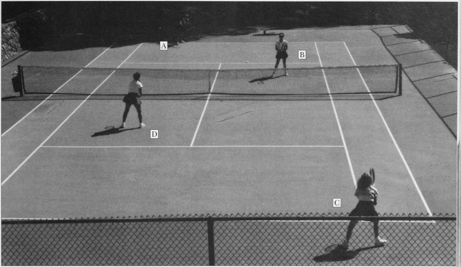
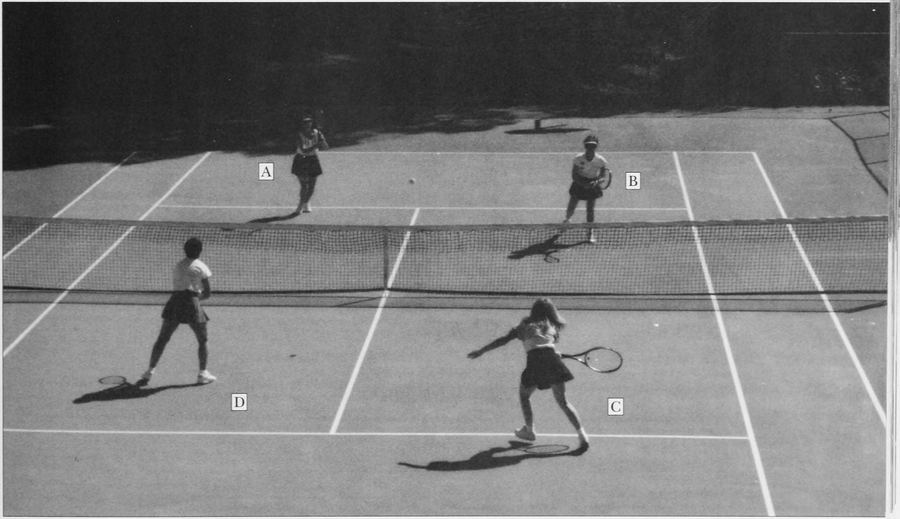
Tay vợt A giao bóng và lao vào lưới. Tay vợt C đánh trả cú drive chéo sân và ở lại phía sau.
Player A serves and rushes the net. Player C returns a drive crosscourt and stays back.
Tay vợt A cố gắng tiếp cận vạch giao bóng. Cú vô-lê đầu tiên đánh trả chéo sân. Sau khi cú đánh này được thực hiện, A tiến thêm khoảng 1 mét để lập thành bức tường với Tay vợt B.
Player A attempts to reach the service line. The first volley goes back crosscourt. After this shot is hit, A moves in 3 feet more to form the wall with Player B.
Tay vợt B giữ nguyên vị trí.
Player B holds his spot.
Tay vợt C nhún người sau đường cuối sân để chuẩn bị cho cú vô-lê của A. Anh ấy đối mặt với bức tường và buộc phải thoát ra. Cú đánh tiếp theo của anh ấy hoặc là đập mạnh xuống hành lang biên của mình, đập mạnh xuống giữa sân, cắt ngắn chéo sân, hoặc lốp bóng.
Player C bounces behind the baseline to prepare for A’s volley. He faces the wall and must escape. His next shot is either power down his alley, power middle, short crosscourt angle, or lob.
Tay vợt D giữ nguyên vị trí.
Player D holds his spot.
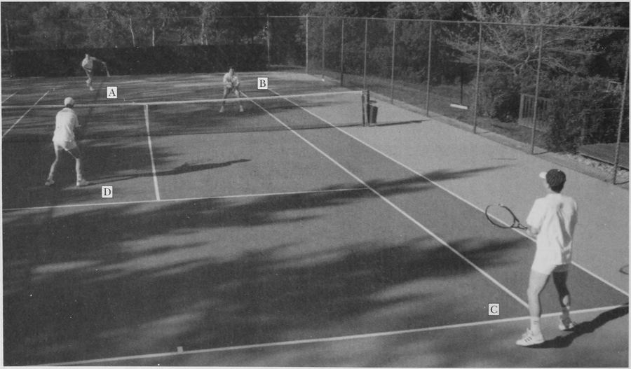
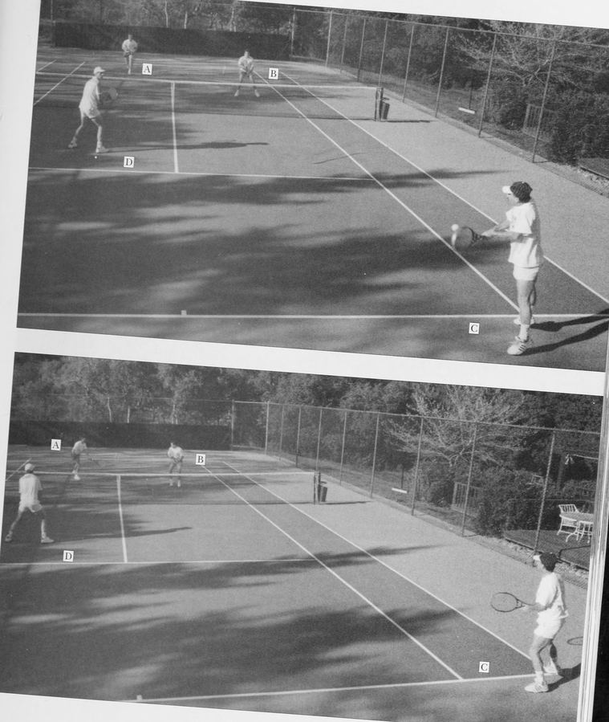
Tay vợt A giao bóng và ở lại phía sau. Tay vợt C lao vào lưới.
Player A serves and stays back. Player C rushes the net.
Tay vợt A nhún người sau đường cuối sân để chuẩn bị cho cú đỡ của C. Anh ấy đối mặt với bức tường và buộc phải thoát ra. Cú đánh tiếp theo của anh ấy hoặc là đập mạnh xuống hành lang biên của mình, đập mạnh xuống giữa sân, cắt ngắn chéo sân, hoặc lốp bóng.
Player A bounces behind the baseline to prepare for C’s return. He faces the wall and must escape. His next shot is either power down his alley, power middle, short crosscourt angle, or lob.
Tay vợt B giữ nguyên vị trí.
Player B holds his spot.
Tay vợt C lao vào lưới, cố gắng tiếp cận vạch ⅝. Tay vợt D giữ nguyên vị trí.
Player C rushes the net, attempting to reach the ⅝ line. Player D holds his spot.
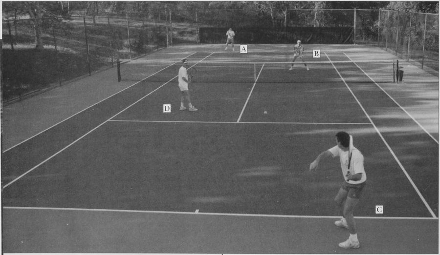
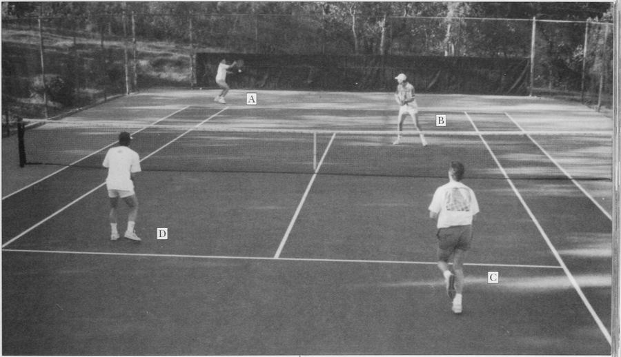
Tay vợt A giao bóng và lao lên lưới. Tay vợt C đánh trả cú drive mạnh về phía Tay vợt B và ở lại phía sau.
Player A serves and rushes the net. Player C returns a power drive to Player B and stays back.
Tay vợt A tiếp tục tiến vào tới vạch ⅝.
Player A continues in to the ⅝ line.
Tay vợt B giữ vững vị trí, cố gắng đánh xuyên qua người Tay vợt D.
Player B holds her ground, trying to power through Player D.
Tay vợt C ở lại phía sau.
Player C stays back.
Tay vợt D giữ vững vị trí.
Player D holds her ground.
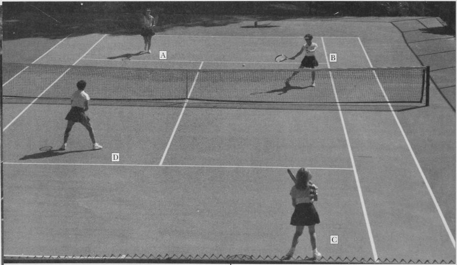
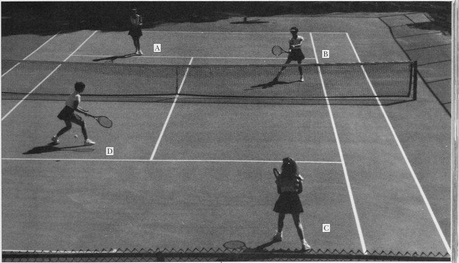
Tay vợt A giao bóng và lao lên lưới. Tay vợt C đỡ giao bóng bằng cú drive mạnh ở tầm thấp dưới lưới tới Tay vợt B và tiến vào theo sau cú đỡ bóng.
Player A serves and rushes the net. Player C returns a power drive below net level to Player B and comes in behind the return.
Tay vợt A tiếp tục tiến vào tới vạch ⅝.
Player A continues in to the ⅝ line.
Tay vợt B nhấn bóng bằng một cú chạm nhẹ xuống góc ngắn, xa khỏi Tay vợt C.
Player B dips the ball on a soft touch hit on the short angle away from Player C.
Tay vợt C cố gắng đón bóng.
Player C tries for the ball.
Tay vợt D có thể thử đuổi theo cú đánh.
Player D may try to chase the hit.
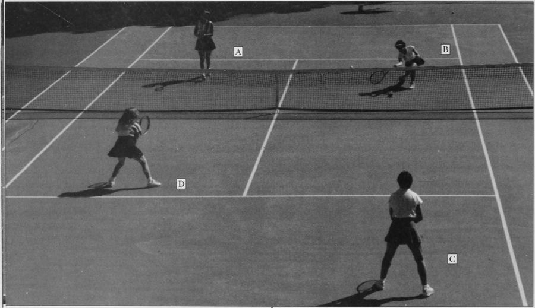
LƯU Ý: Ở Tình huống 4 và 5, Tay vợt C có thể hoặc tiến vào hoặc ở lại phía sau.
NOTE: For Scenarios 4 and 5, Player C may either come in or stay back.
Ở cả hai tình huống, Tay vợt B sẽ thử cú đỡ bóng mạnh xuyên qua Tay vợt D, được biết đến với tên gọi bài tập "mean drill", nếu bóng ở trên lưới. Nếu bóng rơi xuống dưới lưới, Tay vợt B sẽ đánh xéo bóng trở lại phía Tay vợt C.
For either scenario, Player B will try the power return through Player D, known as the mean drill, if the ball is above the net. If the ball lands below the net, Player B will angle the ball back to Player C’s side.
Tay vợt A giao bóng và ở lại phía sau đường cuối sân. Tay vợt C đánh trả cao về phía Tay vợt B.
Player A serves and remains behind the baseline. Player C returns high to Player B.
Sau đó A lao về phía vạch ⅝. (Khi đồng đội của bạn được mời chuyển sang tấn công, bạn lao vào lưới để hỗ trợ.) Tay vợt B giữ vững vị trí, cố gắng đánh xuyên qua Tay vợt D — bài tập "mean drill".
Player A then rushes toward ⅝ line. (When your partner is invited to go on the offensive, you rush the net in support.) Player B holds his ground, trying to power through Player D—the mean drill.
Tay vợt C tiếp tục tiến vào lưới.
Player C continues in toward the net.
Tay vợt D giữ vững vị trí, cố gắng chịu đựng cú đánh mạnh.
Player D holds his ground, trying to survive the big hit.
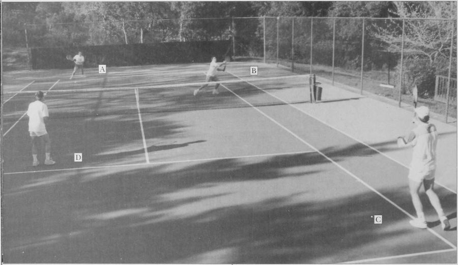
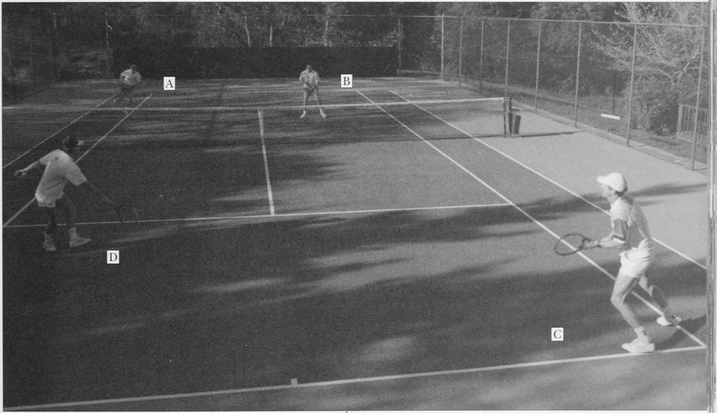
Tay vợt A giao bóng và ở lại phía sau đường cuối sân. Cú đỡ giao bóng được đánh thấp về phía Tay vợt B.
Player A serves and remains behind the baseline. The return of serve is hit low to Player B.
Tay vợt A sau đó lao về phía vạch ⅝.
Player A then rushes toward the ⅝ line.
Tay vợt B cố đánh một cú xoáy xuống theo góc ngắn về phía Tay vợt C.
Player B tries to hit a dip angle short toward Player C.
Tay vợt C tiếp tục tiến vào lưới.
Player C continues in toward the net.
Tay vợt D giữ vững vị trí, cố gắng chịu đựng cú đánh mạnh.
Player D holds his ground, trying to survive the big hit.
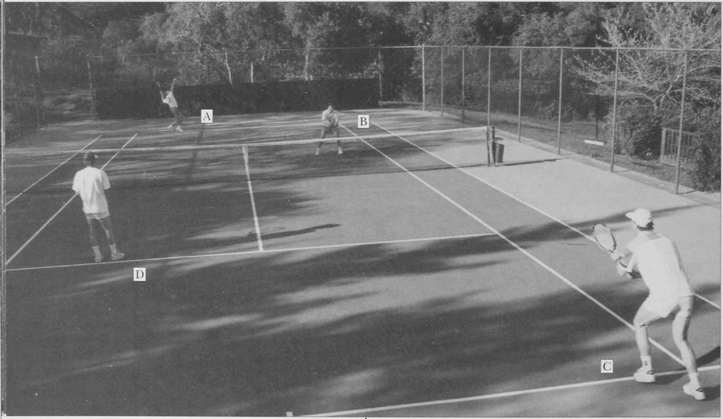
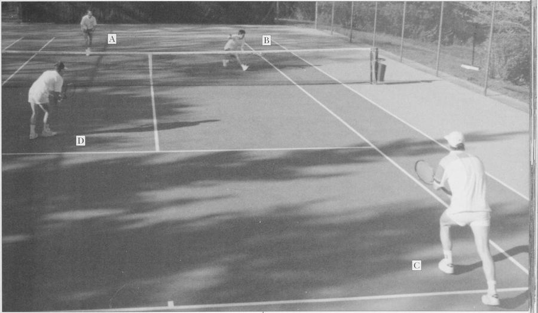
Tay vợt A giao bóng và vô-lê. Tay vợt C lốp bóng đỡ về phía Tay vợt A.
Player A serves and volleys. Player C lobs the return toward Player A.
Tay vợt A dừng lại, đánh cú đập bóng trên cao, rồi tiếp tục tiến về phía lưới.
Player A stops, hits the overhead, then proceeds toward the net.
Tay vợt B bắt đầu lùi lại để đón cú lốp bóng nhưng, khi thấy Tay vợt A có thể xử lý bóng, tiến lên phía lưới.
Player B starts back to cover the lob but, seeing that Player A can cover the ball, advances toward net.
Tay vợt C giữ nguyên vị trí nếu Tay vợt A đánh cú đập bóng trên cao. Tay vợt D, ở vạch ⅝, lùi về đường cuối sân cùng đồng đội trừ khi anh ấy cảm thấy dũng cảm hoặc muốn khiêu khích.
Player C holds his position if Player A hits the overhead. Player D, at the ⅝ line, retreats to the baseline with his partner unless he feels brave or insulting.
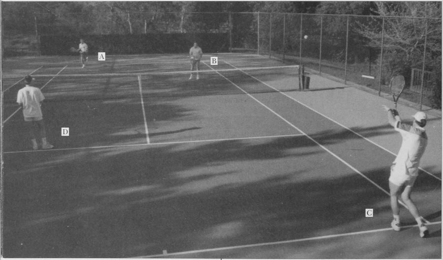
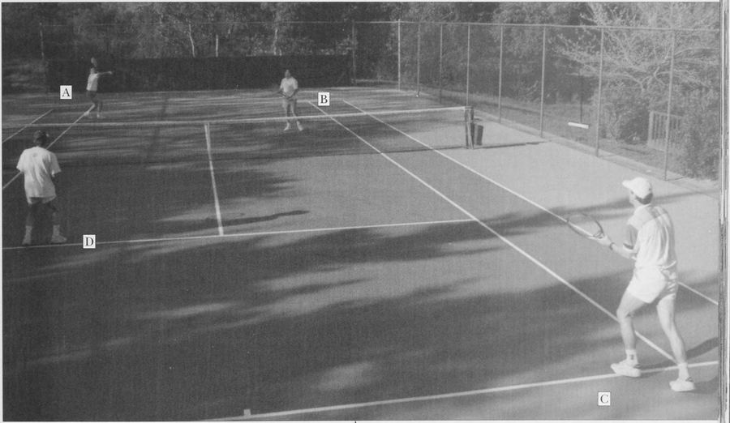
Tay vợt A giao bóng và đánh vô-lê. Tay vợt C lốp cú đỡ giao bóng qua đầu Tay vợt A.
Player A serves and volleys. Player C lobs the return over Player A.
Tay vợt A lùi lại, để bóng nảy, rồi đánh bóng. Tay vợt B lùi về đường cuối sân cùng đồng đội. Tay vợt C lao về phía lưới.
Player A runs back, lets the ball bounce, then hits it. Player B retreats to the baseline with his partner. Player C charges toward the net.
Tay vợt D giữ nguyên vị trí.
Player D holds his position.
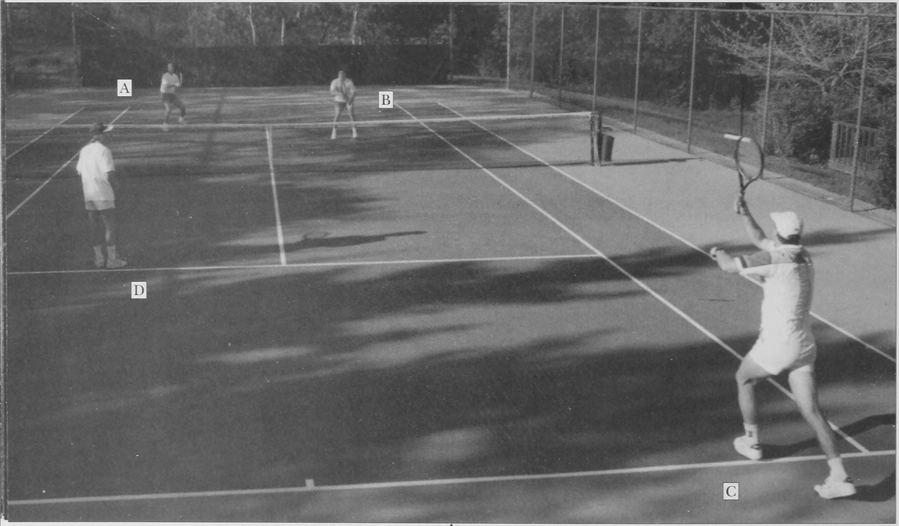
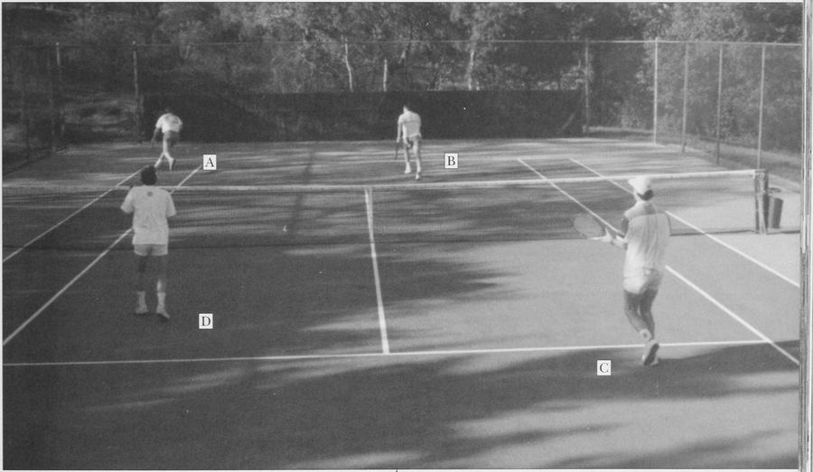
Tay vợt A giao bóng và giữ nguyên vị trí. Tay vợt C lốp bóng trả về phía Tay vợt A.
Player A serves and stays back. Player C lobs the return toward Player A.
Tay vợt A tiến vào và đập bóng trên cao. Tay vợt B giữ nguyên vị trí.
Player A comes in and hits the overhead. Player B holds his position.
Tay vợt C giữ nguyên vị trí.
Player C holds his position.
Tay vợt D giữ nguyên vị trí.
Player D holds his position.
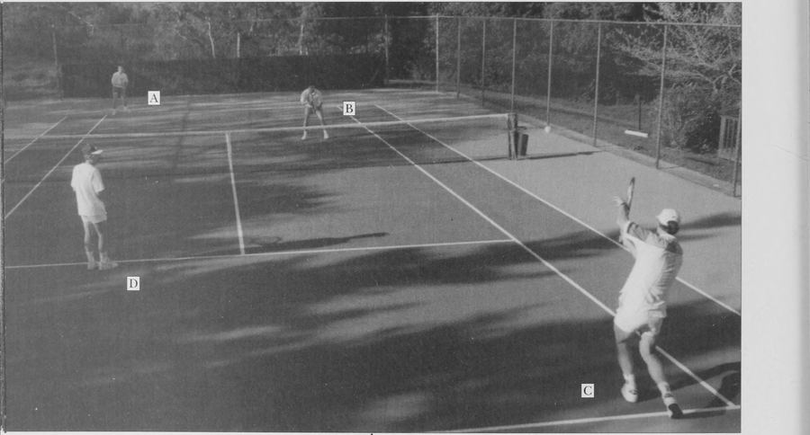
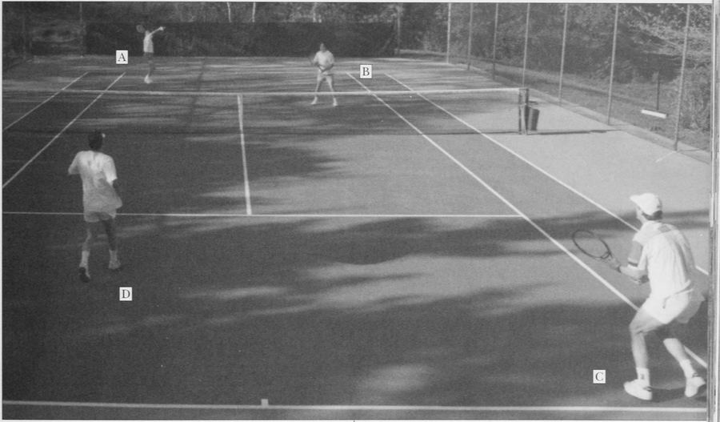
Tay vợt A giao bóng và đánh vô-lê. Tay vợt C lốp cú trả bóng qua đầu Tay vợt B.
Player A serves and volleys. Player C lobs the return over Player B.
Tay vợt A tiến về phía vạch ⅝ nếu Tay vợt B đánh cú đập trên cao.
Player A advances toward the ⅝ line if Player B hits the overhead.
Tay vợt B đập bóng trên cao và lùi về vạch ⅝.
Player B hits the overhead and returns to the ⅝ line.
Tay vợt C giữ nguyên vị trí.
Player C holds his position.
Tay vợt D giữ nguyên vị trí nếu bóng đi sâu. Nếu cú lốp ngắn, Tay vợt D lùi về đường cuối sân.
Player D holds his position if the ball is deep. If the lob is short, Player D retreats to the baseline.
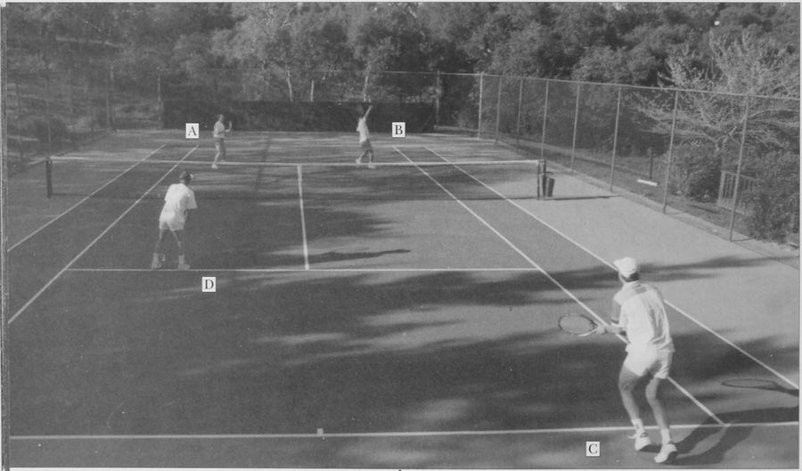
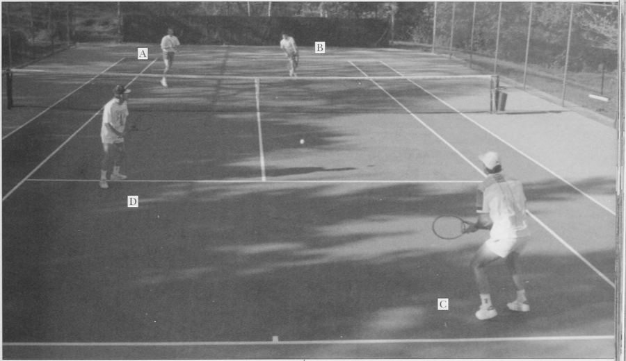
Tay vợt A giao bóng và lên lưới. Tay vợt C lốp bóng trả qua đầu Tay vợt B, người chạy lùi lại, để bóng nảy rồi đánh trả.
Player A serves and volleys. Player C lobs the return over Player B, who runs back, lets the ball bounce, then hits it.
Tay vợt A lùi cùng đồng đội về đường cuối sân.
Player A retreats with her partner to the baseline.
Tay vợt B đã lùi về đường cuối sân.
Player B has retreated to the baseline.
Tay vợt C tấn công về phía vạch ⅝ khi đối phương lùi lại.
Player C attacks toward the ⅝ line when the opposition retreats.
Tay vợt D giữ nguyên vị trí.
Player D holds her position.
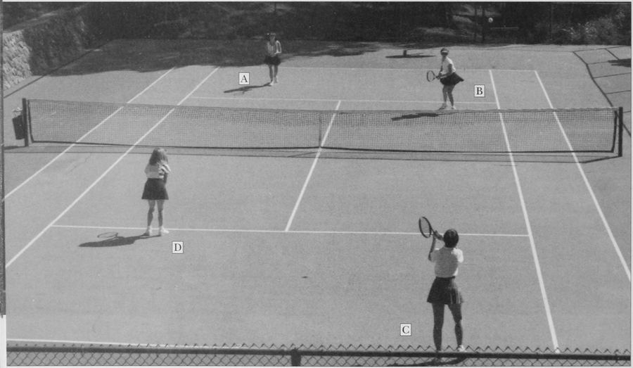
Tay vợt A giao bóng và ở lại phía sau. Tay vợt C lốp cú trả qua đầu Tay vợt B, người đập bóng trên cao.
Player A serves and stays back. Player C lobs the return over Player B, who hits the overhead.
Tay vợt A tiến về phía vạch ⅝.
Player A advances toward the ⅝ line.
Tay vợt B đập bóng trên cao.
Player B hits an overhead.
Tay vợt C giữ nguyên vị trí.
Player C holds his position.
Tay vợt D giữ nguyên vị trí nếu bóng rơi sâu hoặc lùi lại nếu cú đánh ngắn.
Player D holds his position if the ball lands deep or retreats if it is short.
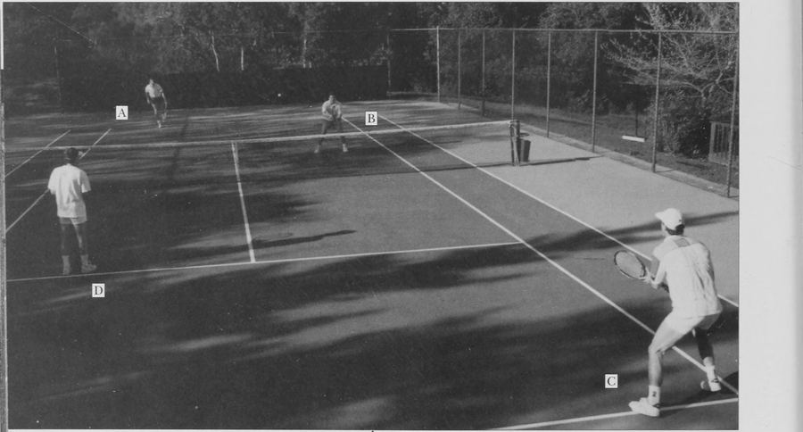
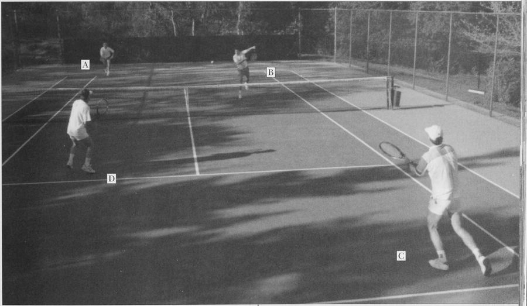
Tay vợt A giao bóng và giữ nguyên vị trí. Tay vợt C lốp cú trả bóng tốt qua đầu Tay vợt B. Tay vợt B hét lên, "Cứu tôi."
Player A serves and stays back. Player C hits a good lob return over Player B. Player B yells, “Help.”
Tay vợt A băng ngang qua và hoặc đánh bóng ngay khi bóng chưa chạm đất (blitz) hoặc để bóng nảy.
Player A crosses over and either hits the ball on the fly (blitzes) or lets it bounce.
Tay vợt B đổi vị trí và tiến lên khi blitz hoặc lùi lại khi bóng nảy.
Player B switches and advances on the blitz or retreats on the bounced ball.
Tay vợt C di chuyển vào phía lưới.
Player C moves in toward the net.
Tay vợt D giữ nguyên vị trí.
Player D holds his position.
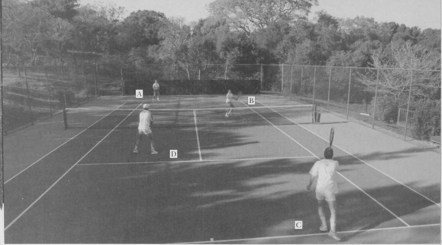
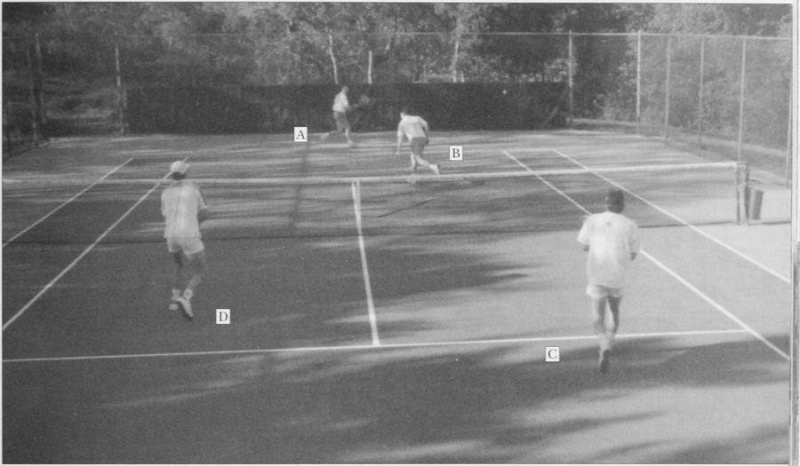
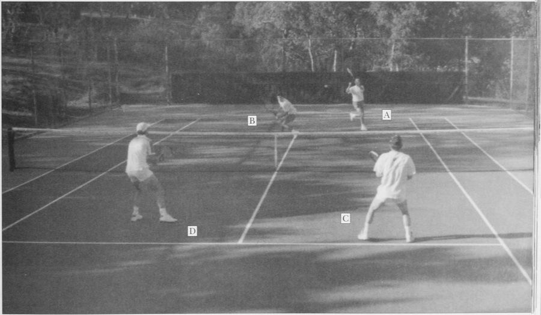
Tay vợt A giao bóng xoáy ngang cho Tay vợt C và tiến lên lưới.
Player A serves wide to Player C and advances toward net.
Tay vợt A di chuyển vào phía lưới, nghiêng về giữa sân.
Player A moves in toward the net, hedging toward the middle of the court.
Tay vợt B trượt hai bước về phía hành lang biên.
Player B slides two steps toward the alley.
Tay vợt C trả bóng đi bất kỳ đâu; tuy nhiên, vì góc độ đã thay đổi, cú đánh dọc biên giờ có lợi cho anh ta.
Player C returns anywhere; however, because the angle has changed, the down-the-line shot is now in his favor.
Tay vợt D trượt vào giữa hai bước.
Player D slides to the middle two steps.
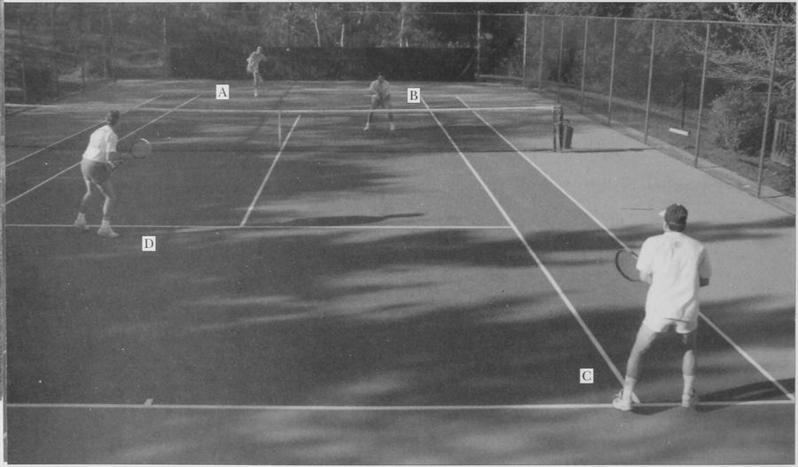
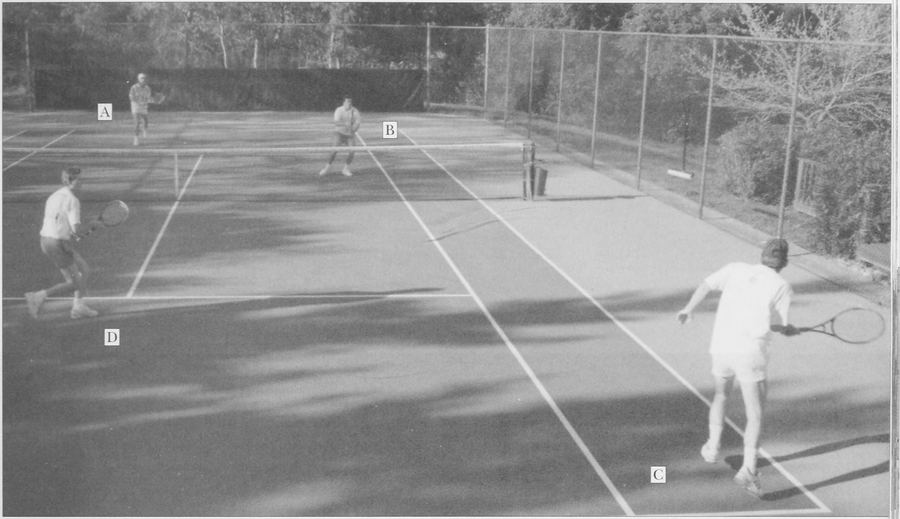
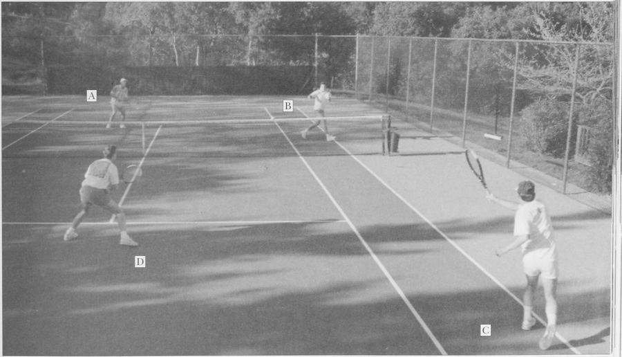
Tay vợt A giao bóng xoáy ngang cho Tay vợt C và giữ nguyên vị trí.
Player A serves wide to Player C and stays back.
Tay vợt A trượt vào giữa sân.
Player A slides to the middle of the court.
Tay vợt B trượt hai bước về phía hành lang biên.
Player B slides two steps toward the alley.
Tay vợt C trả bóng đi bất kỳ đâu; tuy nhiên, vì góc độ đã thay đổi, cú đánh dọc biên giờ có lợi cho cô ấy.
Player C returns anywhere; however, because the angle has changed, the down-the-line shot is now in her favor.
Tay vợt D trượt vào giữa hai bước.
Player D slides to the middle two steps.
Tay vợt A giao bóng và lên lưới (serve and volley). Tay vợt C trả bóng ngắn và lốp bóng về phía Tay vợt A.
Player A serves and volleys. Player C returns short and floats the ball toward Player A.
Tay vợt A, sau một bước tách chân, lao vào quả bóng, nhắm tới chiến thắng bằng cách đánh mạnh dọc biên hoặc đưa bóng ngắn theo góc, trở lại phía sân của Tay vợt C. Vì bóng lốp bổng, Tay vợt A có thể tận dụng thêm thời gian để di chuyển vào phía trong vạch thắng, vạch ⅝.
Player A, after a split step, charges the ball, going for the win by powering the ball down the line or angling it short, back to Player C’s side. Because the ball floated, Player A can use the extra time to move inside the win line, the ⅝ line.
Tay vợt B giữ nguyên vị trí.
Player B holds his position.
Tay vợt C giữ nguyên vị trí.
Player C holds his position.
Tay vợt D chạy hết sức.
Player D runs for his life.
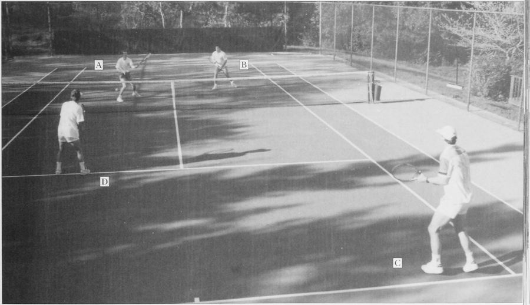
Tay vợt A giao bóng và đánh vô-lê. Tay vợt C lốp bóng về phía Tay vợt B.
Player A serves and volleys. Player C floats the ball to Player B.
Tay vợt B tấn công quả bóng, nhắm tới phần thắng. Anh ta đánh mạnh bóng vòng qua Tay vợt D hoặc đưa bóng ngắn theo góc về phía Tay vợt C.
Player B attacks the ball, going for the win. He powers the ball around Player D or short-angles Player C.
Tay vợt A tiếp tục áp sát lưới.
Player A continues to close toward the net.
Tay vợt C giữ nguyên vị trí.
Player C holds his position.
Tay vợt D chạy hết sức.
Player D runs for his life.
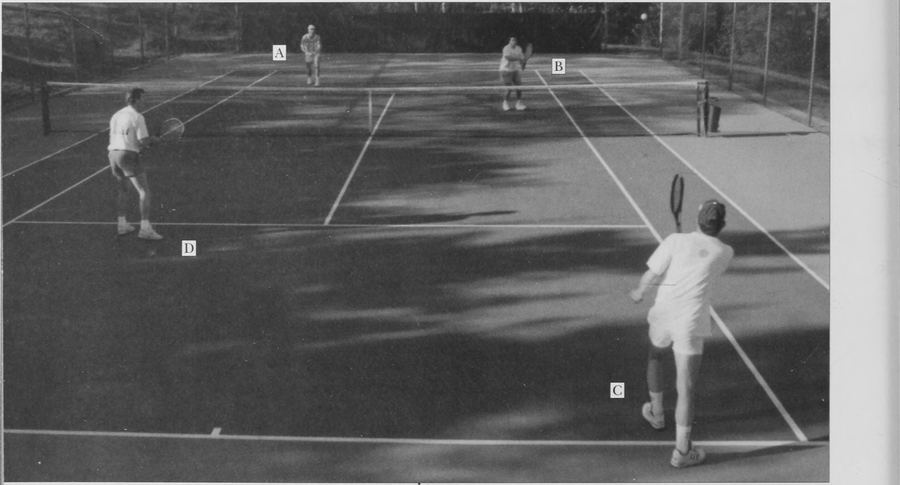
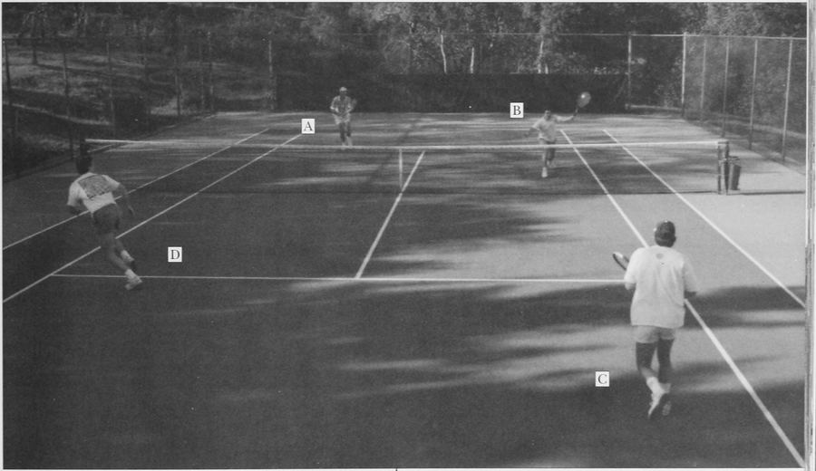
Các pha cướp bóng (poach)Poaching Plays
Trong suốt một trận đấu bình thường, người giao bóng thường phải đối mặt với khoảng 50 quả bóng phải đánh trong các game giao bóng của mình. Nhưng tôi và người đồng đội Mark đã từng chơi những trận đánh đôi mà người giao bóng chỉ đánh đúng hai quả bóng sau cú giao. Có lần chúng tôi còn chơi một set mà Mark không hề đánh quả bóng nào sau khi giao bóng, nhờ vào sự di chuyển của tôi ở lưới. Mục đích của sự di chuyển là hướng cú đánh của đối phương về phía người đứng lưới, hoặc tốt hơn nữa, là làm đối phương bối rối để họ đơn giản là đánh trượt.
During the course of a normal match, the server will often be faced with about 50 balls to hit during his or her service games. But my partner Mark and I have played doubles matches in which the server hit only two balls after the serve. Once we even played a set in which Mark never hit a ball after he served because of my movement at the net. The purpose of the movement is to draw the opponent’s hit to the net player or, better yet, confuse the opponents so that they simply miss.
Khi tôi cướp bóng, tôi cố làm cho đối phương tin rằng cú đánh chéo sân là an toàn, rồi tôi chặn nó lại. Khi tôi giả động tác cướp bóng (fake), tôi cố làm cho đối phương nghĩ rằng cú đánh dọc biên là an toàn, nhưng tôi bịt kín hướng đó. Khi chúng tôi chơi, chúng tôi có một công thức đơn giản: Giao bóng đầu tiên vào sân, và người đứng lưới sẽ làm phần còn lại.
When I am poaching, I try to make the opponent believe that the crosscourt shot is safe, then I close it off. When I fake the poach, I try to make the opponent think that the down-the-line shot is safe, but I close it down. When we play, we have a simple formula: Get the first serve in, and the net player will do the rest.
Tay vợt A nên giao bóng vào giữa sân, tiến hai bước, rồi bứt tốc sang phía bên kia và vào trong. Tay vợt A vẫn phải tới được vạch giao bóng.
Player A should serve to the middle, take two steps in, then break to the other side and in. Player A must still get to the service line.
Tay vợt B chờ cho bóng chạm đất và đầu của Tay vợt C cúi xuống để đánh bóng, rồi lao vào theo góc, đánh hoặc một cú mạnh vòng qua Tay vợt D hoặc một cú ngắn theo góc trở lại phía Tay vợt C, rồi tiếp tục di chuyển để đổi bên. Tay vợt B không nên quay lại vị trí ban đầu.
Player B waits until the ball has landed and Player C’s head goes down to hit the ball, then sprints in on the angle, hitting either a power shot around Player D or a short angle back to Player C, then continues his movement to change sides. Player B should not return to his original spot.
Tay vợt C lao lên lưới hoặc giữ nguyên vị trí.
Player C rushes the net or stays back.
Tay vợt D cầu mong điều tốt nhất và giữ vững vị trí.
Player D hopes for the best and holds his ground.
Cướp bóng: Tay vợt A giao bóng và đánh vô-lê; Tay vợt C trả bóng chéo sân.
Poaching: Player A serves and volleys; Player C returns crosscourt.
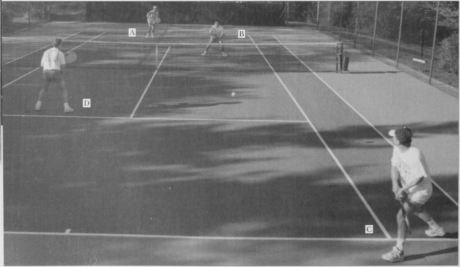
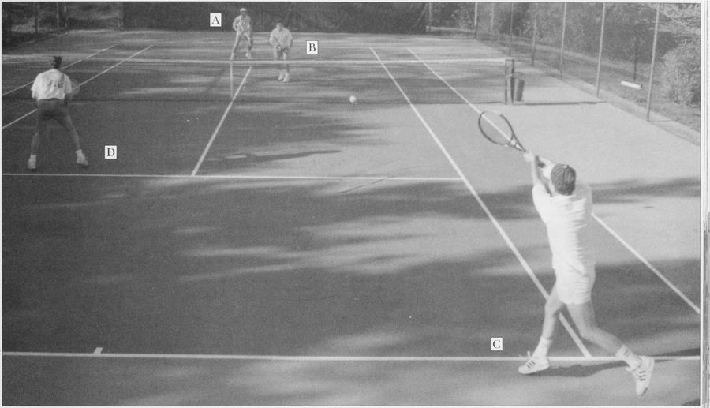
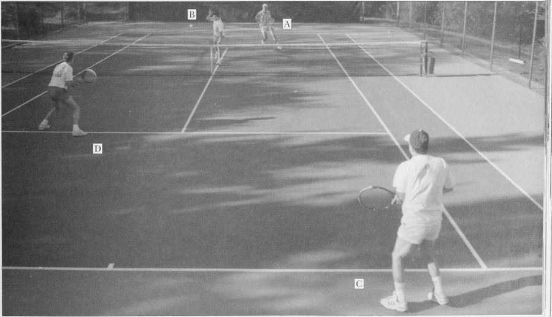
Cướp bóng; Tay vợt A giao bóng và ở lại phía sau; Tay vợt C đỡ giao bóng chéo sân.
Poaching; Player A serves and stays back; Player C returns crosscourt.
Tay vợt A giao bóng, chờ một nhịp, rồi bứt tốc sang phía bên kia.
Player A serves, waits one count, then breaks to the other side.
Tay vợt B chờ cho bóng chạm đất và đầu của Tay vợt C cúi xuống để đánh bóng, rồi lao vào theo góc, đánh hoặc một cú mạnh vòng qua Tay vợt D hoặc một cú ngắn theo góc trở lại phía Tay vợt C.
Player B waits until the ball has landed and Player C’s head goes down to hit the ball, then sprints in on the angle, hitting either a power shot around Player D or a short angle back to Player C.
Tay vợt C đỡ giao bóng chéo sân.
Player C returns crosscourt.
Tay vợt D cầu mong điều tốt nhất và giữ vững vị trí.
Player D hopes for the best and holds her ground.
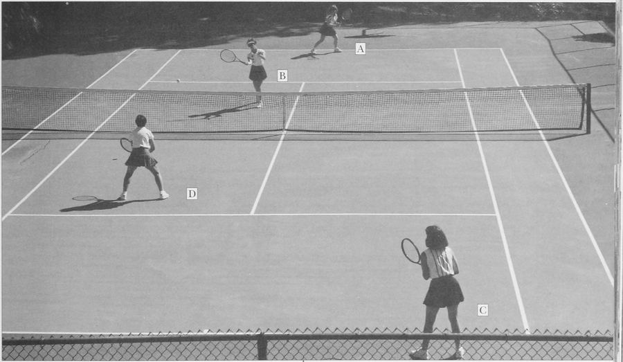
Cướp bóng: Tay vợt A giao bóng và đánh vô-lê; Tay vợt C trả bóng dọc biên.
Poaching: Player A serves and volleys; Player C returns down the line.
Tay vợt A chạy ngang theo hướng chéo và đánh cú vô-lê đầu tiên sâu xuống sâu, dọc biên về phía Tay vợt C.
Player A runs over on the cross and hits the first volley deep to deep, down the line to Player C.
Tay vợt B, người đã băng ngang, bật ra vạch ⅝.
Player B, who crossed, bounces out to the ⅝ line.
Tay vợt C di chuyển hoặc lên hoặc lùi.
Player C moves either up or back.
Tay vợt D phải trượt vào giữa để bịt khoảng trống.
Player D must slide to the middle to close the gap.
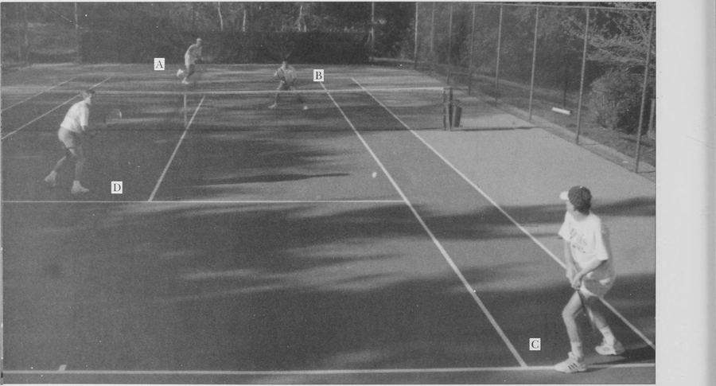
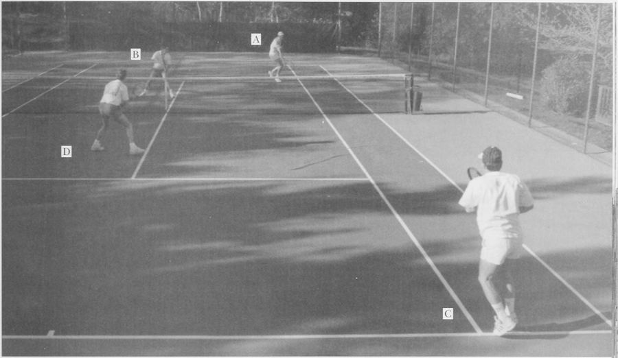
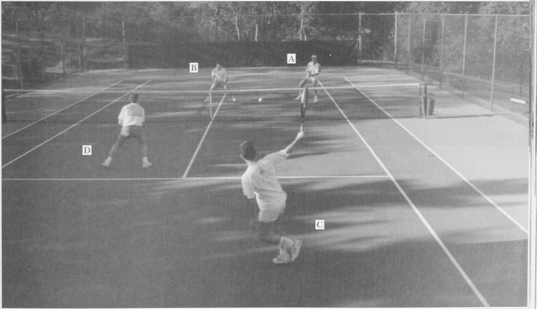
Cướp bóng: Tay vợt A giao bóng và ở lại phía sau; Tay vợt C đỡ giao bóng dọc biên.
Poaching: Player A serves and stays back; Player C returns down the line.
Tay vợt A giao bóng, chạy ngang qua bên chéo sân, và trả bóng sâu về phía Tay vợt C.
Player A serves, runs over on the cross, and returns the ball deep to Player C.
Tay vợt B đổi bên với Tay vợt A.
Player B switches sides with Player A.
Tay vợt C vẫn ở phía sau. Nếu Tay vợt C lên lưới, Tay vợt A phải thoát ra.
Player C remains back. If Player C comes in, Player A must escape.
Tay vợt D bịt kín giữa sân.
Player D squeezes the middle.
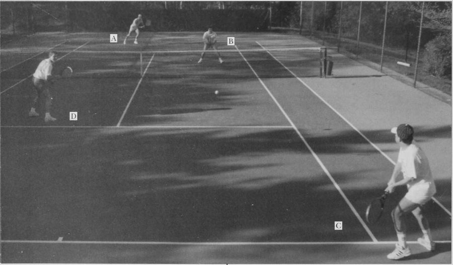
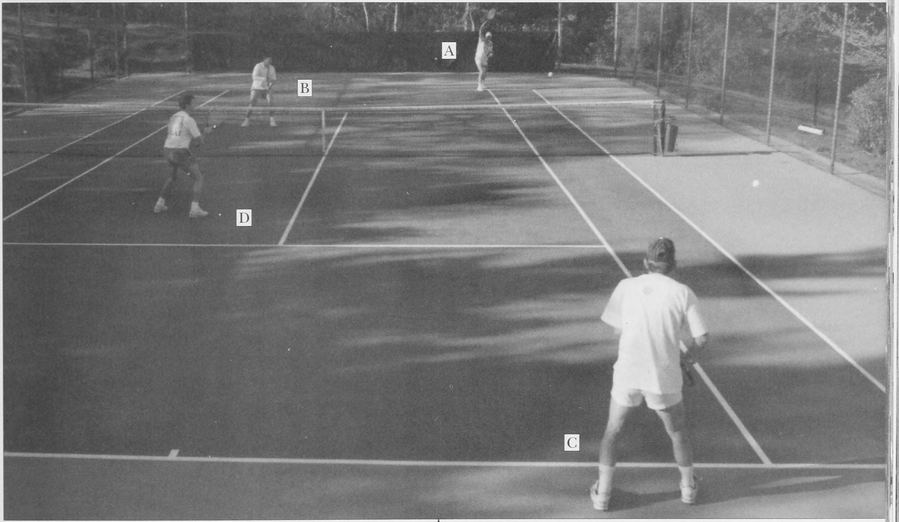
Cướp bóng (poach): Tay vợt A giao bóng rồi lên lưới; Tay vợt C trả bóng mạnh xuống giữa sân.
Poaching: Player A serves and volleys; Player C returns power middle.
Tay vợt A giao bóng rồi lên lưới.
Player A serves and volleys.
Tay vợt B phải với ra sau để bọc lấy bóng.
Player B must reach back to cover the ball.
Tay vợt C vẫn ở phía sau hoặc lên lưới.
Player C remains back or comes in.
Tay vợt D cầu mong điều tốt đẹp nhất và giữ nguyên vị trí.
Player D hopes for the best and holds his ground.
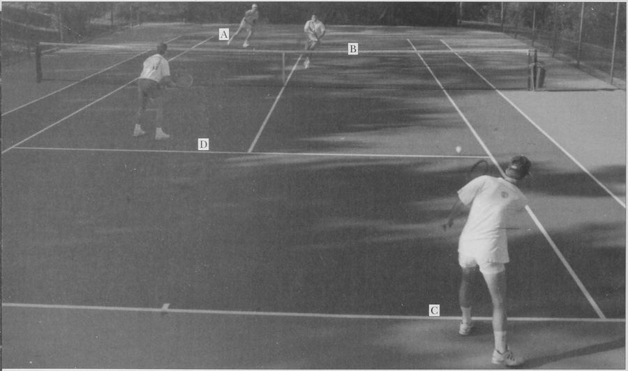
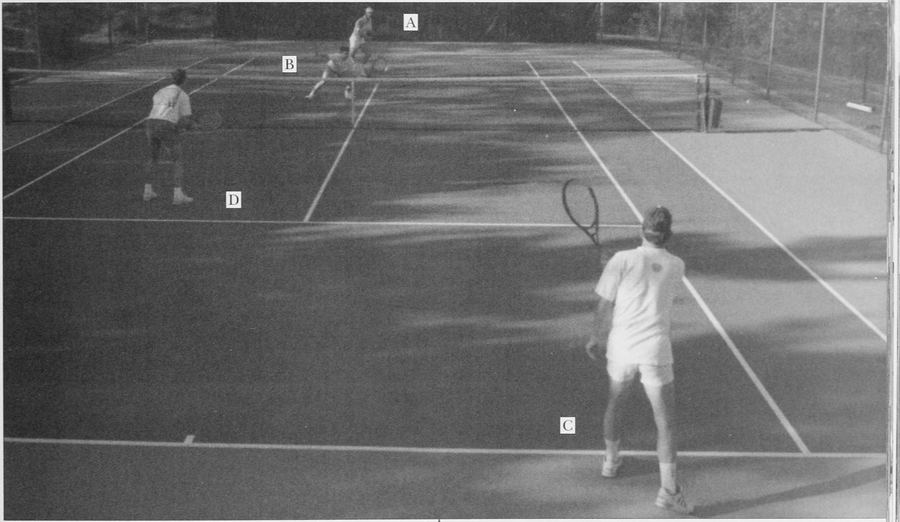
Tay vợt A giao bóng và lao lên lưới. Tay vợt B cướp bóng; Tay vợt C lốp bóng qua đầu Tay vợt B.
Player A serves and rushes the net. Player B poaches; Player C lobs over Player B.
Tay vợt A di chuyển vào trong, rồi băng ngang qua.
Player A moves in, then crosses over.
Tay vợt B phải đọc hướng bóng, rồi lùi lại để lấy bóng.
Player B must read the ball, then go back to get the ball.
Tay vợt C lên lưới nếu cú lốp bóng sâu hoặc giữ nguyên vị trí nếu cú lốp bóng ngắn.
Player C comes in if the lob is deep or holds his position if it is short.
Tay vợt D lùi lại nếu cú lốp bóng ngắn hoặc giữ nguyên nếu cú lốp bóng sâu.
Player D goes back if the lob is short or remains if the lob is deep.
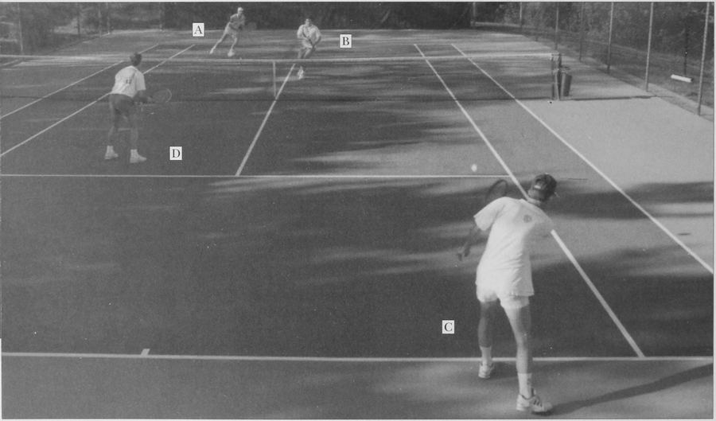
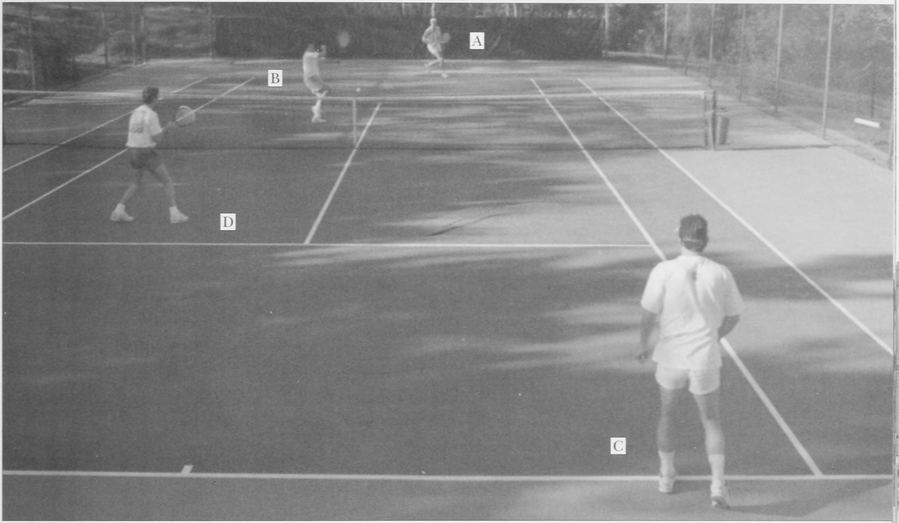
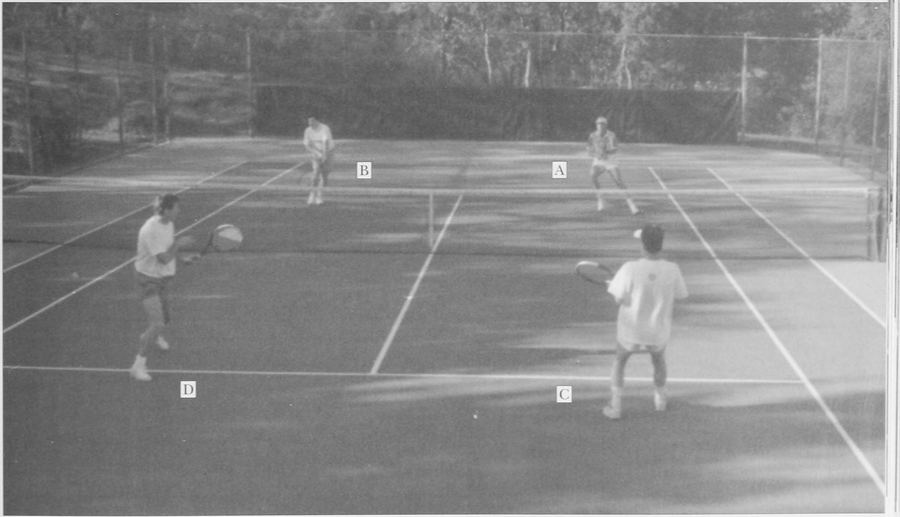
Tay vợt A giao bóng và lao lên lưới. Tay vợt B cướp bóng (poach); Tay vợt C lốp bóng cho Tay vợt A.
Player A serves and rushes the net. Player B poaches; Player C lobs to Player A.
Tay vợt A hãm phanh lại và đập bóng trên cao.
Player A puts on the brakes and hits the overhead.
Tay vợt B đi đến vạch biên ở bên mới.
Player B goes to the * line on the new side.
Tay vợt C lên lưới nếu cú lốp bóng sâu hoặc giữ nguyên vị trí nếu cú lốp bóng ngắn.
Player C comes in if the lob is deep or holds his position if it is short.
Tay vợt D cầu mong điều tốt đẹp nhất và giữ nguyên vị trí.
Player D hopes for the best and holds his ground.
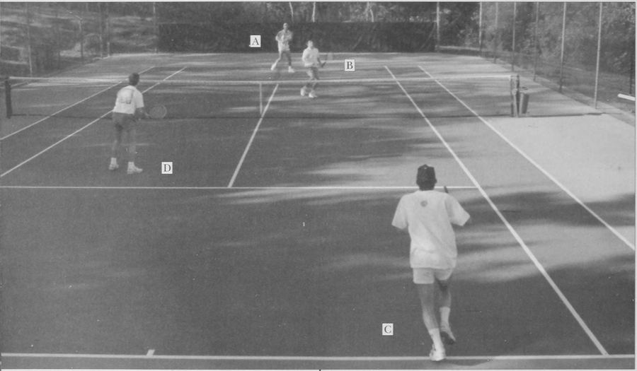
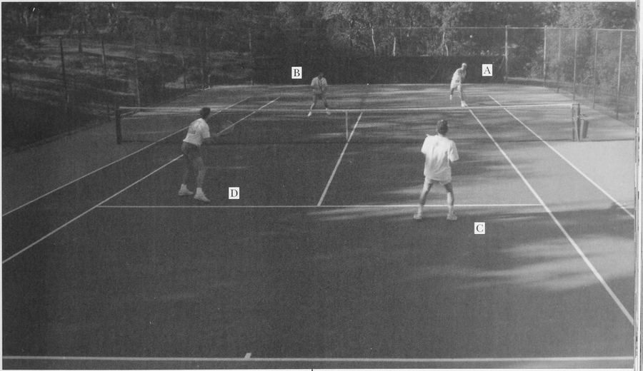
Tay vợt A giao bóng và lao lên lưới trong khi Tay vợt B giả động tác cướp bóng (fake). Tay vợt C trả bóng chéo sân.
Player A serves and rushes the net while Player B fakes the poach. Player C returns crosscourt.
Tay vợt A vô-lê sâu trả bóng lại cho Tay vợt C. Tay vợt B giữ nguyên.
Player A volleys deep back to Player C. Player B stays.
Tay vợt C có thể lên lưới hoặc ở lại phía sau. Tay vợt D giữ nguyên vị trí.
Player C may come in or stay back. Player D holds his position.
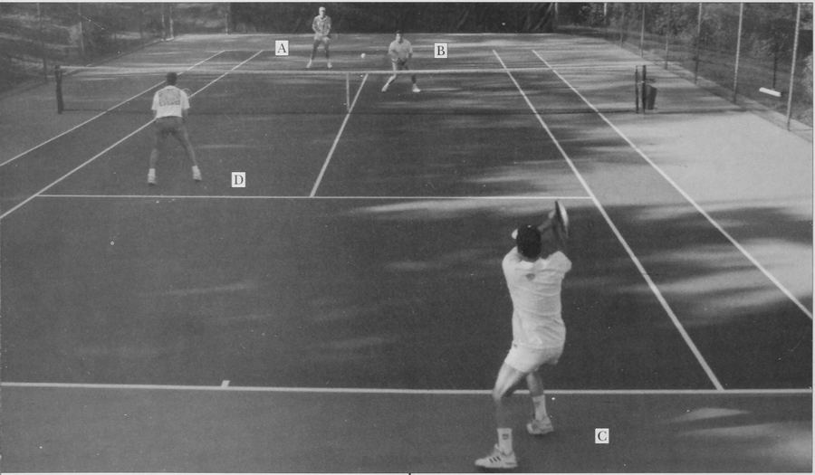
Tay vợt A giao bóng và đánh vô-lê trong khi Tay vợt B giả động tác cướp bóng (poach). Tay vợt C thấy Tay vợt B di chuyển, tin vào động tác giả, và trả bóng dọc biên.
Player A serves and volleys while Player B fakes the poach. Player C sees Player B move, believes the fake, and returns down the line.
Tay vợt A tiếp tục lên lưới.
Player A continues to the net.
Tay vợt B đánh bóng theo góc cho Tay vợt C hoặc dồn sức đánh về phía Tay vợt D.
Player B angles the ball to Player C or powers it toward Player D.
Tay vợt C có thể ở lưới hoặc ở phía sau.
Player C may be in or back.
Tay vợt D bịt kín giữa sân.
Player D squeezes the middle.
Tay vợt A giao bóng và đánh vô-lê. Tay vợt C đánh trả bóng vào chân Tay vợt A.
Player A serves and volleys. Player C hits the return at Player A’s feet.
Tay vợt A vô-lê chéo sân.
Player A volleys crosscourt.
Tay vợt B giữ nguyên vị trí.
Player B holds his position.
Tay vợt C băng ngang qua.
Player C crosses over.
Tay vợt D tiến vào đón bóng góc và dồn sức đánh xuyên qua một trong hai người.
Player D moves in on the angle and powers the ball through either player.
Tay vợt A giao bóng và vô-lê. Tay vợt C trả bóng chéo sân. Tay vợt A vô-lê dồn sức vào giữa sân.
Player A serves and volleys. Player C returns crosscourt. Player A power volleys in the middle of the court.
Tay vợt B giữ nguyên vị trí.
Player B holds his position.
Tay vợt C hoặc ở lưới hoặc ở phía sau. Nếu Tay vợt D băng ngang qua, thì C đổi sang bên của D.
Player C is either in or back. If Player D crosses over, then C switches to D’s side.
Tay vợt D cắt bóng đi. Anh ta đang tìm cách di chuyển, vì thế bóng giữa sân là của anh ta. Thông thường Tay vợt D sẽ không đi qua vạch giữa sân mà trả bóng về bên của mình. Tay vợt D dồn sức đánh bóng vào Tay vợt A hoặc Tay vợt B.
Player D picks off the ball. He is looking to move, thus the middle ball is his. Usually Player D will not go over the middle line but return to his side. Player D powers the ball at either Player A or Player B.
Thế đứng Australian: Tay vợt C trả bóng chéo sân.
Australian positioning: Player C returns crosscourt.
Tay vợt A đứng gần vạch giữa sân, như thể đang giao bóng đơn. Sau khi giao bóng, Tay vợt A di chuyển sang bên đối diện với mình. Tay vợt B giữ nguyên và dồn sức drive (bạt) cho Tay vợt D hoặc đánh góc cho Tay vợt C.
Player A stands near the center mark, as if serving in singles. After the serve, Player A moves to the side opposite him. Player B holds and goes for the power drive to Player D or angles to Player C.
Tay vợt C ở lưới hoặc lùi lại.
Player C stays in or moves back.
Tay vợt D giữ nguyên vị trí.
Player D holds his position.
LƯU Ý: Nếu Tay vợt B giả động tác cướp bóng, tình huống này vẫn được áp dụng.
NOTE: If Player B fakes the poach, the same scenario is used.
Thế đứng Australian; Tay vợt C đỡ giao bóng dọc biên. Tay vợt A đứng gần vạch giữa sân như thể đang giao bóng đơn, rồi lao lên lưới ở bên mới.
Australian positioning; Player C returns down the line. Player A stands near the center mark as if serving in singles, then rushes the net on the new side.
Tay vợt A vô-lê thẳng, đánh bóng sâu cho sâu về phía Tay vợt C.
Player A volleys straight, hitting the ball deep to deep to Player C.
Tay vợt B giữ nguyên vị trí.
Player B holds his position.
Tay vợt C ở lưới hoặc lùi lại.
Player C stays in or moves back.
Tay vợt D bịt kín giữa sân.
Player D squeezes the middle of the court.
Thế đứng Australian: Tay vợt B cướp bóng (poach), và Tay vợt C trả bóng chéo sân. Tay vợt A đứng gần vạch giữa sân như thể đang giao bóng đơn, rồi lao lên lưới ở cùng bên mà mình đã giao bóng.
Australian positioning: Player B poaches, and Player C returns crosscourt. Player A stands near the center mark as if serving in singles, then rushes the net on the same side from which she served.
Tay vợt A vô-lê sâu cho Tay vợt C.
Player A volleys deep to Player C.
Tay vợt B ổn định vị trí của mình.
Player B stabilizes her position.
Tay vợt C ở lưới hoặc lùi lại.
Player C stays in or moves back.
Tay vợt D trượt về vị trí cơ bản của mình.
Player D slides back to her base position.
Đội hình Australian: Tay vợt B cướp bóng (poach), và Tay vợt C trả bóng dọc biên.
Australian positioning: Player B poaches, and Player C returns down the line.
Tay vợt A tiếp tục tiến vào lưới.
Player A continues in to the net.
Tay vợt B vô-lê dồn sức cho Tay vợt D hoặc vô-lê góc cho Tay vợt C.
Player B power volleys Player D or angle volleys to Player C.
Tay vợt C ở lưới hoặc lùi lại.
Player C stays in or moves back.
Tay vợt D bịt kín giữa sân.
Player D squeezes.
Các pha bóng đang diễn ra — Những pha lên lưới, ở lại phía sauPoints in Progress—One Up, One Back Plays
Trong những tình huống này, cả người giao bóng lẫn người đỡ giao bóng đều không lao lên lưới, nên các đấu thủ vẫn giữ thế một người trên lưới một người dưới sân. Mục tiêu là để những người ở sâu đánh sâu cho người ở sâu bên kia, nhưng điều đó không phải lúc nào cũng xảy ra.
In these scenarios, neither the server nor the returner has rushed the net, so the players remain in the one up and one back position. The goal is for the deep players to hit deep to deep, but this may not always happen.
Các khu vực cho từng cú đánhZones for Strokes
Ô giao bóng. Bất kỳ bóng nào rơi vào trong ô giao bóng đều là lời mời lên lưới. Trong đánh đôi, cú lên lưới nên đánh chéo sân. Sau khi đánh cú này, bạn tiến vào lưới. Nếu bạn có cú cắt bóng trong kho vũ khí của mình, đây chính là vũ khí được chọn để dùng khi bạn lên lưới.
The service square. Any ball that lands inside the service square is an invitation to come to the net. In doubles, the approach shot should go crosscourt. After you hit this shot, you go in to the net. If you have a slice shot in your repertoire, this is the weapon of choice to use as you come in.
Chín feet tiếp theo trên sân, tính từ vạch giao bóng trở vào. Một lần nữa, bất kỳ bóng nào rơi vào vùng này đều được xem là lời mời lên lưới. Bạn tấn công cú bóng, đánh chéo sân và theo cú đánh tiến vào lưới.
The next 9 feet in the court past the service line. Again, any ball that lands in this area is considered an invitation to come to the net. You attack the shot and hit crosscourt, following the shot in to the net.
Phần tiếp theo của sân cho tới 6 inch cuối cùng. Nếu bóng rơi vào khu vực này, bạn đáp trả bằng một cú đánh nền về phía người đứng sâu đối diện. Bạn phải kiên nhẫn và giữ bóng sống, đánh với 75% lực. Giữ nguyên vị trí ở đường cuối sân.
The next part of the court up to the last 6 inches. If the ball lands in this zone, you respond with a ground stroke back to the opposite deep player. You must remain patient and keep the ball alive, hitting at 75% power. Hold the baseline position.
Phần cuối cùng của sân. Nếu bóng rơi sâu đến mức này, bạn có thể lùi lại một chút, đưa bóng vòng cung trở lại phía người đứng sâu đối diện. Sau cú đánh này, bạn nên quay về vị trí ở đường cuối sân.
The last part of the court. If the ball lands this deep, you may retreat slightly, looping your response back to the deep opposite player. After this shot, you should return to the baseline position.
Mấu chốt của Khu vực 1 và 2 là bạn phải đọc được rằng cú đánh của đối thủ sẽ rơi ngắn và di chuyển vào trong sân để đánh cú đó. Mấu chốt của Khu vực 3 và 4 là giữ được sự kiên nhẫn. Giữ bóng sống, giữ bóng sâu, và chờ cơ hội để chơi tấn công hơn. Đừng cưỡng ép thế trận.
The key to Zones 1 and 2 is that you must read that the opponent's shot is going to land short and move into the court to strike the shot. The key to Zones 3 and 4 is remaining patient. Stay alive, keep the ball deep, and wait for a chance to play more aggressively. Do not force the action.
Các khu vực cho cú vô-lêZones for Volleys
Ô giao bóng ở phía người đứng lưới. Một cú bóng rơi vào vùng này luôn là trách nhiệm của người đứng lưới. Bạn phải có khả năng kiểm soát vùng mà mình với tới được bằng một bước chéo chân về phía giữa sân.
The service square on the net player’s side. A shot landing in this area is always the responsibility of the player at the net. You must be able to control the area you can reach with a crossover step toward the middle of the court.
Ba feet tiếp theo ở phía bên kia vạch giao bóng. Nếu bóng được đánh vào vùng này, người đứng lưới nên có thể với tới được. Nếu bạn bước nhanh hai bước theo hướng xiên về phía lưới, bạn sẽ đủ sức bao quát cú đánh này và tiếp tục giữ thế tấn công.
The next 3 feet on the other side of the service line. If the ball is hit into this area, the net player should be able to reach it. If you take two quick steps in on an angle toward the net, you'll be able to cover this shot and continue your offensive posture.
Phần còn lại của sân. Nếu bóng được đánh vào vùng này, đó là trách nhiệm của người đứng sau, trừ khi đó là một cú bóng chậm cho phép người đứng lưới có thời gian chạy vào bốn bước và chặn cú bóng này. Ngoại lệ duy nhất khác xảy ra trong pha cướp bóng khi giao bóng (service poach), khi toàn bộ phía nửa sân mới thuộc về người đứng lưới.
The rest of the court. If the ball is hit into this area, it is the back player’s responsibility to hit the shot unless it is a slow ball that would allow the net player the time to run in four steps and intercept this ball. The only other exception occurs on the service poach, when the entire new side belongs to the net player.
MẤU CHỐT CỦA THẾ MỘT TRÊN MỘT DƯỚIKEYS TO ONE UP, ONE BACK
1. Đánh sâu cho người ở sâu.
1. Hit deep to deep.
2. Vẫn tìm cách chơi tấn công bằng cách chạy đúng các khu vực và lên lưới khi bạn được mời chuyển sang tấn công.
2. Still look to play the offense by running the zones and going to the net when you are invited to go on the offensive.
3. Lên lưới khi đồng đội của bạn được mời chuyển sang tấn công.
3. Go to the net when your partner is invited to go on the offensive.
KHU VỰC 4: Tay vợt C đánh bóng vào khoảng một foot cuối sân phía Tay vợt A.
ZONE 4: Player C hits the ball in the last foot of Player A’s court.
Tay vợt A lùi lại và để bóng rơi xuống, rồi đánh mạnh đưa bóng vòng cung trở lại chéo sân và quay về khu vực dàn trận ở đường cuối sân, giữ nguyên thế đứng.
Player A retreats and lets the ball come down, then power loops the ball back crosscourt and returns to the baseline setup zone, staying back.
Tay vợt B giữ nguyên vị trí.
Player B holds his position.
Tay vợt C giữ nguyên vị trí; nếu Tay vợt D cướp bóng, C sẽ đổi bên.
Player C holds his position; if Player D poaches, he switches sides.
Tay vợt D giữ nguyên vị trí nhưng đang nhắm cướp bóng.
Player D holds his position but is looking to poach.
KHU VỰC 3: Tay vợt C đánh bóng vào Khu vực 3 cho Tay vợt A.
ZONE 3: Player C hits the ball into Zone 3 to Player A.
Tay vợt A cố đánh trả chéo sân, rồi ở lại phía sau.
Player A tries to drive the return crosscourt, then stays back.
Tay vợt B giữ nguyên vị trí.
Player B holds his position.
Tay vợt C giữ nguyên vị trí; nếu Tay vợt D cướp bóng, C sẽ đổi bên.
Player C holds his position; if Player D poaches, he switches sides.
Tay vợt D giữ nguyên vị trí nhưng đang nhắm cướp bóng.
Player D holds his position but is looking to poach.
KHU VỰC 2: Tay vợt C đánh bóng vào Khu vực 2 cho Tay vợt A.
ZONE 2: Player C hits the ball into Zone 2 to Player A.
Tay vợt A bước lên đánh một cú chéo sân, rồi tiến vào về phía lưới tới vạch ⅝.
Player A steps up to hit a crosscourt drive, then moves in toward the net to the ⅝ line.
Tay vợt B giữ nguyên vị trí.
Player B holds his position.
Tay vợt C giữ nguyên vị trí.
Player C holds his position.
Tay vợt D giữ nguyên vị trí.
Player D holds his position.
KHU VỰC 1: Tay vợt C đánh bóng vào Khu vực 1 cho Tay vợt A.
ZONE 1: Player C hits the ball into Zone 1 to Player A.
Tay vợt A đánh một cú lên lưới chéo sân, rồi tiến vào phía lưới tới vạch ⅝.
Player A hits an approach shot crosscourt, then proceeds in toward the net to the ⅝ line.
Tay vợt B giữ nguyên vị trí.
Player B holds her position.
Tay vợt C giữ nguyên vị trí.
Player C holds her position.
Tay vợt D giữ nguyên vị trí nhưng phải hết sức để ý hành lang biên.
Player D holds her position but should be very aware of her alley.
Tay vợt C đánh bóng về phía Tay vợt B. Dù bình thường đây sẽ là một lựa chọn đánh bóng tồi, nhưng nếu Tay vợt B vô-lê kém và đánh trượt bóng, thì đó lại là lựa chọn tuyệt vời. Và nếu Tay vợt B không giữ nguyên vị trí, thì việc đánh sâu vào chỗ không người là một điểm thắng chắc chắn.
Player C hits the ball to Player B. Although this would normally be a poor shot selection, if Player B is a poor volleyer and misses the ball, it is a great choice. And if Player B is not holding his position, then hitting deep to no one is a guaranteed winner.
Tay vợt B đánh mạnh bóng vòng qua Tay vợt D hoặc đưa bóng ngắn xiên cho Tay vợt C.
Player B powers the ball around Player D or angles the ball short to Player C.
Tay vợt A lao lên lưới, vì đồng đội của anh ấy được mời chuyển sang tấn công.
Player A charges the net, since his partner was invited to go on the offensive.
Tay vợt C giữ nguyên vị trí.
Player C holds his position.
Tay vợt D luôn cảnh giác — anh ấy sẽ gặp nguy hiểm.
Player D remains alert—he should be in peril.
Tay vợt C đánh bóng thấp cho Tay vợt B; B đánh một cú chạm nhẹ qua lưới.
Player C hits the ball low to Player B; B hits a touch shot over the net.
Cả Tay vợt C và Tay vợt D cùng đuổi theo bóng. Nếu Tay vợt C lên tiếng gọi bóng, thì Tay vợt D quay về phần sân của mình. Nếu Tay vợt D lấy được bóng, Tay vợt C băng ngang sang vùng sân bỏ trống. Tay vợt A lao lên lưới, vì đồng đội của anh ta được mời chuyển sang tấn công.
Players C and D both chase down the ball. If Player C calls for the ball, then Player D goes back to his side. If Player D retrieves the ball, Player C crosses over to the vacated area. Player A charges the net, since his partner was invited to go on the offensive.
Tay vợt C lốp bóng ngắn cho Tay vợt B.
Player C lobs short to Player B.
Tay vợt B lùi lại và đập bóng trên cao. Tay vợt A tiến về phía lưới. Tay vợt C giữ nguyên vị trí.
Player B retreats and hits the overhead. Player A advances toward the net. Player C holds his position.
Tay vợt D lùi về đường cuối sân.
Player D retreats to the baseline.
Tay vợt C lốp bóng sâu cho Tay vợt B. Tay vợt B cố đập bóng trên cao. Nếu không lấy được bóng, anh ấy hét lên: “Cứu!” Tay vợt A sau đó đổi vị trí băng ngang.
Player C lobs deep to Player B. Player B tries to hit an overhead. If he cannot get the ball he yells, “Help.” Player A then switches over.
Tay vợt B cúi người xuống và băng ngang.
Player B ducks down and crosses.
Tay vợt A, sau khi đổi vị trí, có ba lựa chọn:
Player A, after the switch, has three choices:
1. Để bóng nảy, rồi lốp bóng trả lại;
1. Let the ball bounce, then lob it back;
2. Để bóng nảy, rồi đập bóng trên cao;
2. Let the ball bounce, then hit an overhead;
3. Tấn công bóng và đánh trước khi bóng nảy — một pha lao vào (blitz) — rồi lên lưới.
3. Attack the ball and hit it before it bounces—a blitz—then go to the net.
Tay vợt C tiến vào lưới nếu Tay vợt A đáp trả theo (1) hoặc (2) ở trên, nhưng ở lại phía sau nếu Tay vợt A lao vào (blitz).
Player C comes in to the net if Player A responds with (1) or (2) above, but stays back if Player A blitzes.
Tay vợt D giữ nguyên vị trí.
Player D holds his position.
Tay vợt C đánh chéo sân cho Tay vợt A; Tay vợt B cướp bóng.
Player C hits crosscourt to Player A; Player B poaches.
Tay vợt B băng ngang qua, rồi đánh mạnh bóng vòng qua Tay vợt D hoặc đưa bóng xiên cho Tay vợt C. Sau cú đánh, Tay vợt B ở lại phía sân mới.
Player B crosses over, then powers the ball around Player D or angles Player C. After the hit, Player B stays on the new side.
Tay vợt A đọc được rằng Tay vợt B đã cướp bóng và đổi vị trí sang phía bên kia. Tay vợt C giữ nguyên vị trí.
Player A reads that Player B has poached and switches sides. Player C holds his position.
Tay vợt D luôn cảnh giác — anh ta sẽ gặp nguy hiểm.
Player D remains alert—he should be in peril.
Tay vợt C lốp bóng tới Tay vợt A. Chiến thuật này được dùng nhằm chặn đứng hoạt động của Tay vợt B ở trên lưới.
Player C lobs to Player A. This tactic is used to stop Player B’s activity at the net.
Tay vợt A có ba cách đáp trả:
Player A has three possible responses:
1. Để bóng nảy, rồi lốp bóng trả lại;
1. Let the ball bounce, then lob back;
2. Để bóng nảy, rồi đập bóng trên cao;
2. Let the ball bounce, then hit an overhead;
3. Tấn công bóng và đánh trước khi bóng nảy — một pha lao vào (blitz) — rồi lên lưới.
3. Attack the ball and hit it before it bounces—a blitz—then go to the net.
Tay vợt C lao lên lưới nếu Tay vợt A chọn phương án (1) hoặc (2).
Player C rushes the net if Player A uses option (1) or (2).
Tay vợt B giữ nguyên vị trí.
Player B holds his position.
Tay vợt D giữ nguyên vị trí.
Player D holds his position.
Các pha bóng đang diễn ra — Những pha thoát hiểmPoints in Progress—Escape Plays
Tiền đề của phần này là đội gồm Tay vợt A và B đã chiếm được thế tấn công trên lưới. Mục tiêu của Tay vợt C là cố gắng thoát khỏi những hiểm nguy mà thế tấn công của đội đối phương tạo ra. Mục tiêu của Tay vợt A và B là gây sát thương và có một phản ứng tấn công, hung hãn trước cú đánh của Tay vợt C.
The premise of this section is that the team of Players A and B has assumed the offensive net position. Player C’s goal is to try to escape the dangers that the opposite team’s offensive position creates. Players A and B’s goal is to do damage and have an offensive, aggressive response to Player C’s shot.
Tay vợt C đánh tới Tay vợt A ở trên lưới.
Player C hits to Player A at the net.
Tay vợt A đánh một cú vô-lê góc sâu về phía Tay vợt C, buộc C phải rời sân.
Player A hits an angle volley deep to Player C, forcing C off the court.
Tay vợt A và B di chuyển như một khối, bước ngang hai bước theo hướng bóng, chảy theo đường bay của bóng.
Players A and B move as a unit, taking two side steps in the direction of the ball, flowing with the flight path of the ball.
Tay vợt D di chuyển như thể bị buộc dây vào Tay vợt C. Khi Tay vợt C bị kéo dạt ra biên, Tay vợt D trượt vào giữa sân. Nếu Tay vợt C có một pha cứu bóng tuyệt vời, Tay vợt D khi đó chơi đánh đơn trên sân đánh đôi để cho đồng đội thời gian hồi phục và trở về vị trí.
Player D moves as if tethered to Player C on a rope. As Player C gets pulled wide, Player D slides to the middle of the court. If Player C makes a great save, Player D then plays singles on the doubles court to give his partner time to recover and return to position.
Tay vợt C đánh một cú mạnh vào Tay vợt A hoặc B.
Player C hits a power shot at Player A or B.
Tay vợt A hoặc B, người đánh bóng, phải bước sang một bên để tránh bị kẹt (jammed), rồi đánh mạnh bóng vòng qua Tay vợt D hoặc đưa bóng xiên cho Tay vợt C.
Player A or B, the hitter, must step to the side to avoid being jammed, then powers the ball around Player D or angles Player C.
Tay vợt B hoặc A giữ nguyên vị trí.
Player B or A holds his/her position.
Tay vợt C giữ nguyên vị trí ở đường cuối sân.
Player C maintains his/her position at the baseline.
Tay vợt D giữ nguyên vị trí.
Player D holds his/her position.
Tay vợt C đánh mạnh quả bóng ở giữa sân, giữa những người chơi.
Player C powers the ball in the middle, between the players.
Cả hai Tay vợt A và B đều nên lao vào quả bóng, chứ không chỉ người chơi thuận tay. Thường thì các người chơi sẽ va vợt vào nhau, nhưng cả người chơi lẫn vợt đều không bị hư hại gì.
Players A and B should both go for the ball, not just the forehand player. Often the players will crash racquets, but neither the players nor the racquets will be harmed.
Tay vợt B hoặc A giữ nguyên vị trí.
Player B or A holds his position.
Tay vợt C giữ nguyên vị trí ở đường cuối sân.
Player C maintains his position at the baseline.
Tay vợt D giữ nguyên vị trí.
Player D holds his position.
Tay vợt C đánh một cú mạnh vào hành lang biên của Tay vợt B.
Player C hits a power shot in Player B’s alley.
Tay vợt B băng ngang qua và đánh mạnh quả bóng vòng qua Tay vợt D. Tay vợt A ép sát giữa sân.
Player B crosses over and powers the ball around Player D. Player A squeezes the middle.
Tay vợt C giữ nguyên vị trí.
Player C holds his position.
Tay vợt D ép kín khoảng trống.
Player D squeezes the gap.
Tay vợt C đánh một cú mạnh chéo sân.
Player C hits a power shot crosscourt.
Tay vợt A đánh vòng qua Tay vợt D hoặc đưa bóng ngắn xiên về phía Tay vợt C.
Player A powers around Player D or short-angles Player C.
Tay vợt B giữ nguyên vị trí.
Player B holds his position.
Tay vợt C giữ nguyên vị trí.
Player C holds his position.
Tay vợt D cầu mong điều tốt đẹp nhất.
Player D hopes for the best.
Tay vợt C đánh một cú bóng thấp tới Tay vợt A.
Player C hits a low ball to Player A.
Tay vợt A lao vào quả bóng và đánh một quả bóng xoáy nhẹ đi ngắn vào góc chéo tới Tay vợt C.
Player A charges the ball and hits a soft angle short to Player C.
Cả Tay vợt C và D đều đuổi theo quả bóng. Nếu Tay vợt D đánh trúng bóng, thì Tay vợt C đổi vị trí (switch).
Players C and D both chase the ball. If Player D hits the ball, then Player C switches.
Tay vợt B giữ nguyên vị trí.
Player B holds his position.
Tay vợt C đánh cú bóng xoáy xuống (dip shot), một quả bóng thấp cho Tay vợt B.
Player C hits the dip shot, a low ball to Player B.
Tay vợt B đánh thêm một cú bóng xoáy xuống theo góc chéo ngắn tới Tay vợt C.
Player B hits another dip shot on the short angle to Player C.
Cả Tay vợt C và D đều đuổi theo quả bóng.
Players C and D both chase down the ball.
Tay vợt A giữ nguyên vị trí.
Player A holds his position.
Tay vợt C lốp bóng tới giữa sân.
Player C lobs to the middle of the court.
Tay vợt A khởi động để đón bóng nhưng lùi lại khi Tay vợt B gọi cú đánh.
Player A starts for the ball but backs off as Player B calls for the shot.
Tay vợt B lao vào đập quả bóng trên cao.
Player B goes for the overhead.
Tay vợt C ở lại phía sau.
Player C stays back.
Tay vợt D giữ vị trí hoặc lùi về, tùy theo cảm giác can đảm hay bị xúc phạm của anh ấy.
Player D holds or retreats, depending on how courageous or insulting he feels.
Tay vợt C lốp bóng sâu vượt qua Tay vợt B.
Player C lobs deep over Player B.
Cả Tay vợt A và B đều đuổi theo quả bóng, mặc dù người chơi ở bên phía mà bóng rơi xuống phải lo liệu quả bóng đó. Tay vợt B nên đập quả bóng trên cao, nhưng nếu Tay vợt A có thể đỡ được bóng thì cũng tốt. Nếu Tay vợt B đập quả bóng trên cao, thì cả hai người chơi đều quay trở về lưới vị trí.
Players A and B both chase the ball, although the player on whose side the ball lands should cover it. Player B should hit the overhead, but if Player A can retrieve the ball, that is fine. If Player B hits the overhead, both players return to the net position.
Nếu Tay vợt B buộc phải lùi lại và để bóng nảy, thì cả Tay vợt A và B đều quay về vị trí sâu, còn Tay vợt C tiến lên lưới.
If Player B must retreat and let the ball bounce, then both Players A and B return to the deep position, and Player C advances to the net.
Tay vợt D giữ nguyên vị trí.
Player D holds position.
Tay vợt C lốp bóng ngắn tới hoặc Tay vợt A hoặc Tay vợt B.
Player C lobs short to either Player A or Player B.
Người bị lốp bóng cố đánh cú đập trên cao.
The player who has been lobbed tries to hit the overhead.
Tay vợt D có thời gian lùi lại, quay về đường cuối sân để lập thành bức tường phòng thủ sâu.
Player D has time to retreat, going back to the baseline to form the deep wall.
Hoặc Tay vợt A hoặc Tay vợt B đánh bóng ngắn về phía Tay vợt C.
Either Player A or Player B hits the ball short to Player C.
Tay vợt C tiến vào đánh mạnh quả bóng vào hành lang biên của Tay vợt B hoặc vào giữa sân, rồi tiếp tục tiến lên lưới.
Player C comes in to power the ball to Player B’s alley or the middle of the court, then continues to the net.
Tay vợt A và B cùng ép sát bên phía mà quả bóng được đánh tới thêm một bước.
Players A and B squeeze the side on which the ball is hit by one step.
Hoặc Tay vợt A hoặc Tay vợt B đánh bóng ngắn tới Tay vợt D.
Either Player A or Player B hits the ball short to Player D.
Tay vợt D đánh mạnh quả bóng xuống hành lang biên của Tay vợt A hoặc vào giữa sân.
Player D powers the ball down Player A’s alley or in the middle of the court.
Tay vợt C tiến lên lưới, vì đồng đội của anh ấy đã chiếm vị trí tấn công.
Player C comes to net, since his partner has taken the offensive position.
Cả Tay vợt A và B đều ép sát bên phía mà quả bóng được đánh tới thêm một bước.
Players A and B squeeze the side on which the ball is hit by one step.
Hoặc Tay vợt A hoặc Tay vợt B đưa bóng vô-lê về phía Tay vợt C.
Either Player A or Player B floats the volley toward Player C.
Tay vợt C bước lên lao vào đánh quả bóng ngay khi bóng còn đang bay, đánh bóng mạnh xuống hành lang biên của Tay vợt B hoặc xuống giữa sân, rồi tiếp tục tiến lên lưới.
Player C steps up to blitz the ball by hitting it on the fly, powering the ball into Player B’s alley or to the middle, then continues to the net.
Tay vợt A bó hẹp về phía bóng được đánh tới.
Player A squeezes the side on which the ball is hit.
Tay vợt D giữ nguyên vị trí.
Player D holds.
Tay vợt C lốp bóng tới phía trái tay của Tay vợt B.
Player C lobs to Player B’s backhand side.
Tay vợt B chạy vòng qua quả lốp để đập bóng trên cao.
Player B runs around the lob to hit an overhead.
Tay vợt A giữ nguyên vị trí.
Player A holds her position.
Tay vợt C giữ nguyên vị trí.
Player C holds her position.
Tay vợt D giữ nguyên vị trí nếu quả lốp đi sâu, nếu không thì cô ấy lùi lại.
Player D holds her position if the lob is deep, otherwise she retreats.
Tay vợt C lốp bóng tới phía trái tay của Tay vợt A.
Player C lobs to Player A’s backhand side.
Tay vợt A chạy vòng qua cú bóng và đánh một cú đập trên cao.
Player A runs around the shot and hits an overhead.
Tay vợt B giữ nguyên vị trí.
Player B holds.
Tay vợt C ở lại phía sau.
Player C stays back.
Tay vợt D giữ nguyên hoặc lùi về, tùy chất lượng quả lốp.
Player D holds or retreats, depending on lob quality.
Tay vợt C đánh một quả bóng cao bằng cú đánh nền về phía Tay vợt A hoặc Tay vợt B.
Player C hits a high ground stroke to either Player A or Player B.
Người đánh bóng, A hoặc B, phải lùi một bước và bật nhảy lên, cố đánh quả bóng. Nếu người đánh bóng chạm được bóng, cô ấy đã kéo dài pha bóng. Nếu đánh trượt, điểm cũng đã mất rồi, vì bóng đi quá thấp nên không thể chạy về đánh kịp.
The hitter, either A or B, must take one step back and jump up, attempting to hit the ball. If the hitter makes contact, she has prolonged the point. If she misses, the point was lost anyway, because the ball was hit too low to run back and get it.
Tay vợt C giữ nguyên vị trí.
Player C holds her position.
Tay vợt D giữ nguyên vị trí.
Player D holds her position.
Những pha đổi vị trí (switch) tinh tếFancy Switches
Đôi khi, tất cả những gì bạn có thể làm là chạy đuổi theo bóng và hy vọng giữ được pha bóng. Nếu đồng đội của bạn có một pha cứu bóng tuyệt vời ở một cú đánh, trách nhiệm giữ pha bóng thường chuyển sang bạn. Bạn phải đưa bóng trở lại, cố gắng ổn định tình thế, rồi gỡ rối cho nhau sau.
On occasion, all that you can do is run down the ball and hope to stay in the point. If your partner makes a great save on one shot, the responsibility to stay in the point often shifts to you. You must get the ball back, try to stabilize the situation, and untangle yourselves later.
CÁC ĐIỂM MẤU CHỐT CỦA NHỮNG PHA ĐỔI VỊ TRÍ TINH TẾKEYS TO FANCY SWITCHES
1. Đừng bỏ rơi đồng đội.
1. Don’t quit on your partner.
2. Giữ pha bóng bằng cách di chuyển đúng.
2. Stay in the point by proper movement.
Tay vợt C đánh bóng về phía Tay vợt B.
Player C hits the ball to Player B.
Tay vợt A giữ lưới.
Player A holds the net.
Tay vợt B đánh vòng qua Tay vợt D vào khoảng trống.
Player B hits around Player D into the gap.
Tay vợt C chạy đuổi theo bóng và đổi vị trí. Tay vợt C nên đánh bóng thẳng, sâu sang sâu.
Player C runs down the ball and switches. Player C should hit the ball straight, deep to deep.
Tay vợt D giữ pha bóng bằng cách băng ngang sang phía mà Tay vợt C đã bỏ trống. Rất quan trọng là Tay vợt D không được bỏ pha bóng chỉ vì bóng đã đi qua chỗ cô ấy.
Player D stays in the point by crossing over to the side vacated by Player C. It is very important that Player D does not quit the point simply because the ball went past her.
Tay vợt A lao lên lưới, vì đồng đội của cô ấy đã được mời lên tấn công.
Player A charges the net, since her partner was invited to go on the offensive.
Tay vợt C đánh bóng rộng về phía Tay vợt A, kéo anh ấy ra khỏi sân.
Player C hits the ball wide to Player A, pulling him off the court.
Tay vợt B trượt vào giữa sân.
Player B slides to the middle.
Tay vợt A thực hiện cú đánh của mình.
Player A makes his shot.
Cú đánh tiếp theo của Tay vợt C nằm sát đường biên dọc đơn bên phía Tay vợt A bên.
Player C’s next shot is close to the singles line on Player A’s side.
Tay vợt B lao tới đánh bóng. Khi Tay vợt A quay trở lại sân, anh ấy băng ngang phía sau Tay vợt B.
Player B goes for the ball. As Player A reenters the court, he crosses behind Player B.
Tay vợt C đánh bóng chéo sân.
Player C hits the ball crosscourt.
Tay vợt B cố cắt ngang cú đánh nhưng trượt bóng. Nếu Tay vợt B chưa đi quá xa qua khỏi giữa sân, anh ấy quay về phía ban đầu của mình. Nếu Tay vợt B trượt cú đánh nhưng đã di chuyển quá xa sang bên kia, anh ta bị kẹt.
Player B tries to pick off the shot but misses. If Player B has not gone too far past the middle, he goes back to his original side. If Player B misses the shot but has moved too far over, he is stuck.
Tay vợt A phải đánh cú bóng sâu sang sâu, rồi đổi vị trí.
Player A must hit the shot deep to deep, then switch over.
Các pha bóng đang diễn ra — Những pha bóng khi cả hai đều ở phía sauPoints in Progress—Both Back Plays
Đôi khi, cả bạn và đồng đội có thể buộc phải ở lại phía sau ở đường cuối sân. Điều này có thể xảy ra nếu đồng đội của bạn không thể đánh chéo sân và người đứng lưới bên đối phương đang hạ gục bạn. Hoặc cũng có thể xảy ra vì người đứng lưới đối phương là một tay cướp bóng (poach) cừ khôi và đang hạ gục bạn. Hoặc có thể xảy ra vì người đứng lưới của bạn là một tay vô-lê yếu và không thích đứng ở lưới.
On occasion, it may be necessary for both you and your partner to stay back at the baseline. This may occur if your partner cannot hit crosscourt and the opposite net person is killing you. Or it may occur because the opposite net player is a great poacher and is killing you. Or it may occur because your net player is a weak volleyer and prefers not being at the net.
CÁC ĐIỂM MẤU CHỐT KHI CẢ HAI ĐỀU Ở PHÍA SAUKEYS TO BOTH BACK
1. Giữ pha bóng.
1. Stay in the point.
2. Chơi tấn công khi được mời vào.
2. Play offensively when invited in.
Tay vợt C đánh bóng vào giữa sân, giữa Tay vợt A và Tay vợt B.
Player C hits the ball in the middle between Players A and B.
Cả Tay vợt A và Tay vợt B cùng lao tới đánh bóng. Một người gọi bóng; người kia phải nhường đồng đội và di chuyển ra khỏi đường.
Players A and B both go for the ball. One player calls for the ball; the other must yield to her partner and move out of the way.
Nếu Tay vợt C ở lại phía sau, cú đỡ bóng đi sâu về phía Tay vợt C.
If Player C stayed back, the return goes deep to Player C.
Nếu Tay vợt C tiến lên lưới, người đánh bóng phải thoát hiểm.
If Player C came in to the net, the hitter must escape.
Tay vợt C đánh ngắn tới Tay vợt A hoặc Tay vợt B.
Player C hits short to either Player A or Player B.
Tay vợt A và B đều chạy lên đánh cú lên lưới, rồi di chuyển vào phía lưới.
Players A and B both run to hit the approach shot, then move in toward the net.
Tay vợt C ở trong sân hoặc phía sau.
Player C stays in or back.
Tay vợt D giữ nguyên vị trí.
Player D holds her position.
Chơi thứ quần vợt hay nhất của bạn
BẢY LĨNH VỰC ƯU THẾTHE SEVEN AREAS OF SUPERIORITY
Trong cuốn sách Essential Tennis của tôi, tôi đã nói về bảy lĩnh vực mà bạn — và giờ là cả đồng đội của bạn — phải vượt trội hơn đối thủ. Đó là kỹ thuật đánh bóng, chương trình thi đấu, thể lực, thái độ, tinh thần, trái tim và sự kiên cường. Mới đây, một trong những đội của tôi đến gặp tôi sau khi thua một trận đấu bực bội. Họ cho rằng lẽ ra họ phải thắng vì họ giỏi hơn đối thủ rất nhiều. Nhưng khi chúng tôi xem lại bảy lĩnh vực, họ nhận ra rằng thực tế họ chỉ vượt trội ở hai trong bảy lĩnh vực. Họ không phải là đội giỏi hơn; lẽ ra họ phải thua và họ đã thua.
In my book Essential Tennis, I talked about the seven areas in which you, and now your partner, must be superior. These are shot mechanics, play program, conditioning, attitude, state of mind, heart, and fortitude. Recently, one of my teams came to me after losing a frustrating match. They thought that they should have won because they were so much better than their opponents. But when we reviewed the seven areas, they found that in fact, they were superior in only two of the seven areas. They were not the better team; they should have lost
Kỹ thuật đánh bóngShot Mechanics
Mọi sự tự tin trong lối chơi quần vợt của bạn đều bắt nguồn từ niềm tin vào những cú đánh của mình. Nếu bạn biết mình có tư thế đẹp và kỹ thuật đánh bóng tốt, bạn bước ra sân với sự tự tin. Tư thế của bạn càng tốt, bạn càng dễ đánh ra những cú bóng hay và tiếp tục tiến bộ với tư cách một tay vợt. Tư thế đẹp khiến đối thủ phải nể sợ. Bạn càng hiểu rõ nghệ thuật chơi bóng của mình, bạn càng dễ giữ được sự ổn định và thực hiện những chỉnh sửa, điều chỉnh cần thiết trong trận đấu.
All your confidence in your tennis game flows from your belief in your shots. If you know you have good form and good shot mechanics, you walk onto the court with confidence. The better your form, the more likely you are to hit good shots and continue to grow as a player. Good form intimidates opponents. The more you know and understand your art form, the easier it is for you to hold together and make the necessary corrections and adjustments during the match.
Chương trình thi đấuPlay Program
Cuốn sách này được biên soạn để dạy bạn những miếng đánh đôi cần biết, để bạn và đồng đội chơi ăn ý với nhau. Cả bạn và đồng đội đều nên nghiên cứu cuốn sách này đều đặn để những phản ứng đúng trong các bài tập trở thành phản xạ tự động.
This book is designed to teach you the doubles plays you need to know so that you and your partner will play in sync. Both you and your partner should be studying this book on a regular basis so that the proper drill scenario responses become automatic.
Thể lực
Conditioning
Thể lực của bạn phải đủ tốt để bạn chơi được cả những pha bóng dài lẫn những trận đấu dài. Thể lực tốt nghĩa là bạn có thể dốc sức từ điểm đầu tiên cho đến điểm cuối cùng. Tại một giải U.S. Open gần đây, một bậc phụ huynh bảo con trai mình khởi đầu chậm rãi để tiết kiệm sức. Lời khuyên này có tác dụng; tay vợt trẻ ấy khởi đầu chậm đến mức thua luôn set đầu tiên! Nếu bạn muốn chơi quần vợt nghiêm túc, bạn phải rèn luyện cơ thể để giúp mình đạt được mục tiêu.
Your conditioning must be good enough to enable you to play both long points and long matches. Good conditioning means that you can expend energy from the first point to the very last one. At a recent U.S. Open tournament, one parent told his son to start slowly to conserve his energy. This advice worked; the young player started so slowly that he lost the first set! If you want to play serious tennis, you must condition your body to help you achieve your goal.
Thái độ
Attitude
Bạn cần bước ra sân với lòng tự trọng và sự trân trọng bản thân ở mức cao. Bạn cần phải kiêu hãnh. Bạn cần tin rằng đội của mình xứng đáng thắng và mình đã sẵn sàng thi đấu. Bạn cần có năng lượng dồi dào và ngôn ngữ cơ thể tích cực suốt trận. Khi Stefan Edberg và Pete Sampras tiến lên vị trí số một, họ đã chăm chút rất kỹ cho ngôn ngữ cơ thể tích cực của mình.
You need to walk onto the court with a high level of self-respect and appreciation. You need to be arrogant. You need to believe that your team is deserving of the win and that you are ready to play. You need to have high energy and good body language throughout the match. As Stefan Edberg and Pete Sampras made their move into the number one spot, they worked hard on positive body language.
Điều quan trọng là bạn phải giữ được sự kiêu hãnh. Không ai đánh trúng mọi cú bóng, nhưng nếu bạn đánh hỏng một hai cú rồi bắt đầu ủ rũ và rũ vai xuống, nghĩa là bạn đang hành xử như kẻ đã bại trận. Bạn phải giữ vững sự tự tin; hãy hiểu rằng mình có thể chịu đựng được vài lần thất bại.
It is important that you stay arrogant. No one makes all the shots, but if you miss one or two and then start to mope and droop your shoulders, you are acting defeated. You must maintain your confidence; understand that you can withstand a few failures.
Hãy bước ra sân với thái độ của người chiến thắng. Hãy kỳ vọng mình sẽ thắng.
Step onto the court with a winner's attitude. Expect to win.
ĐÔI LỜI VỀ ĐỒNG ĐỘI CỦA BẠNA WORD ABOUT YOUR PARTNER
Bạn cũng phải bước ra sân với sự tôn trọng dành cho đồng đội. Nếu bạn bực bội vì người nào đó là đồng đội của mình và tin rằng người ấy không thể đánh trúng quả bóng, rằng đội của bạn chẳng có cơ hội thắng nào, thì bạn sẽ thua! Để một cặp đấu vận hành được, cả hai tay vợt phải hỗ trợ lẫn nhau. Nếu bạn liên tục nghi ngờ phán đoán của đồng đội, bạn không chỉ làm người ấy sợ sệt mà còn làm họ mất tinh thần. Trong trận đấu, bạn phải biết hỗ trợ nếu muốn có cơ hội để thắng.
You must also step out onto the court with a level of respect for your partner. If you are upset that someone is your partner and believe that he or she can’t hit a ball, that your partnership stands no chance of winning, then you won't! For a partnership to work, both players must be mutually supportive. If you continually question your partner’s judgment, you not only intimidate but also demoralize him or her. During the match, you must be supportive if you want a chance to win.
Tinh thầnState of Mind
Mới đây tôi nghe Charlie Rose phỏng vấn nghệ sĩ vĩ cầm lừng danh quốc tế Nadia Salerno-Sonenberg. Khi được hỏi liệu bà có bao giờ bị khán phòng nơi mình sắp biểu diễn làm cho sợ sệt không, bà trả lời bằng một câu trả lời phù hợp với quần vợt cũng như với âm nhạc hay bất kỳ tình huống nào đòi hỏi sự tập trung tích cực. Bà nói rằng khi biểu diễn, bà không nghĩ đến nơi mình đang chơi, cũng không nghĩ đến chất lượng của dàn nhạc hay khán phòng, và cũng không thể để cho những người đang chơi cùng làm mình sợ sệt. Việc bà sẽ chơi nửa tiếng hay hai tiếng liên tục cũng không quan trọng. Khi chơi, bà bước vào một “vùng tập trung” và gạt bỏ mọi suy nghĩ khác ngoài việc chơi nhạc. Đó là điều tôi gọi là một tinh thần
Recently I was listening to Charlie Rose interview internationally acclaimed concert violinist Nadia Salerno-Sonenberg. When asked if she was ever intimidated by the hall in which she was about to play, she responded with an answer that is as appropriate to tennis as it is to music or any other situation that requires a positive focus. She stated that when she plays, she does not think about where she is playing or the quality of the orchestra or the concert hall, nor can she allow herself to be intimidated by those with whom she is playing. Whether she is to play for half an hour or two hours straight does not matter. When she plays she goes into a “zone of concentration” and blocks out all other thoughts but her playing. That’s what I call a great state of mind!
Tinh thần nghĩa là đến sân quần vợt với sự tập trung rõ ràng vào trận đấu trước mắt. Bạn phải chỉ tập trung vào quần vợt, không nghĩ về bốn việc bạn đã làm trước trận hay cần làm sau trận. Đừng bận tâm đến những thứ ngoài tầm kiểm soát như mặt trời, gió, nhiệt độ, sân bãi hay chất lượng bóng. Hãy nhớ rằng cả hai bên đều chịu chung những bất lợi; đó chính là vẻ đẹp của quần vợt. Những lần đổi sân thường xuyên làm cho cuộc chơi trở nên công bằng, nên hãy ngừng bực bội và giữ vững sự tập trung.
State of mind means coming to the tennis court with a clear focus on the match at hand. You must be focused solely on tennis, not thinking about the four tasks you did before the match or need to do after the match. Do not be concerned with things beyond your control such as the sun, the wind, the temperature, the court, or the ball quality. Remember that both sides share the same disadvantages; that is the beauty of tennis. The frequent changeovers level the playing field, so stop fretting and stay focused.
Trái tim
Heart
Tôi hy vọng bạn đã nuôi dưỡng được tình yêu với môn thể thao này. Không ai thắng mãi, và có những thất bại khó chấp nhận hơn những thất bại khác. Nhưng chính tình yêu với môn thể thao giúp bạn chịu đựng được một thất bại và hồi phục với ý chí thắng còn mạnh mẽ hơn. Nhiều ngày, việc làm chủ cả bảy lĩnh vực vượt trội là điều khó khăn, nhưng tình yêu với môn thể thao sẽ nâng đỡ bạn. Không có tay vợt đẳng cấp cao nào trên đời mà tại một thời điểm nào đó trong sự nghiệp lại không từng muốn bỏ môn này sau khi trải qua những giây phút bực bội. Nhưng chính khả năng làm việc chăm chỉ cả trên sân lẫn ngoài sân mới tạo nên thành công. Và công việc đó đòi hỏi rất nhiều trái tim.
I hope that you have already developed a love for the game. No one wins all the time, and some losses are tougher to handle than others. But it is the love of the game that allows you to endure a loss and rebound with an even stronger will to win. Many days, mastering all seven areas of superiority is difficult to do, but the love of the game should sustain you. There is not one high-level player alive who at some point in his or her career did not want to quit the game after experiencing moments of frustration. But it is the ability to work hard both on and off the court that creates success. And that work requires a lot of heart.
Sự kiên cường
Fortitude
Bạn phải rèn luyện sự kiên cường để làm những gì cần thiết cả trên sân lẫn ngoài sân. Đồng đội của tôi thường đến gặp tôi than phiền về một thất bại. Dù họ có thể nói rõ mình lẽ ra phải làm gì để thắng trận, họ lại không đủ kiên cường để thực hiện những yêu cầu đó. Cần có lòng can đảm để tiếp tục chiến đấu; hãy nhận diện nhiệm vụ cần hoàn thành, rồi chia nó thành những mục tiêu khả thi và làm.
You must develop the fortitude to do what is necessary on and off the court. Often my players will come to me complaining of a loss. Although they can articulate what had to be done to win the match, they did not have the fortitude to execute those requirements. It takes courage to continue to fight; recognize the task to be accomplished, then divide it into achievable goals and do it.
TRỞ THÀNH MỘT ĐỘI GIỎI HƠNBECOMING A BETTER TEAM
Ở một đội giỏi, mỗi tay vợt giúp đỡ người kia. Hiển nhiên là bạn càng chơi lâu với cùng một đồng đội, bạn càng phát triển được cảm giác về cách giúp đỡ lẫn nhau. Luyện tập những bài tập trong cuốn sách này sẽ củng cố mối quan hệ đồng đội. Nó cũng giúp bạn biết mỗi người sẽ phản ứng thế nào trước những tình huống khác nhau có thể gặp trên sân. Hãy nghiên cứu cuốn sách này để khẳng định lại những gì cần làm trong mỗi tình huống. Bạn và đồng đội thậm chí có thể nghĩ ra một số biến thể từ những bài tập này để trở thành một đội hiệu quả hơn.
On a good team, each player helps the other out. It stands to reason that the more you play with the same partner, the more you will develop a sense of how to help each other. Practicing the drills in this book enhances the partnership. It also helps to know how each of you will respond to the different scenarios you may encounter on the court. Study this book to reaffirm what is to be done in each situation. You and your partner may even be able to work out some variations on these drills to make you a more effective team.
Ra tín hiệu
Signaling
Khi đã đạt trình độ 3.0, để phối hợp tốt hơn với tư cách một đội, bạn phải áp dụng một hệ thống tín hiệu, vì đối thủ của bạn sẽ đủ giỏi để liên tục nhắm bóng tránh người đứng lưới. Nếu người đứng lưới không tham gia tích cực, người đứng sau sẽ cố giữ game giao bóng nhưng phải chơi trong thế bất lợi, một chọi hai. Việc dùng tín hiệu tăng cường khả năng tấn công của bạn và khiến đối thủ phải nể sợ.
Once you reach the 3.0 level, to function better as a team you must implement a signal system, because your opponents will be good enough to consistently aim the ball to avoid the net player. If the net player is not an active participant, the back player will be trying to hold serve but playing at a disadvantage, two against one. The use of signals enhances your offense and intimidates your opponents.
Ở mọi trình độ chơi, người đứng lưới phải giúp đồng đội giữ game giao bóng. Thường thì tay vợt mạnh hơn lại mất game giao bóng còn tay vợt yếu hơn lại giữ được. Nghịch lý này xảy ra vì tay vợt mạnh hơn nhận được ít sự hỗ trợ từ người đứng lưới. Khi tay vợt yếu hơn giao bóng, tay vợt mạnh hơn thường thắng hai điểm ở lưới, nhờ đó việc giữ game giao bóng trở nên dễ dàng hơn.
At all levels of play, the net player must help his or her partner hold serve. Often the stronger player loses serve but the weaker player holds. This anomaly occurs because the stronger player receives little help from the net player. When the weaker player serves, the stronger player often wins two points at the net, thus making a service hold easier.
CÁC LỰA CHỌN PHA BÓNGTHE PLAY OPTIONS
Khi giao bóng, có ba yếu tố có thể quyết định sự di chuyển. Người đứng lưới có thể di chuyển tùy hứng, buộc người giao bóng phải quan sát đồng đội và điều chỉnh theo. Tôi không khuyến khích hệ thống này vì nó cho người giao bóng thêm một việc phải làm. Ngoài việc phải dõi theo cú đánh của đối thủ, người giao bóng còn phải nhìn đồng đội của mình để phát hiện chuyển động có thể xảy ra — chuyện này cùng lắm cũng chỉ gây xao nhãng.
On the serve, there are three possible determinants for movement. The net player may move spontaneously, causing the server to read his or her partner and adjust accordingly. I do not encourage this system because it gives the server one more job to do. Besides having to follow the opponent's shot, the server must also be looking at his or her partner for possible movement—a distraction at best.
Tình huống thứ hai diễn ra trong một cuộc hội ý ngắn giữa hai tay vợt, gọi là huddle, khi họ quyết định một miếng đánh cho cả quả giao bóng thứ nhất lẫn thứ hai. Dù đây là một chiến lược hay, cái khó là cả hai phải nhớ được cả hai miếng đánh.
The second scenario occurs during a brief get-together between the players, called a huddle, where a play is decided on for both the first and second serves. Although ‘this is a good strategy, the catch is that the players must remember both plays.
Hệ thống thứ ba đòi hỏi dùng tín hiệu tay cho mỗi quả giao bóng — đây là hệ thống được ưa chuộng. Vì miếng đánh được hai đồng đội thống nhất ngay trước mỗi quả giao bóng, nên ít có khả năng sai sót hay quên miếng đánh. Mỗi quả giao bóng có thể có một miếng đánh mới, với việc người giao bóng xác nhận bằng lời lựa chọn của người đứng lưới. Tất nhiên, người giao bóng luôn có quyền phủ quyết lựa chọn của người đứng lưới.
The third system requires the use of hand signals on each serve—the preferred system. Since a play is agreed on by the partners moments before each serve, there is little chance for error or forgetting the play. Each serve can have a new play, with the server verbally acknowledging the net player’s selection. Of course, the server always has the option of overruling the net player’s call.
BA TÍN HIỆUTHE THREE SIGNALS
Bàn tay mở biểu thị rằng người đứng lưới sẽ cướp bóng (poach). Sau khi giao bóng, trước tiên người giao bóng phải bước vào sân về phía bên mình để giả động tác (fake); nếu không, người giao bóng sẽ để lộ miếng đánh. Nếu người giao bóng lên lưới, người ấy bước hai bước thẳng về phía trước rồi mới tách hướng chéo để nhanh chóng đổi bên. Nếu người giao bóng ở lại phía sau, sau khi giao bóng xong, người ấy giữ nguyên vị trí trong một nhịp, rồi nhanh chóng đổi bên.
The open hand indicates that the net person will poach. After serving the ball, the server must initially step into the court on his or her side to put on a fake; otherwise, the server tips the play. If the server is going to the net, he or she moves in two steps straight ahead before breaking off on the diagonal to quickly change sides. If the server is staying back, after the serve is hit, he or she holds the spot for one count, then quickly changes sides.
Tín hiệu cướp bóng
Poach signal
Tín hiệu hai ngón tay chỉ xuống biểu thị rằng người đứng lưới sẽ giả động tác cướp bóng. Miếng đánh này rất quan trọng vì khi người đứng lưới di chuyển, người đỡ giao bóng không biết người đứng lưới sẽ đi đâu. Trong miếng đánh này, người đứng lưới bước hai bước mạnh như thể đang lao vào cướp bóng, rồi nhanh chóng quay về vị trí ban đầu. Người giao bóng hoặc lên thẳng lưới hoặc ở lại phía sau bên phía ban đầu.
The two fingers down sign indicates that the net player is going to fake poaching. This play is very important because, when the net player moves, the serve returner does not know where the net player will go. On this play, the net player takes two hard steps on the run as if to poach, then quickly returns to the original spot. The server either goes straight to the net or stays back on the original side.
Bàn tay nắm lại biểu thị rằng người đứng lưới sẽ ở nguyên; không cướp bóng. Trong miếng đánh này, người giao bóng hoặc tiến lên lưới hoặc ở lại sau đường cuối sân bên phía ban đầu.
The closed hand indicates that the net person is staying; there is no poach. On this play, the server either moves in to the net or stays behind the baseline on the original side.
KHI NÀO BẠN NHÌN CÚ GIAO BÓNG?WHEN DO YOU WATCH THE SERVE?
Một số đội thích ra tín hiệu cho người giao bóng biết nên giao bóng đi đâu. Ngón cái giơ lên nghĩa là giao sang phải; ngón trỏ chỉ ra nghĩa là giao sang trái. Tôi thấy việc ra tín hiệu hướng giao bóng trở nên thừa thãi, vì chính miếng đánh đã quyết định hướng giao bóng.
Some teams like to signal the server where to place the serve. Thumb up means serve to the right; index finger out means serve to the left. I find that the call of serve placement becomes redundant, because the play itself dictates serve placement.
Tín hiệu giao sang trái
Serve to the left signal
Tín hiệu giao sang phải
Serve to the right signal
Nhiều tay vợt lúc nào cũng giao bóng xuống giữa sân khi đánh đôi. Khi bạn chạy miếng đánh cướp bóng, điều rất quan trọng là quả giao bóng phải đi xuống giữa sân vì nó bịt lại cú đánh dọc biên dễ dàng — thứ khắc chế miếng cướp bóng. Ở hai miếng đánh còn lại là giả và ở nguyên, quả giao bóng có thể nhắm đi bất cứ đâu. Khi bạn chơi đội hình chữ I hoặc đội hình Australian, vị trí giao bóng chủ đạo là xuống giữa sân.
Many players serve up the middle in doubles all the time. When you are running the poach play, it is very important that the serve be placed up the middle because it closes off the easy down-the-line shot, the counter to the poach. On the other two plays, fake and stay, the serve can be aimed anywhere. When you play the I formation or Australian, the predominant serve location is up the middle.
BẠN NHẮM ĐỠ GIAO BÓNG ĐI ĐÂU?
WHERE DO YOU AIM THE SERVE RETURN?
Nói chung, người đỡ giao bóng nên đánh cú đỡ giao bóng đi tránh xa người đứng lưới đang đứng yên. Vì thế, hầu hết các cú đỡ giao bóng trong đánh đôi đều đi chéo sân. Nếu bên giao bóng xếp theo đội hình Australian, hãy theo nguyên tắc đánh tránh xa người đứng lưới đang đứng yên và đỡ giao bóng xuống đường biên dọc.
Generally, the returner should hit the return away from the stationary net player. Thus, most doubles returns go crosscourt. If the serve side is lined up in the Australian formation, then follow the principle of going away from the stationary net player and return down the line.
Trước khi bóng được giao đi, người đỡ giao bóng phải quyết định sẽ đặt cú đỡ bóng ở đâu, rồi thực hiện quyết định đó, tin rằng mình sẽ làm tốt hơn người đứng lưới. Chừng nào bạn còn nhìn lên để chắc chắn rằng mình đang đánh bóng vào khu vực trống, bạn sẽ đánh hỏng vì bạn không tập trung vào quả bóng. Hãy quên đối thủ đi; chỉ cần đánh trúng bóng.
Before the serve is struck, the returner must decide where to place the return, then execute that decision, trusting that he or she will do a better job than the net player. As long as you keep looking up to ensure that you are hitting the ball to the open zone, you will miss because you are not focusing on the ball. Forget the opposition; just hit the ball.
Giữ cho trận đấu được gắn kếtHolding the Game Together
Có ba việc phải làm để giữ cho lối chơi của bạn nguyên vẹn: quan sát quả bóng, giữ vững sự tập trung, và duy trì tính kỷ luật trong thực thi.
There are three things that must be done to keep your game in tact: watch the ball, stay focused, and maintain a discipline of execution.
NHÌN BÓNGWATCH THE BALL
Dù việc quan sát quả bóng nghe có vẻ dễ, nó không hề dễ. Chỉ việc có thêm một người nữa ở bên phần sân của bạn cũng thường tạo ra sự xao nhãng thị giác. Trong khi chơi, ta dễ bị cuốn vào việc nhìn xem mình muốn đánh bóng đi đâu thay vì quan sát quả bóng. Đó là lý do cuốn sách này và những miếng đánh này lại quan trọng đến vậy — chúng dạy bạn biết bóng nên đi đâu, nên bạn không bao giờ cần phải nhìn lên. Dù bạn phải biết đánh bóng đi đâu, bạn không cần dò tìm khu vực đó rồi kiểm tra lại để chắc chắn mình đúng. Nhiều sai sót xảy ra vì người đánh bóng nhìn xem bóng đang đi đâu thay vì bảo đảm thực thi đúng trước khi ngắm nghía thành quả của mình.
Although watching the ball seems easy, it is not. Just the fact that there is another body on your side of the net often creates a visual distraction. In the course of play, it is easy to become caught up in looking where you want to hit the ball instead of watching the ball. That’s why this book and these plays are so crucial—they teach you where the ball should go, so you need never look up. Although you must know where to hit the ball, you do not scout out the area then recheck to make sure it is right. Many mistakes occur because the hitter is looking where the ball is going instead of ensuring proper execution before admiring his or her handiwork.
Đừng làm “người tốt bụng.” Tôi thường nghe học trò nói: “Em định đánh bóng vào đúng khu vực, gần sát nhau, nhưng em thấy Joan đứng chắn nên em nhìn cô ấy thay vì nhìn bóng.” Người đứng lưới bên đối phương phải hiểu rằng bóng có thể bay tới ngay chỗ mình hoặc gần đó và phải sẵn sàng đón nhận.
Don’t be a “nice guy.” I often hear my students say, “I was going to hit it in the right area, close to close, but I saw Joan in the way so I looked at her instead of the ball.” The opposing net player must understand that the ball may come at or near him or her and should be prepared for it.
Việc của bạn là đánh bóng vào đúng khu vực; việc của đối thủ là bảo vệ khu vực của họ. Việc của bạn với tư cách người đánh bóng là quan sát quả bóng và thực thi. Việc của đối thủ là cố ngăn bạn. Khi tôi chơi đánh đôi, tôi thường bị bóng trúng một hai lần mỗi trận khi đứng ở đó. Tôi không giận đối thủ khi điều này xảy ra; thực ra tôi thích bóng bay về phía mình. Ở thế đánh lưới sát rạt, thời gian phản ứng ít đến mức nếu bạn đánh thẳng vào tôi, tôi có thể phản xạ đưa bóng trở lại sân trong bốn trên năm lần.
Your job is to hit the ball in the proper area; the opponent’s is to defend his or her area. Your job as the hitter is to watch the ball and execute. The opponent’s job is to try to stop you. When I play doubles, I usually get hit once or twice in a match when standing at the net. I am not mad at my opponent when this happens; in fact, I like the ball coming at me. At point-blank net play, there is so little reaction time that if you go right at me I am able to reflex the ball back into the court four out of five times.
Nhưng với những cú đánh sát rạt đi vòng qua tôi, tôi chỉ làm được một trên năm, vì không có thời gian để di chuyển. Tôi sẵn lòng nhận một hai lần bóng trúng người để lấy lại được nhiều bóng hơn, vì tôi có thể tự lo cho mình. Điều đó giúp đội tôi rất nhiều khi đối thủ sợ phải quá hung hăng, lo lắng sẽ đánh trúng tôi. Khi trình độ của bạn vượt trội hơn hẳn những người khác trên sân đến mức bạn có thể đánh đi bất cứ đâu trên sân, hãy luyện những góc kết thúc dứt điểm khi ở lưới.
But on the point-blank shots that go around me, I make only one in five, since there is no time for any movement. I will gladly take the occasional hit at my body to get more balls back, because I can take care of myself. It greatly helps my team when the opponent is fearful of being too aggressive, worried about hitting me. When your play level is so superior to that of the others on the court that you could consistently hit anywhere on the court, work on put-away angles when at the net.
KHI NÀO BẠN NHÌN QUẢ BÓNG?WHEN DO YOU WATCH THE BALL?
Khi đồng đội của bạn giao bóng — sau khi bạn đã chắc chắn rằng đồng đội sẵn sàng giao bóng — bạn nhìn về phía trước vì bạn biết bóng sẽ đi đâu. Trừ khi bóng vào ô giao bóng, sẽ không có điểm nào để chơi. Mọi lúc khác, hãy dõi theo quả bóng. Một số tay vợt chuyên nghiệp thích nhìn thẳng về phía trước để đọc phản ứng của đối thủ. Những người khác lại muốn biết quả bóng ở đâu mọi lúc. Bằng cách dõi theo quả bóng ngay khi đồng đội của bạn đánh bóng, bạn biết nó sẽ đi đâu, điều này giúp bạn chuẩn bị cho cú đánh tiếp theo. Nó cũng giúp bạn tập trung, vì bạn luôn hướng vào quả bóng. Hãy theo dõi bóng bằng cách liếc nhanh qua vai, nhưng cố đừng bắt chước một con gà quay.
When your partner is serving—after you have made sure that your partner is ready to serve—you look forward because you know where the ball is going to go. Unless it goes into the service square, there will be no point to play. At all other times, follow the ball. Some pros like to look straight ahead to read their opponents’ reaction. Others like to know where the ball is at all times. By following the ball as soon as your partner strikes the shot, you know where it is going, which helps you prepare for the next shot. It also helps your concentration, because you are always focused on the ball. Follow the ball by glimpsing back over your shoulder, but try not to imitate a rotisserie chicken.
GIỮ TẬP TRUNGSTAY FOCUSED
Trong một trận đấu, rất ít thời gian trên sân được dùng để thật sự đánh bóng, nên điều then chốt là bạn phải học cách giữ tập trung giữa các điểm và giữa các game. Hệ thống huddle sẽ giúp bạn giữ được sự tập trung. Đừng bao giờ để mình bị cuốn vào đối thủ. Họ trông thế nào, đánh thế nào hay hành xử ra sao là chuyện của họ; đừng biến nó thành chuyện của bạn. Đôi khi học trò của tôi nhận xét rằng những cú đánh hay tư thế của đối thủ kỳ lạ đến mức họ bị xao nhãng và không thể đánh bóng. Hoặc họ không thích cách đối thủ đối xử với mình. Bạn phải học cách giữ tập trung vào phần sân bên mình, theo một cách tích cực.
During a match, very little court time is spent actually hitting the ball, so it is critical that you learn how to stay focused between points and between games. The huddle system will keep you focused. Never get involved with your opponents. How they look, hit, or act is their problem; don’t make it yours. Occasionally, my students wiil comment that their opponents’ shots or form was so strange that they were distracted and could not hit. Or they didn’t like the way the opponents treated them. You must learn how to stay focused on your side of the net, in a positive fashion.
Bạn phải tin và dùng kỹ thuật cũng như chương trình thi đấu của mình. Ban đầu, khi đang học những miếng đánh và phản ứng khác nhau, bạn phải suy nghĩ rất nhiều. Tuy nhiên, mục tiêu của bạn là làm cho phản ứng thích hợp trở thành tự động; qua lặp đi lặp lại, bạn sẽ chạy đúng những miếng đánh. Hãy nhớ, bạn phải tập trung vào nhiệm vụ trước mắt. Hãy đánh bóng bằng tư thế đã học, và sẵn sàng cày cuốc trong mỗi pha bóng.
You must trust and use your mechanics and play program. Initially, as you are learning the different plays and responses, you must do a lot of thinking. Your goal, however, is to automate the appropriate response; through repetition, you will run the correct plays. Remember, you must concentrate on the task at hand. Hit the ball with your learned form, and be willing to work the point.
Có năm cấp độ của sự tập trung: khả năng chơi pha bóng dài, điểm kế tiếp, game kế tiếp, set kế tiếp, ngày kế tiếp. Ta thường thấy rằng sau một pha bóng dài, người ta tự cho phép mình nghỉ ngơi tinh thần và tự loại mình khỏi cuộc chơi vì đã kiệt sức sau pha bóng trước đó. Kết cục là bạn không chơi được điểm hiện tại hay điểm kế tiếp. Các bình luận viên truyền hình gọi đó là những “điểm lơi lỏng.” Điểm lơi lỏng dẫn đến game lơi lỏng. Game lơi lỏng dẫn đến set lơi lỏng. Set lơi lỏng dẫn đến rất nhiều thất bại.
There are five levels of focus delivery: long-point play ability, next point, next game, next set, next day. It is common after a long point to take a mental rest and self-cancel because you are exhausted from that previous point. You wind up not playing the current or next point. Television commentators call these “loose points.” Loose points lead to loose games. Loose games lead to loose sets. Loose sets lead to lots of losses.
NHỮNG NGHI THỨC KHỞI ĐẦU
START RITUALS
Để hỗ trợ sự tập trung, bạn phải có những nghi thức khởi đầu.
To facilitate concentration, you must have start rituals.
NGHI THỨC KHỞI ĐẦU CỦA NGƯỜI GIAO BÓNG
SERVER’S START RITUAL
1. Xác định miếng đánh chiến lược cùng đồng đội.
1. Determine the strategy play with your partner.
2. Quyết định giao bóng rồi lên lưới hay ở lại phía sau.
2. Decide to serve and volley or stay back.
3. Quyết định sẽ giao bóng đi đâu.
3. Decide where to place the serve.
4. Nảy bóng từ một đến bốn lần.
4. Bounce the ball one to four times.
5. Hít thở.
5. Breathe.
5. Đánh bóng đi.
6. Hit the bail.
NGHI THỨC CỦA ĐỒNG ĐỘI NGƯỜI GIAO BÓNG
SERVER’S PARTNER’S RITUAL
1. Ra tín hiệu miếng đánh chiến lược cho người giao bóng.
1. Signal the strategy play to the server.
2. Nảy nhẹ trên các đầu ngón chân để sẵn sàng chơi điểm sắp tới
2. Lightly bounce on your toes to get ready to play the upcoming point.
NGHI THỨC CỦA NGƯỜI ĐỠ GIAO BÓNG
SERVE RETURNER’S RITUAL
1. Nảy nhẹ trên các đầu ngón chân để chuẩn bị chơi điểm sắp tới.
1. Lightly bounce on your toes to prepare to play the upcoming point.
2. Xem lại các mục tiêu của bạn — chéo sân hay dọc biên.
2. Review your targets—crosscourt or down the line.
3. Quyết định tiến lên hay ở lại phía sau.
3. Decide to go forward or stay back.
4. Nảy nhẹ trên các đầu ngón chân khi người giao bóng bắt đầu động tác.
4. Bounce on your toes as the server begins the motion.
5. Bước một bước về phía trước khi bóng được tung lên.
5. Take one step forward as the toss goes up.
6. Khi bóng được đánh trúng, bước thêm một bước nữa bằng cả hai chân — một bước tách chân về phía trước.
6. As the ball is struck, take a second step with both feet—a split step forward.
7. Đọc và phản ứng với quả giao bóng, và giữ vững tư thế của mình.
7. Read and react to the serve and stay committed to your form.
NGHI THỨC CỦA ĐỒNG ĐỘI NGƯỜI ĐỠ GIAO BÓNG
SERVE RETURNER’S PARTNER’S RITUAL
1. Nảy nhẹ trên các đầu ngón chân để sẵn sàng cho điểm sắp tới.
1. Lightly bounce on your toes to be ready for the upcoming point.
HỘI Ý NHANH GIỮA CÁC ĐIỂM
HUDDLING IN BETWEEN POINTS
1. Giữ sự tập trung về phía bên mình. Đừng để mình bị cuốn vào việc đội kia đang làm gì.
1. Keep the focus on your side. Don’t get caught up in what the other team is doing.
2. Nhanh chóng họp lại với nhau. Bạn được phép có 20 giây giữa các điểm. Hãy nói: “Cú đánh hay lắm, Sallie” hoặc “Ôi, xin lỗi đồng đội.”
2. Quickly get together. You are allowed 20 seconds between points. Say, “Great shot, Sallie” or “Oops, sorry partner.”
3. Khẳng định lại điều tích cực và quay về kế hoạch thi đấu. “Nào, đi thôi. Chúng ta sẽ thắng quả này.”
3. Reconfirm the positive and get back to the game plan. “Let’s go. We'll get this one.”
4. Nếu bạn đánh trượt, hãy vung vợt lại theo đúng cách. Nhắc cơ bắp của bạn nhớ lại động tác đúng.
4. If you missed, take a swing at the shot the correct way. Remind your muscles of the proper stroke.
TÁI LẬP NHÓM
RE GROUPING
Khi bạn đánh hỏng, bạn phải giữ vững sự tập trung và tinh thần tích cực. Nếu bạn khiến đồng đội phải tốn sức tiếp thêm tinh thần cho bạn, đồng đội sẽ không còn sức cho lối chơi của chính mình. Dù đôi khi cả hai tay vợt đều có trách nhiệm giúp đỡ người kia, bạn không thể biến việc đó thành công việc toàn thời gian. Điều then chốt cần nhớ là tư thế đánh bóng không bao giờ bỏ bạn; chính bạn bỏ rơi tư thế. Cách dễ nhất để sửa sai là vung vợt thử một cái sau khi đánh hỏng, xem lại cú đánh trong đầu với “đoạn video” đúng của cú đánh đó đang chạy. Để giúp bạn xử lý sai sót của mình cụ thể hơn, đây là một bảng kiểm nhanh:
When you are missing your shots, you must remain focused and positive. If you make your partner spend energy pumping you up, your partner will have no energy left for his or her own game. Although it is both players’ responsibility to help the other on occasion, you cannot make it a full-time job. The key to remember is that the form never fails you; you fail the form. The easiest way to correct mistakes is to take a practice swing after a miss, going over the shot in your head with the correct video of that shot running. To help you deal more specifically with your mistakes, here is a quick checklist:
• Khi bạn đang đánh hỏng, hãy tạm quên việc hội ý một giây.
• When you are missing, forget the huddle for one second.
• Hãy vung vợt thử một cái, tái tạo lại cú đánh đúng cách.
• Take a practice swing, recreating the shot properly.
• Nhắm mắt lại và chạy “đoạn video” trong đầu về cú đánh đúng như cách nó phải được thực hiện. Đừng bao giờ mua cái ý nghĩ rằng hôm nay là ngày những cú đánh của mình không ăn. Hãy nhớ: Tư thế đánh bóng không bao giờ bỏ bạn; chính bạn bỏ rơi tư thế.
• Close your eyes and run the video in your head of the shot as it is supposed to be performed. Never buy the idea that this is a day when your shots don’t work. Remember: The form never fails you; you fail the form.
Tái lập nhóm giữa các game
Regrouping in between games
GIỮA CÁC GAME —
IN BETWEEN GAMES —
Khi đổi sân, bạn phải giữ sự tập trung chỉ vào trận đấu này.
As you change sides, you must stay focused on this match only.
• Thư giãn, lau mồ hôi, uống nước, và giữ bình tĩnh trong vài giây.
• Relax, towel off, drink, and stay cool for a few seconds.
• Xem lại kế hoạch trận đấu cho game kế tiếp cùng đồng đội.
• Review the game plan for the next game with your partner.
• Nhắc nhau nhớ mặt trời ở đâu và gió đang thổi từ hướng nào.
• Remind each other of where the sun is and from which direction the wind is blowing.
• Xem lại những điểm yếu bạn đã phát hiện được và cam kết sẽ tấn công chúng.
• Review the weaknesses you have discovered and pledge to attack them.
DUY TRÌ TÍNH KỶ LUẬT Thực thi với kỷ luật
MAINTAIN A DISCIPLINE OF EXECUTION
Các tay vợt thường than phiền với tôi rằng dù họ đã quan sát quả bóng và tập trung vào trận đấu, họ vẫn đánh hỏng. Tại sao? Bạn phải có khả năng tự rèn kỷ luật để áp dụng kiến thức của mình và thực thi đúng tư thế trong mỗi cú đánh. Mới đây trên kênh ESPN, các bình luận viên phân tích Troy Aikman, tiền vệ ném bóng của đội Dallas Cowboys, và một tiền vệ ném bóng khác. Sự so sánh cho thấy cùng một miếng đánh được chạy: Aikman chạy miếng đánh đó với sự kỷ luật trong thực thi, còn tiền vệ kia thì không. Ngay cả khi bạn biết phải làm gì, bạn vẫn phải buộc mình thực hiện.
Players often complain to me that even though they were watching the ball and focused on the match, they still missed. Why? You must have the ability to discipline yourself to implement your knowledge and execute your form on every hit. Recently on ESPN, the commentators were analyzing Troy Aikman, the quarterback for the Dallas Cowboys, and another quarterback. The comparison showed the same play being run: Aikman ran the play with executed discipline, but the other quarterback did not. Even when you know what to do, you must still make yourself perform.
Khả năng thi đấu ổn định đòi hỏi công sức, luyện tập và kiên nhẫn. Một phần của việc trở thành người chiến thắng là sẵn sàng luyện tập các cú đánh. Cho đến khi bạn có thể thực hiện các cú đánh của mình một cách thành thục mỗi ngày, khi từng cú bóng tự động tuôn ra khỏi vợt — một trình độ mà nhiều tay vợt chuyên nghiệp hàng đầu không bao giờ đạt tới — bạn phải nói với chính mình bằng giọng tích cực và từng bước hoàn thiện cú đánh. Hãy tự rèn kỷ luật để chơi đúng ở trình độ kỹ năng và trình độ hiểu biết của mình trong mỗi lần ra sân.
The ability to perform consistently takes work, practice, and patience. Part of being a winner is being willing to work on the shots. Until you can perform your shots competently every day, when each one automatically flows off your racquet—a level many of the top pros never reach—you must talk to yourself in a positive manner and work your way through the shot. Discipline yourself to play at your skill level and knowledge level each time you play.
Sửa chữa lỗi sai
Đôi khi bạn sẽ thấy bực bội với màn trình diễn của mình trên sân, khi dường như bạn không thể đánh trúng một cú nào đó qua lưới và vẫn nằm trong đường biên của sân. Đây là một danh sách kiểm tra nhanh cho những lúc rắc rối ấy. Thường thì nếu bạn quan sát cách mình đánh hỏng, bạn sẽ hiểu được vì sao mình đánh hỏng và từ đó có thể sửa được lỗi của mình.
Occasionally you'll find yourself frustrated by your performance on the court, when you’re seemingly unable to hit a shot of one kind or another that will go over the net and stay inside the court boundaries. Here is a quick checklist for those troublesome times. Often if you observe how you are missing, you will be able to figure out why you are missing and then be able to correct your mistakes.
CÁC CÚ ĐÁNH NỀN SÂNGROUND STROKES
• VẤN ĐỀ: Bạn đang đánh bóng vào lưới. CÁCH KHẮC PHỤC: Bạn tiếp xúc bóng quá muộn, nên không tạo đủ lực từ thân người. Hãy chuẩn bị sớm hơn. CÁCH KHẮC PHỤC: Cổ tay bạn có thể đang xoay hoặc bị gập vào. Hãy đánh trúng tâm quả bóng để lực va chạm không làm vợt bạn xoay mạnh như vậy.
• PROBLEM: You are hitting into the net. SOLUTION: You are making contact too late, thus you don't generate enough body power. Prepare earlier. SOLUTION: Your wrist may be rolling over or caving in. Hit the ball dead center so the impact of the hit does not turn your racquet so forcefully.
CÁCH SỬA: Có thể bạn đã đánh trượt bóng. Hãy quan sát bóng kỹ hơn; giữ đầu cúi xuống và bất động lâu hơn.
SOLUTION: You may have mishit the ball. Watch the ball better; keep your head down and still longer.
CÁCH SỬA: Nếu động tác đánh bóng cảm giác tốt và trông đẹp mắt mà bóng vẫn rơi vào lưới, thì hướng của bạn đã nằm trên bóng mà không đủ độ tiếp xúc từ thấp lên cao. Để sửa, hãy hạ người xuống thấp hơn nữa.
SOLUTION: If the stroke feels good and looks good but still lands in the net, then your alignment was over the ball, without enough lowto-high contact. To correct, bend down more.
CÁCH SỬA: Nếu động tác đánh bóng cảm giác rất tệ và bóng không đi đâu cả, thì thân người bạn đã chuyển động nhưng cánh tay và vợt thì không. Hãy chắc chắn rằng bạn hành động và di chuyển như một khối: thân trên, thân dưới, cánh tay và vợt đều chuyển động cùng nhau trong cùng một lúc.
SOLUTION: Ifthe stroke feels awful and the ball went nowhere, your body moved but your arm and racquet did not. Make sure that you act and move as a unit: upper body, lower body, arm, and racquet all moving together at the same time.
VẤN ĐỀ: Bạn đang đánh bóng ra ngoài biên ngang.
PROBLEM: You are hitting the ball wide.
CÁCH SỬA: Thăng bằng của bạn có thể bị kéo lệch quá nhiều về hướng nhắm tới; hãy giữ thăng bằng tốt hơn.
SOLUTION: Your balance may be pulled too much toward the aimed direction; balance better.
CÁCH SỬA: Có thể bạn đã nhắm quá sát biên. Đừng nhắm vào đường biên; thay vào đó, hãy nhắm vào một vùng mục tiêu cho phép sai số lớn hơn.
SOLUTION: You may have aimed too wide. Don’t go for the lines; instead, aim for a target area that allows for a greater margin of error.
VẤN ĐỀ: Bạn đang đánh bóng quá dài.
PROBLEM: You are hitting the ball long.
CÁCH SỬA: Có thể bạn đang đánh hơi muộn. Khi cú đánh không có đủ xoáy, bóng sẽ mất đi một phần sức cản của trọng lực. Để sửa, hãy tấn công bóng; đừng để bóng dắt bạn đi.
SOLUTION: You may be hitting slightly late. When there is not enough spin placed on the hit, it misses some gravitational resistance. To correct, attack the ball; don’t let the ball play you.
CÁCH SỬA: Nếu bóng bay bổng quá dài, đầu vợt của bạn có lẽ đã hạ xuống dưới cổ tay, nên hãy luôn giữ đầu vợt hướng lên. Đây là hình học thuần túy: nếu vợt của bạn tạo một góc hướng lên, bóng sẽ đi lên.
SOLUTION: If the ball floats long, your racquet head probably dropped below the wrist, so always keep the racquet head up. This is straight geometry: If your racquet creates an up angle, the ball will go up.
CÁCH SỬA: Nếu bạn đánh bóng quá mạnh làm bóng bay dài, thì hoặc là bạn đã vụt vào bóng bằng cổ tay — một tư thế tuyệt vời cho môn hockey, nhưng là tư thế tồi tệ cho quần vợt — hoặc là cánh tay và vợt của bạn bung ra. Để sửa tật vụt bóng, hãy vung cánh tay và vợt cùng nhau như một khối. Để sửa tật bung ra, hãy tự nhắc mình rằng quần vợt là môn thể thao có đường biên, nên bạn phải học cách kiểm soát năng lượng của mình. Nếu cánh tay và vợt chạy đua điên cuồng vượt lên phần còn lại của cơ thể, cú đánh sẽ bay mất, nên hãy nhớ khái niệm chuyển động như một khối.
SOLUTION: If you powered the ball long, either you slapped at the ball with your wrist—an excellent hockey form, but a lousy tennis form—or your arm and racquet exploded. To correct slapping, swing with your arm and racquet together as a unit. To correct exploding, remind yourself that tennis is a boundary sport, so you must learn to harness your energy. If the arm and racquet wildly win a race with the rest of your body, the shot will sail, so remember the unit movement concept.
ĐỠ GIAO BÓNGRETURNING SERVE
VẤN ĐỀ: Bạn đang gặp khó khăn khi đỡ giao bóng.
PROBLEM: You are having difficulty returning serve.
CÁCH SỬA: Các cách sửa cho cú đỡ giao bóng cũng giống như cho cú đánh nền. Ngoài ra, nếu bạn đang gặp khó khăn khi đỡ giao bóng, hãy để người đứng lưới lùi về đường cuối sân để đối thủ không còn mục tiêu mạnh nào để đánh vào. Người đỡ giao bóng nên nhắm lên giữa sân để giữ bóng trong cuộc. Khi sự tự tin của người đỡ giao bóng tăng lên, người đó có thể thấy thoải mái hơn khi cố đỡ bóng tránh xa người đứng lưới, để đồng đội có thể trở về vị trí lưới tấn công.
SOLUTION: The corrections for serve return are the same as those for ground strokes. In addition, if you are having difficulty returning serve, have the net person come back to the baseline so there is no power target for the opponents. The returner should aim up the middle of the court to keep the ball in play. As the returner’s confidence grows, he or she may feel more at ease trying to return away from the net player, so his or her partner can return to the offensive net position.
• VẤN ĐỀ: Bạn đang đánh vô-lê quá dài. CÁCH SỬA: Có thể bạn đang lấy đà quá nhiều, đây là lỗi vô-lê phổ biến nhất. Lấy đà quá nhiều dẫn đến cú đánh muộn và loạn xạ, khiến bóng bay khắp sân. Để sửa, hãy chắc chắn rằng vợt của bạn xuất phát ở phía trước người. Cố giữ đầu vợt trong tầm nhìn của mình; nếu vợt ở phía sau lưng, điều này là không thể. CÁCH SỬA: Có thể bạn đang chạy xuyên qua cú vô-lê. Khi đối thủ đánh bóng, điều then chốt là bạn phải thực hiện một bước tách chân (split step) hay bước trung hòa đưa thân người vào thế thăng bằng để bạn có thể di chuyển theo hướng của bóng đi tới. CÁCH SỬA: Đừng để cổ tay rũ xuống. Hãy chắc chắn rằng đầu vợt vẫn ở trên cổ tay bạn. Nếu vợt hạ xuống, góc của vợt sẽ làm bóng bay lên.
• PROBLEM: You are missing your volleys long. SOLUTION: You may be taking too much of a backswing, which is the most common volley mistake. Too much backswing results in a late and wild hit, which sends the ball all over the court. To correct, make sure that your racquet starts in front of you. Try to keep the racquet head within your sight; if the racquet is behind you, this will be impossible. SOLUTION: You may be running through the volley. When your opponent hits the ball, it is critical that you do a split step or neutral step that puts your body on balance so you will be able to move in the direction of the incoming ball. SOLUTION: Don’t drop your wrist. Make sure that your racquet head stays above your wrist. If the racquet drops, the racquet angle makes the ball go up.
• VẤN ĐỀ: Bạn đang đánh vô-lê vào lưới. CÁCH KHẮC PHỤC: Nếu bạn đánh trượt vì đánh lệch, hãy theo dõi bóng tốt hơn. Đừng nhìn xem bóng đang đi đâu — thậm chí đừng liếc về đích đến. CÁCH KHẮC PHỤC: Cổ tay bạn gập vào nên bóng không đi đâu cả. Hãy chắc chắn hơn khi đón lực va chạm.
• PROBLEM: You are hitting your volleys in the net. SOLUTION: If you are missing because you are mishitting, track the ball better. Don’t look where the ball is going—don’t even peek at the destination. SOLUTION: Your wrist caves in, so the ball goes nowhere. Brace better for the impact.
• VẤN ĐỀ: Bạn đang đánh vô-lê ra ngoài biên ngang. CÁCH SỬA: Đừng nhắm quá chính xác. CÁCH SỬA: Hãy chắc chắn rằng vợt của bạn không bị nghiêng quá gắt đến mức bóng không thể rơi vào trong sân.
• PROBLEM: You are hitting your volleys wide. SOLUTION: Don’t go for so much precision. SOLUTION: Make sure that your racquet is not angled so severely that it is impossible for the ball to land in the court.
GIAO BÓNGSERVING
• VẤN ĐỀ: Cú tung bóng giao bóng của bạn bay loạn khắp trời. CÁCH KHẮC PHỤC: Bạn đang không cho mình cơ hội thành công. Đây là chỗ mà những người chơi mới thường mắc kẹt. Nếu mỗi cú tung bóng khác nhau rất nhiều thì mỗi động tác đánh cũng sẽ khác nhau để phản ứng với những cú tung bóng khác nhau ấy. Vì mỗi cú tung bóng là một cuộc phiêu lưu trong không gian, nên không có một khuôn mẫu tiến bộ nào. Để sửa, hãy chậm lại, bảo đảm cánh tay tung bóng được thả lỏng. Sau đó luyện tập năm yếu tố của cú tung bóng. Điểm thứ hai cần nhớ là bảo đảm cú tung bóng được thả ra khi bạn đang tiến về phía trước.
• PROBLEM: Your service toss is all over the sky. SOLUTION: You are not giving yourself a chance at success. This is where new players often get stuck. If every toss varies greatly, so will every hit motion in reaction to the varied tosses. Since every toss is an adventure in space, there is no growth pattern. To correct, slow down, making sure that the tossing arm is relaxed. Then work on the five elements of the toss. The second point to remember is to make sure that your toss is being released as you are going forward.
1. Cùng một điểm hạ vợt xuống.
1. Same downswing spot.
2. Cùng một điểm vung vợt lên.
2. Same upswing spot.
3. Cùng một nhịp điệu vung cánh tay.
3. Same rhythm of swing of the arm.
4. Cú thả tung bóng chỉ đi ra qua "cửa trên" — không "cửa bên" lối ra.
4. Have the toss release come only out the “top door” —no “side” exits.
5. Mỗi khi cánh tay tung bóng hạ xuống, hãy để nó nhẹ nhàng gập lại trên thân người.
5. Whenever the toss arm comes down, let it softly collapse onto your body.
CÁCH SỬA: Để giúp nhắm cú tung bóng, hãy tung bóng vào một rổ bóng rổ hoặc vào một cột ở bên sân. Với một số người chơi, chiếc đồng hồ tung bóng quá mơ hồ. Bằng cách dùng một mục tiêu thực, người mới chơi có thể hình dung được khái niệm kiểm soát cú tung bóng.
SOLUTION: To help target your toss, toss the ball into a basketball hoop or into a post at the side of the court. For some players, the toss clock is too vague. By using a real target, a beginning player can visualize the toss-control concept.
• VẤN ĐỀ: Cú giao bóng của bạn đánh hỏng vào lưới. CÁCH KHẮC PHỤC: Bạn đã đánh xuống vào quả bóng; góc hình học tạo ra không có cơ hội nào vượt qua lưới. Nếu cú tung bóng ban đầu của bạn không đủ cao — chỉ cao tới mũi — bạn sẽ thấy khó đánh lên. Hãy vung tay tung bóng nhiều hơn để có độ cao tung bóng lớn hơn. CÁCH KHẮC PHỤC: Tay tung bóng và đầu bạn hạ xuống quá sớm. Hãy giữ tay tung bóng và đầu cao lâu hơn. Nhiều người chơi lo lắng đến mức giật tay tung bóng đi nhanh, khiến vai và trọng lượng cơ thể họ hạ xuống. Hãy cố nhìn cú tung bóng xuyên qua bàn tay tung bóng, điều này buộc bạn phải giữ người cao khi giao bóng. CÁCH KHẮC PHỤC: Nếu cú tung bóng ban đầu tốt nhưng tới lúc bạn đánh thì bóng đã quá thấp, nghĩa là bạn không đi lên đón bóng. Đây là điều khó với người chơi mới. Điều cho phép bạn đuổi theo bóng với tốc độ tấn công không đổi là niềm tin rằng cú tung bóng sẽ luôn ở cùng một vị trí hợp lý mỗi lần. CÁCH KHẮC PHỤC: Nếu cú tung bóng luôn khác biệt hoàn toàn, gần như không thể nhận ra và tìm được một cú tung bóng lệch. Để sửa, hãy tin vào cú tung bóng của mình và giữ thế tấn công. Nếu bạn giao bóng theo từng đoạn, sức mạnh sẽ biến mất; hãy đi lên theo bóng.
• PROBLEM: Your service hit misses into the net. SOLUTION: You have hit down on the ball; the geometric angle created has no chance of clearing the net. If your toss was not high enough in the first place—reaching only as high as your nose—you will find it difficult to hit up. Swing the toss arm more to get more toss height. SOLUTION: Your toss hand and head came down too soon. Keep your tossing arm and head up longer. Many players are so worried about hitting their tossing arm that they yank it away quickly, which pulls their shoulders and weight down. Try to sight the toss through your tossing hand, which forces you to stay tall on the serve. SOLUTION: If your toss was good initially but the ball was too low by the time you hit it, you did not go up to the ball. This is a tough one for new players. What allows you to chase the ball with a constant attack speed is the belief that the toss is going to be in the same reasonable location every time. SOLUTION: If the toss is always radically different, it is nearly impossible to spot and find an errant toss. To correct, trust your toss and stay aggressive. If you serve in segments, the power goes away; go up after the ball.
CÁCH SỬA: Bạn có khuỵu gối đủ không? Với những ai đã thêm động tác khuỵu gối, đây là một phần quan trọng trong động tác của bạn giúp bạn chui xuống dưới bóng. Hãy học cách thả lỏng và đừng vội vàng động tác; bạn phải đưa phần thiết yếu này vào mỗi lần.
SOLUTION: Did you bend your knees enough? For those of you who have added the knee bend, this is a big part of your motion that helps you get under the ball. Learn to relax and not rush your motion; you must incorporate this integral part each time.
• VẤN ĐỀ: Cú giao bóng của bạn quá dài. CÁCH SỬA: Cú tung bóng ở phía sau bạn. Bạn đang đánh bóng quá sớm trong động tác, chỉ có phần hướng lên, nên hãy tung bóng về phía trước người nhiều hơn. CÁCH SỬA: Bạn có đẩy bóng đi dài không? Nếu cú tung bóng quá thấp, bạn sẽ chui xuống dưới bóng quá nhiều và chỉ đẩy nó lên, nên hãy tung bóng cao hơn. CÁCH SỬA: Bàn chân bạn có thể đã di chuyển quá nhiều. Nếu bạn đi dạo và không có tác động cổ tay vì cú tung bóng quá xa về bên phải hoặc bên trái, bạn sẽ lệch ra khỏi động tác qua đầu và đẩy bóng ra ngoài. Hãy đưa cú tung bóng trở lại trong tầm mục tiêu.
• PROBLEM: Your service hit is long. SOLUTION: The toss is behind you. You are hitting the ball too early in the motion, getting only the hitting up part, so toss the ball more in front of you. SOLUTION: Did you push it long? If the toss is too low, you will get under it too much and just push it up, so toss the ball higher. SOLUTION: Your feet may have moved too much. If you go for a walk and get no wrist action because the toss is too far right or left, you will come out of the over-your-head motion and push the ball out. Bring the toss back into the target range.
• VẤN ĐỀ: Cú giao bóng của bạn ra ngoài biên ngang. CÁCH SỬA: Hãy nhớ rằng khi giao bóng bạn phải đưa động tác của mình tiến vào ô mục tiêu. Đừng nhắm quá tinh tế; đừng nhắm vào đường biên. Hãy cho mình một vùng mục tiêu rộng hơn. Đặc biệt những người chơi chưa có kinh nghiệm nên nhắm vào giữa ô cho cú giao bóng hai để tránh giao bóng lỗi hai lần.
• PROBLEM: Your service hit is wide. SOLUTION: Remember that when you serve you must drive your motion into the target box. Don’t aim too finely; don’t go for the lines. Give yourself a wider target area. Inexperienced players especially should aim for the middle of the square on the second serve to prevent double-faulting.
CÚ ĐẬP TRÊN CAOOVERHEADS
• VẤN ĐỀ: Cú đập bóng trên cao của bạn rơi vào lưới. CÁCH KHẮC PHỤC: Bóng rơi xuống quá thấp. Khi bóng rơi quá thấp, rất khó để không đánh quá mạnh xuống, dẫn tới bóng không vượt qua lưới. Để sửa, hãy chuẩn bị sớm hơn và với cao hơn. CÁCH KHẮC PHỤC: Nếu bạn đánh lệch, chạm vào mép vợt, bóng sẽ không đi đâu cả. Hãy giữ đầu cao và nhìn bóng lâu hơn. CÁCH KHẮC PHỤC: Nếu bạn đánh trúng bóng ở cú đập trên cao, bạn có thể đủ gần lưới để đánh bóng xuống mà vẫn vượt qua lưới. Ở gần thì dễ, nhưng khi bạn lùi ra xa hơn, góc thay đổi và trở nên khó hơn, nên hãy đánh cú đập trên cao giống như cú giao bóng của bạn và tạo xoáy về một góc.
• PROBLEM: Your overhead lands in the net. SOLUTION: The ball dropped too low. When the ball drops too low, it is difficult not to overhit it down, resulting in no clearance. To correct, prepare earlier and reach up more. SOLUTION: If you are mishitting, hitting the edge of your racquet, the ball will go nowhere. Keep your head up and watch the ball longer. SOLUTION: If you hit the ball solidly on the overhead, you may be close enough to the net to hit the ball down and still have it clear the net. From close in this is easy, but as you step farther back, the angle changes and it becomes tougher, so hit the overhead more like your serve and spin it to a corner.
• VẤN ĐỀ: Cú đập bóng trên cao của bạn quá dài. CÁCH SỬA: Bạn không có tác động cổ tay; bạn chỉ đẩy bóng lên. Cũng như với cú giao bóng, bạn cần tạo tác động cổ tay, nên hãy đánh cú đập trên cao như một cú giao bóng để tạo xoáy cho bóng.
• PROBLEM: Your overhead lands long. SOLUTION: You had no wrist action; you just pushed the ball up. As with the serve, you need to impart wrist action, so hit the overhead like a serve to spin the ball.
CÁCH SỬA: Nếu bóng bay quá dài, có lẽ bạn đang đánh bóng muộn. Hãy di chuyển chân nhiều hơn và ra sau bóng nhiều hơn để bạn có thể bước tới vào cú đánh.
SOLUTION: If the ball sails long, you are probably hitting the ball late. Move your feet more and get behind the ball more so you can step up into the shot.
CÁCH SỬA: Có thể bạn đã phán đoán sai đường bay của cú lốp bóng đang tới, đây là vấn đề ai cũng gặp. Hãy lùi ra sau nhiều hơn mức bạn nghĩ là cần, rồi bước tới vào cú đánh.
SOLUTION: You may have misjudged the flight pattern of the incoming lob, which is a universal problem. Step back more than you think you need to, then step up into the shot.
CÚ LỐP BÓNGLOBS
VẤN ĐỀ: Cú lốp bóng của bạn rơi ngắn hoặc vào lưới.
PROBLEM: Your lob lands short or into the net.
CÁCH SỬA: Hãy chắc chắn rằng bạn cho nó thêm một chút lực đánh. Cú lốp bóng là một cú đánh đo lường: quá ít lực sẽ khiến bạn bị hạ; quá nhiều sẽ khiến bạn đánh hỏng. Bạn cần phát triển đôi tay mềm để có thể cảm nhận và đo lường cú đánh, cú này phải được đánh ở phía trước người, vào chính giữa bóng, và với đủ thời gian tiếp xúc giữa bóng và vợt.
SOLUTION: Make sure that you give it a little more hit power. A lob is a measurement shot: Too little power will get you killed; too much causes you to miss. You need to develop soft hands to be able to feel and measure the stroke, which must be hit in front of you, dead center, and with enough ball-racquet contact time.
VẤN ĐỀ: Cú lốp bóng của bạn quá dài.
PROBLEM: Your lob lands long.
CÁCH SỬA: Có thể bạn đang cảm thấy quá nhiều áp lực từ người đứng lưới, cố làm cho cú đánh này quá hoàn hảo. Một lần nữa, bạn phải phát triển cảm giác để đo lường cú đánh này.
SOLUTION: You may be feeling too much pressure from the net player, trying to make this shot too good. Again, you must develop the touch to measure this shot.
LỜI BẠTAFTERWORD
Một trong những điều bổ ích nhất của cuốn sách đầu tiên của tôi, Essential Tennis, là việc độc giả liên tục nói với tôi rằng họ xem lại cuốn sách hết lần này đến lần khác để nghiên cứu các khái niệm được trình bày. Đó là điều tôi hy vọng cho độc giả của Winning Doubles. Tôi đã trình bày một lượng thông tin khổng lồ để giúp bạn trở thành một người chơi đánh đôi giỏi hơn. Những khái niệm này là những điều sẽ tồn tại mãi mãi và nên được xem lại định kỳ để củng cố kiến thức bạn đã tiếp thu. Khi bạn thông thạo thông tin, sự tự tin của bạn sẽ lớn lên, và khi sự tự tin lớn lên, lối chơi quần vợt của bạn sẽ trở nên ổn định hơn. Khi các tay vợt chuyên nghiệp được hỏi điều gì khiến họ bực bội nhất, họ thường nói rằng hai ngày trước họ chơi rất hay, nhưng hôm nay phong độ của họ đã tụt giảm. Mỗi người chơi đều có một khoảng dao động phong độ, nhưng khoảng này phải được giữ nhỏ. Bạn phải thể hiện ở mức 85% hoặc hơn trình độ kỹ năng và kiến thức của mình mỗi lần ra sân; khi bạn thông thạo tài liệu này, bạn sẽ làm được.
One of the most rewarding elements of my first book, Essential Tennis, is having readers repeatedly tell me how they refer to the book over and over again to study the concepts presented. That is my hope for the readers of Winning Doubles. I have presented a tremendous amount of information to help you become a better doubles player. The concepts are ones that will last forever and should be reviewed periodically to reinforce the knowledge you have gained. As you master the information, your confidence will grow, and as your confidence grows, your tennis will become more consistent. When the pros are asked what their greatest frustration is, they often say that two days ago they played great, but today their performance level has tapered off. Every player has a range of achievement, but this range must be kept small. You must perform at 85% or more of your skill and knowledge level every time you play on the court; as you master the material, you will.
Trong phần cẩm nang thi đấu, tôi đã chỉ cho bạn cú đánh đúng cần thực hiện, nơi nên đánh bóng, và nơi nên tái định vị để giành điểm dễ dàng và hiệu quả hơn. Khi thi đấu, bạn không bao giờ nên cảm thấy mình phải đánh liều hay đánh những cú tuyệt vời để thắng. Huấn luyện viên của Steffi Graf, Heinz Gunthardt, gần đây nói rằng ông đang làm việc với cô để tìm cách giành điểm dễ dàng nhất và giúp cô nhận ra rằng khi chơi tốt, cô hầu như không bao giờ phải đánh một cú tuyệt vời. Điều này đúng với mọi tay vợt. Hãy nhớ rằng quần vợt là môn chơi của xác suất; không cú đánh hay chiến thuật nào thành công mọi lần. Bạn có thể chơi một pha bóng hay nhất thế giới, rồi chỉ để đối thủ cướp mất bằng một cú đánh may mắn hoặc đánh lệch. Điều đó vẫn xảy ra, nhưng nếu bạn kiên trì với chương trình tôi đã thiết kế cho bạn, xác suất sẽ nghiêng về phía bạn.
In the playbook section, I showed you the right shot to hit, where to hit the ball, and where to reposition yourself to win your points more easily and effectively. When you play, you should never feel that you have to gamble or hit great shots to win. Steffi Graf's coach Heinz Gunthardt recently said that he was working with her to find the easiest way to win the point and help her recognize that when she is playing well, she hardly ever has to hit a great shot. This applies to all tennis players. Remember that tennis is a game of percentages; no one shot or strategy pays off every time. You may play the greatest point in the world, only to have your opponent steal it away from you with a lucky shot or mishit. That happens, but if you stay with the program I have designed for you, the percentages are weighted in your favor.
Mục tiêu phát triển của bạn khi trở thành một đội tốt hơn là thêm nhiều tấn công vào kế hoạch thi đấu. Trong đánh đôi, tấn công được chơi ở lưới. Như tôi đã giải thích trước đó, mấu chốt là học vùng mục tiêu của mình để bạn hoặc đồng đội có thể gây sát thương bằng cú vô-lê và giành được một tỷ lệ điểm thắng tốt. Tôi liên tục nhắc học trò rằng bằng cách rèn luyện lối chơi năm này qua năm khác, lối chơi của họ sẽ tiếp tục tiến bộ và phát triển. Mỗi trận đấu bạn sẽ có thêm vài cơ hội để chuyển các pha bóng thi đấu thành cơ hội thắng điểm, điều này quan trọng cho sự lành mạnh tinh thần của đội bạn.
Your growth goal as you become a better team is to add more offense to your game plan. In doubles, offense is played at the net. As I explained earlier, the key is to learn your target area so that you or your partner can do damage with the volley and get a good percentage of payoff points. I constantly remind my students that by working on their games year in and year out, their games will continue to improve and evolve. Each match you will have a few more opportunities to convert playing points into winning opportunities, which is important for your team’s mental well-being.
Khi bạn đạt trình độ chơi cao hơn, đội bạn có thể bị đối thủ gây áp lực bởi những người lên lưới trước đội bạn. Những người chơi thực sự giỏi giữ bình tĩnh, hành xử như thể đội đối phương chỉ đang lừa vị trí, và đánh một cú thoát hiểm. Hãy chọn một lựa chọn cú đánh rõ ràng; đừng đổi ý và cố đánh giỏi hơn đối thủ.
As you reach a higher level of play, your team may be pressed by opponents who reach the net before your team does. The really good players stay calm, acting like the opposing team is just bluffing its position, and hit an escape shot. Make one clear shot selection; do not change your mind and try to outexecute your opponents.
Phần sách về giúp đỡ đồng đội là thiết yếu nếu bạn muốn phát triển thành một đội. Như một lời nhắc, hãy chơi tốt chính mình, chạy các bài đánh, thể hiện tinh thần đánh đôi, và tin tưởng đồng đội. Hãy học cách nói chuyện với nhau. Đừng cố làm huấn luyện viên cho đồng đội, đừng bỏ rơi đồng đội, và hãy chắc chắn rằng dụng cụ của bạn đúng về mặt kỹ thuật. Phần về giữ đội đồng bộ là thiết yếu cho sự phát triển của đội. Hãy chắc chắn rằng đội bạn có một kế hoạch thi đấu và bộ não của cả bạn lẫn đồng đội đều bật lên để đội bạn có thể phân tích các điều kiện và thành phần của trận đấu. Cuối cùng, hãy học cách bàn bạc tập thể (huddle), và có khoảng thời gian vui vẻ bên nhau.
The section of the book on helping your partner is critical if you are to grow as a team. As a reminder, play well yourself, run the plays, employ a doubles attitude, and trust your partner. Learn how to talk to each other. Don’t try to coach your partner, don’t quit on your partner, and make sure that your equipment is technologically correct. The section on keeping the team in sync is critical for team growth. Make sure that your team has a game plan and that both your and your partner’s computers are on so that your team can analyze the match conditions and components. Finally, learn to huddle, and have a good time with each other.
Như Richey Renenberg đã nói trong lời tựa, hãy học cách yêu thích sự tương tác với đồng đội của mình. Như tôi đã đề cập ở đầu cuốn sách, tôi chưa bao giờ có nhiều niềm vui trên sân đến thế như khi chơi với đồng đội hiện tại của mình, Mark Jee. Với tư cách một đội, hãy tiêu hóa các tài liệu được trình bày, và để những chiến thắng bắt đầu đến với bạn.
As Richey Renenberg said in the foreword, learn to love the interaction with your partner. As I mentioned in the beginning of the book, I have never had so much fun on the court as I have when playing with my current partner, Mark Jee. As a team, digest the materials presented, and let the wins start to roll your way.
CÁC TRÌNH ĐỘ CỦA USTAUSTA LEVELS OF THE GAME
Để giúp hiểu rõ hơn về các trình độ của môn chơi, Hiệp hội Quần vợt Hoa Kỳ (USTA) đã đưa ra hệ thống xếp hạng sau đây:
To provide a better understanding of the levels of the game, the United States Tennis Association (USTA) has devised the following rating system:
Người chơi này chỉ vừa mới bắt đầu chơi quần vợt.
This player is just starting to play tennis.
Người chơi này có ít kinh nghiệm và vẫn chủ yếu đang cố đưa bóng vào sân.
This player has limited experience and is still working primarily on getting the ball in play.
Người chơi này cần kinh nghiệm trên sân. Người chơi này có những điểm yếu rõ ràng trong động tác đánh bóng nhưng đã quen với các vị trí cơ bản khi đánh đơn và đánh đôi.
This player needs on-court experience. This player has obvious stroke weaknesses but is familiar with basic positions for singles and doubles play.
Người chơi này đang học cách phán đoán bóng đi đâu, dù khả năng bao quát sân còn yếu. Người chơi này có thể duy trì một loạt bóng qua lại với tốc độ chậm với những người chơi cùng trình độ.
This player is learning to judge where the ball is going, although court coverage is weak. This player can sustain a slow-paced rally with other players of the same ability.
Người chơi này ổn định khi đánh những cú tốc độ trung bình nhưng chưa thoải mái với mọi động tác đánh bóng và thiếu kiểm soát khi cố nhắm hướng, độ sâu, hoặc lực.
This player is consistent when hitting medium-paced shots but is not comfortable with all strokes and lacks control when trying for directional intent, depth, or power.
Người chơi này đã đạt được độ tin cậy và hướng của cú đánh được cải thiện ở những cú trung bình nhưng vẫn thiếu độ sâu và sự đa dạng. Người chơi này bắt đầu thể hiện lối chơi lưới tích cực hơn, đã cải thiện khả năng bao quát sân, và đang phát triển tinh thần đồng đội trong đánh đôi.
This player has achieved improved stroke dependability and direction on moderate shots but still lacks depth and variety. This player is starting to exhibit more aggressive net play, has improved court coverage, and is developing teamwork in doubles.
Người chơi này có những cú đánh đáng tin cậy, bao gồm nhắm hướng và độ sâu ở cả hai bên thuận tay và trái tay trong những cú trung bình, cộng với khả năng dùng lốp bóng, đập bóng trên cao, cú lên lưới và vô-lê với chút thành công. Người chơi này thỉnh thoảng buộc đối thủ mắc lỗi khi giao bóng, và tinh thần đồng đội trong đánh đôi đã rõ rệt.
This player has dependable strokes, including directional intent and depth on both forehand and backhand sides on moderate shots, plus the ability to use lobs, overheads, approach shots, and volleys with some success. This player occasionally forces errors when serving, and teamwork in doubles is evident.
Người chơi này đã bắt đầu thông thạo việc dùng lực và xoáy, đang bắt đầu xử lý được tốc độ bóng, có bộ chân vững, kiểm soát được độ sâu của cú đánh, và bắt đầu biến đổi chiến thuật theo đối thủ. Người chơi này có thể đánh giao bóng một với lực và độ chính xác, có thể đặt giao bóng hai, và có thể lên lưới thành công.
This player has begun to master the use of power and spins and is beginning to handle pace, has sound footwork, can control depth of shots, and is beginning to vary tactics according to opponents. This player can hit first serves with power and accuracy, can place the second serve, and is able to rush the net successfully.
Người chơi này có khả năng đoán bóng tốt và thường có một cú đánh nổi bật hoặc sự ổn định đặc biệt mà có thể xây dựng cả một game quanh đó. Tay vợt này có thể thường xuyên đánh bóng thắng hoặc buộc đối thủ mắc lỗi từ những quả bóng ngắn; có thể dứt điểm các cú vô-lê; có thể thực hiện thành công cú lốp bóng, cú bỏ nhỏ, cú vô-lê nửa nảy và cú đập trên cao; và có độ sâu cùng độ xoáy tốt ở phần lớn các cú giao bóng hai.
This player has good shot anticipation and frequently has an outstanding shot or exceptional consistency around which a game can be structured. This player can regularly hit winners or force errors off short balls; can put away volleys; can successfully execute lobs, drop shots, half volleys, and overhead smashes; and has good depth and spin on most second serves.
Người chơi này đã phát triển lực hoặc sự ổn định, hoặc cả hai, thành một vũ khí chính. Người chơi này có thể biến đổi chiến thuật và phong cách chơi trong tình huống cạnh tranh và đánh những cú đáng tin cậy trong những tình huống chịu áp lực.
This player has developed power or consistency or both as a major weapon. This player can vary strategies and styles of play in a competitive situation and hits dependable shots in stress situations.
Những người chơi này nói chung không cần hệ thống xếp hạng của USTA. Thứ hạng hiện tại hoặc trước đây sẽ tự nói lên điều đó. Người chơi 6.0 thường đã trải qua huấn luyện chuyên sâu cho thi đấu giải quốc gia 7.0 ở cấp độ trẻ và đại học và đã đạt được thứ hạng cấp vùng hoặc cấp quốc gia hoặc cả hai.
These players generally do not need the USTA rating system. Ranking or past rankings will speak for themselves. The 6.0 player typically has had intensive training for 7.0 national tournament competition at the junior and collegiate levels and has obtained a sectional or national ranking or both.
Người chơi này có cơ hội hợp lý để thành công ở trình độ 7.0 và đã có nhiều kinh nghiệm thi đấu các giải vệ tinh.
This player has a reasonable chance of succeeding at the 7.0 level and has extensive satellite tournament experience.
Đây là một người chơi đẳng cấp thế giới, người cam kết thi đấu ở cấp độ quốc tế và có nguồn thu nhập chính là tiền thưởng từ các giải đấu.
This is a world-class player who is committed to tournament competition on the international level and whose major source of income is tournament prize winnings.
CÁCH TÍNH ĐIỂMSCORING
Trong cả đánh đơn và đánh đôi, các trận quần vợt được chơi theo set. Để thắng một set, một người chơi phải thắng ít nhất sáu game với cách biệt hai game. Vì vậy tỷ số có thể là 6-0 đến 6-4 nhưng không thể là 6-5, vì như thế sẽ phải chơi thêm một game nữa. Nếu tỷ số trở thành 7-5, set kết thúc, nhưng nếu đối thủ gỡ hòa 6-6, thì một loạt tiebreak sẽ được chơi (sẽ nói thêm về điều này ngay sau đây).
In both singles and doubles, tennis matches are played in sets. To win a set, one player must win at least six games by a margin of two. Thus the score can be 6-0 through 6-4 but not 6-5, which would require one more game to be played. If the score becomes 7-5, the set is over, but if the opponent ties it at 6—6, a tiebreaker is played (more on this in a moment).
Hầu hết các trận đấu diễn ra theo thể thức thắng hai trong ba set, ngoại trừ Grand Slam, Davis Cup, và một vài giải chuyên nghiệp khác, nơi nam giới chơi các trận thắng ba trong năm set. Giải nữ duy nhất dùng thể thức thắng ba trong năm set là giải chung kết của vòng chung kết cuối năm.
Most matches consist of a two-out-of-three-set format, except for the Grand Slam, Davis Cup, and a few other pro tournaments, where the men play three-out-of-five-set matches. The only women’s event to use the three-out-of-five-set format is the culmination tournament of the tour finals.
Có hai cách tính điểm một game quần vợt: không lợi thế (no ad) và tính điểm thông thường. Trong thể thức no ad (viết tắt của no advantage — không lợi thế), người chơi đầu tiên thắng bốn điểm sẽ thắng game. Vì vậy khi tỷ số là 3-3, chỉ chơi thêm một điểm nữa, và đối thủ được quyền chọn bên nào mà người giao bóng phải giao. Nhiều giải đấu dùng cách tính điểm này để đẩy nhanh các set. No ad cũng là một cách tính điểm tốt khi thời gian sân bị hạn chế.
There are two ways to score a game of tennis: no ad and regular scoring. In the no ad (short for no advantage) format, the first player to win four points wins the game. Thus when the score is 3-3, only one more point is played, and the opponent has the preference as to which side the server must serve. Many tournaments use this scoring method to move the sets along. No ad is also a good scoring method when court time is limited.
Trong cách tính điểm thông thường, một người chơi vẫn phải thắng bốn điểm, nhưng với cách biệt hai điểm. Không điểm gọi là love; một điểm gọi là 15; hai điểm là 30; ba điểm là 40. Sau 40-40, gọi là deuce, không còn con số nào nữa. Ở deuce, cả hai người chơi đều cách chiến thắng game hai điểm. Nếu người giao bóng thắng điểm deuce, người đó chỉ cần thêm một điểm nữa để thắng, đó là lợi thế của họ, gọi là "ad trong". Nếu người giao bóng thắng điểm tiếp theo, người đó đã thắng game. Nhưng nếu đối thủ thắng điểm deuce, thì là "ad ngoài". Nếu người đỡ giao bóng thua điểm tiếp theo, tỷ số lại hòa ở deuce. Ai ghi điểm tiếp theo sẽ có lợi thế, và điều này tiếp diễn cho đến khi một người chơi thắng điểm deuce và điểm tiếp theo sau đó. Điểm được ghi bằng cách đánh một cú thắng hoặc để đối thủ đánh hỏng.
In the regular scoring method, one player must still win four points, but by a margin of two. Zero points is called love; one point is called 15; two points, 30; three points, 40. After 40-40, called deuce, there are no more numbers. At deuce, both players are two points away from winning the game. If the server wins the deuce point, that player needs just one more point to win, which is his or her advantage, called “ad in.” If the server wins the next point, he or she has won the game. But if the opponent wins the deuce point, it’s “ad out.” If the receiver loses the next point, the score is tied again at deuce. Whoever scores next will have the advantage, which continues until one player wins the deuce and following point. Points are scored by hitting a winning shot or the opponent missing a shot.
Ô giao bóng nơi điểm deuce có thể được chơi thường được gọi là ô deuce. Ô giao bóng nơi điểm ad được chơi được gọi là ô lợi thế (ad).
The serving square in which the deuce point can be played is often referred to as the deuce court. The serving square in which the ad point is played is called the ad court.
Giữ giao bóng nghĩa là người giao bóng đã thắng game; cú giao bóng được giữ. Bẻ giao bóng nghĩa là đối thủ đã thắng game giao bóng của người giao bóng.
Holding serve means that the server has won the game; the serve was held. Breaking serve means that the opponent has won the server’s game.
Một số người chơi dùng thuật ngữ lóng khi tính điểm. Mười lăm, điểm đầu tiên, đôi khi được rút ngắn thành 5. "Deuce" có thể được nói khi 30 đều, vì cả hai người chơi cần hai điểm để thắng. Khi kể lại tỷ số các set, không cần nhắc đến con số đầu tiên (6), vì đó là điều đương nhiên, nên người chơi nói rằng mình đã thắng ở game ba và game năm, nghĩa là 6-3, 7-5.
Some players use slang terminology in scoring. Fifteen, the first point, is sometimes shortened to 5. “Deuce” might be said at 30 all, since both players need two points to win. When recounting set scores, there is no need to mention the first number (6), since it is a given, so the player says that he or she won in three and five, meaning 6-3, 7-5.
QUY TẮC ỨNG XỬ CỦA USTAUSTA CODE OF CONDUCT
Để đảm bảo tinh thần thể thao cao nhất, Hiệp hội Quần vợt Hoa Kỳ (USTA) đã thiết lập một bộ quy tắc ứng xử mà mọi người chơi đều được kỳ vọng tuân theo. Các trích đoạn từ ấn phẩm chính thức của USTA, "The Code", với các nguyên tắc và hướng dẫn áp dụng cho bất kỳ trận đấu nào được tiến hành mà không có trọng tài, như sau:
To ensure the highest type of sportsmanship, the United States Tennis Association (USTA) has established a code of conduct that every player is expected to follow. Excerpts from the official USTA publication “The Code,” whose principles and guidelines apply in any match conducted without of ficials, are as follows:
Nếu bạn có bất kỳ nghi ngờ nào về việc bóng ra ngoài hay tốt, bạn phải dành lợi thế cho đối thủ và coi bóng là tốt. Bạn không nên đánh lại bóng (let).
If you have any doubt as to whether a ball is out or good, you must give your opponent the benefit of the doubt and play the ball as good. You should not play a let.
Bạn có nghĩa vụ phán xử mọi bóng ở phía sân của mình, giúp đỡ đối thủ phán xử khi đối thủ yêu cầu, và phán xử chống lại chính mình (trừ cú giao bóng một) với bất kỳ bóng nào mà bạn thấy rõ là ra ngoài ở phía sân của đối thủ.
It is your obligation to call all balls on your side, to help your opponent make calls when the opponent requests it, and to call against yourself (with the exception of the first service) any ball that you clearly see out on your opponent's side of the net.
Mọi tiếng hô "ra ngoài" hoặc "let" phải được đưa ra ngay tức thì (nghĩa là trước khi đối thủ đánh cú trả bóng hoặc trước khi cú trả bóng đã ra ngoài cuộc); nếu không, bóng tiếp tục trong cuộc.
Any “out” or “let” call must be made instantaneously (1.e., made before either an opponent has hit the return or the return has gone out of play); otherwise, the ball continues in play.
Đừng tìm kiếm sự giúp đỡ của khán giả trong việc phán xử đường biên.
Do not enlist the aid of spectators in making line calls.
Nếu bạn hô một bóng ra ngoài rồi nhận ra nó là tốt, bạn nên sửa lại phán xử của mình.
If you call a ball out and then realize it was good, you should correct your call.
Để tránh tranh cãi về tỷ số, người giao bóng nên công bố tỷ số set (ví dụ: 5-4) trước khi bắt đầu một game và tỷ số game (ví dụ: 30-40) trước khi giao mỗi điểm.
To avoid controversy over the score, the server should announce the set score (e.g., 5-4) before starting a game and the game score (e.g., 30-40) prior to serving each point.
Nếu người chơi không thể thống nhất về tỷ số, họ có thể quay lại tỷ số cuối cùng mà hai bên đã đồng ý và tiếp tục chơi từ điểm đó, hoặc họ có thể quay vợt để quyết định.
If players cannot agree on the score, they may go back to the last score on which there was agreement and resume play from that point, or they may spin a racquet.
Lỗi chân (foot fault) không được phép. Nếu đối thủ cứ tiếp tục phạm lỗi chân sau khi đã bị nhắc nhở không được làm vậy, thì trọng tài nên được thông báo.
Foot faults are not allowed. If an opponent persists in foot-faulting after being warned not to do so, the referee should be informed.
Hãy đợi cho đến khi những người chơi ở sân khác hoàn thành một điểm trước khi nhặt hoặc trả lại bóng.
Wait until the players on another court have completed a point before retrieving or returning a ball.
Một khi bạn đã tham gia một giải đấu, hãy tôn trọng cam kết thi đấu của mình. Ngoại lệ chỉ nên xảy ra trong trường hợp bệnh nặng, chấn thương, hoặc tình huống khẩn cấp cá nhân.
Once you have entered a tournament, honor your commitment to play. Exceptions should occur only in cases of serious illness, injury, or personal emergency.
Từ đầu trận đấu, trận phải diễn ra liên tục. Những nỗ lực trì hoãn hoặc kéo dài thời gian nghỉ nhằm mục đích hồi phục sau khi mất thể lực (như chuột rút hoặc khó thở) rõ ràng là phạm luật.
From the beginning of the match, play must be continuous. Attempts to stall or extend rest periods for the purpose of recovering from a loss of physical condition (such as cramps or shortness of breath) are clearly illegal.
Những hành vi gây xao nhãng cố ý làm ảnh hưởng đến sự tập trung của đối thủ hoặc nỗ lực đánh bóng của họ là phạm luật.
Intentional distractions that interfere with your opponent’s concentration or effort to play the ball are against the rules.
Khán giả, bao gồm cha mẹ, bạn bè, và huấn luyện viên, được hoan nghênh đến xem và thưởng thức các trận đấu. Tuy nhiên, vai trò của họ rõ ràng bị giới hạn ở mức người quan sát thụ động, không tham gia dưới bất kỳ hình thức nào trong suốt trận đấu.
Spectators, including parents, friends, and coaches, are welcome to watch and enjoy matches. Their role, however, is clearly restricted to that of passive observer, with no involvement of any kind during the match.
Người chơi được kỳ vọng nỗ lực hết mình và trung thực bất kể tỷ số hay kết quả dự kiến.
Players are expected to put forth a full and honest effort regardless of the score or expected outcome.
Người chơi được kỳ vọng duy trì sự kiểm soát hoàn toàn đối với cảm xúc của mình và hành vi phát sinh từ đó trong suốt trận đấu. Nếu bạn bắt đầu mất bình tĩnh trong khi chơi, hãy thử những điều sau: Hít thở sâu vài lần. Thở ra càng chậm càng tốt và cảm nhận các cơ thả lỏng. Tập trung vào lối chơi và hành vi của chính mình trong khi phớt lờ những xao nhãng từ đối thủ hay khán giả xung quanh.
Players are expected to maintain full control over their emotions and the resulting behavior throughout the match. If you begin to lose your composure during play, try the following: Take several deep breaths. Exhale as slowly as possible and feel your muscles relax. Concentrate on your own game and behavior while ignoring distractions from your opponent or surroundings.
Hãy là người bạn tốt nhất của chính mình — tận hưởng những cú đánh hay của bạn và quên đi những cú đánh tồi.
Be your own best friend—enjoy your good shots and forget the poor ones.
Ở cấp độ thi đấu, có một hệ thống phạt ba tầng cho việc vi phạm các quy tắc ứng xử. Lần vi phạm thứ nhất bị cảnh cáo, lần thứ hai mất một điểm, và lần thứ ba dẫn đến việc thua trận (defaulted match). Mặc dù các tay vợt chuyên nghiệp có tranh cãi ở một mức độ nào đó với trọng tài, về mặt kỹ thuật, tranh cãi là không được phép, và nó tạo ra một tấm gương xấu.
At the competitive level, there is a three-pronged penalty system for violating the rules of behavior. The first violation incurs a warning, the second costs a point, and the third results in a defaulted match. Although the pros do a certain amount of arguing with the officials, technically, arguing is not allowed, and it sets a poor example.